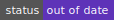
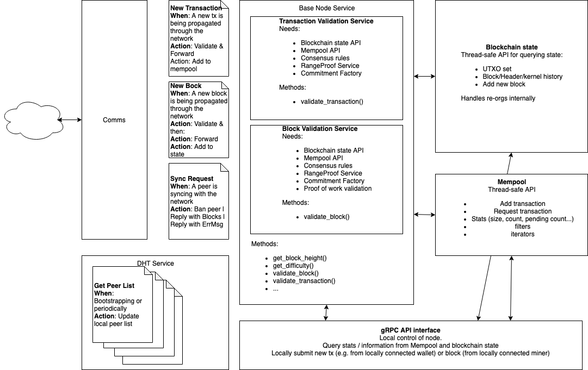

The Tari RFCs
Tari is a community-driven project. The documents presented in this RFC collection have typically gone through several iterations before reaching this point:
- Ideas and questions are posted in #tari-dev on #FreeNode IRC. This is typically short-form content with rapid feedback. Often, these conversations will lead to someone posting a proposal as a pull request into proposals.
- Proposals get debated and refined using Github's Review and pull request systems. After the content has stabilised, and the community accepts the proposal, it can be written up as a formal RFC.
- RFCs are "Requests for Comment", so although the proposals in these documents are usually well-thought out, they are not cast in stone. RFCs can, and should, undergo further evaluation and discussion by the community. RFC comments are best made using Github issues.
New RFC's should follow the format given in the RFC template.
Lifecycle
RFCs go through the following lifecycle, which roughly corresponds to the COSS:
| Status | Description | |
|---|---|---|
| Draft |  | Changes, additions and revisions can be expected. |
| Stable |  | Typographical and cosmetic changes aside, no further changes should be made. Changes to the Tari code base w.r.t. a stable RFC will lead to the RFC becoming out of date, deprecated, or retired. |
| Out of date |  | This RFC has become stale due to changes in the code base. Contributions will be accepted to make it stable again if the changes are relatively minor, otherwise it should eventually become deprecated or retired. |
| Deprecated |  | This RFC has been replaced by a newer RFC document, but is still is use in some places and/or versions of Tari. |
| Retired |  | The RFC is no longer in use on the Tari network. |
RFC-0001/Overview
An overview of the Tari network
Maintainer(s): Cayle Sharrock
License
Copyright 2018 The Tari Development Community
Redistribution and use in source and binary forms, with or without modification, are permitted provided that the following conditions are met:
- Redistributions of this document must retain the above copyright notice, this list of conditions and the following disclaimer.
- Redistributions in binary form must reproduce the above copyright notice, this list of conditions and the following disclaimer in the documentation and/or other materials provided with the distribution.
- Neither the name of the copyright holder nor the names of its contributors may be used to endorse or promote products derived from this software without specific prior written permission.
THIS DOCUMENT IS PROVIDED BY THE COPYRIGHT HOLDERS AND CONTRIBUTORS "AS IS" AND ANY EXPRESS OR IMPLIED WARRANTIES, INCLUDING, BUT NOT LIMITED TO, THE IMPLIED WARRANTIES OF MERCHANTABILITY AND FITNESS FOR A PARTICULAR PURPOSE ARE DISCLAIMED. IN NO EVENT SHALL THE COPYRIGHT HOLDER OR CONTRIBUTORS BE LIABLE FOR ANY DIRECT, INDIRECT, INCIDENTAL, SPECIAL, EXEMPLARY, OR CONSEQUENTIAL DAMAGES (INCLUDING, BUT NOT LIMITED TO, PROCUREMENT OF SUBSTITUTE GOODS OR SERVICES; LOSS OF USE, DATA, OR PROFITS; OR BUSINESS INTERRUPTION) HOWEVER CAUSED AND ON ANY THEORY OF LIABILITY, WHETHER IN CONTRACT, STRICT LIABILITY, OR TORT (INCLUDING NEGLIGENCE OR OTHERWISE) ARISING IN ANY WAY OUT OF THE USE OF THIS SOFTWARE, EVEN IF ADVISED OF THE POSSIBILITY OF SUCH DAMAGE.
Language
The key words "MUST", "MUST NOT", "REQUIRED", "SHALL", "SHALL NOT", "SHOULD", "SHOULD NOT", "RECOMMENDED", "NOT RECOMMENDED", "MAY", and "OPTIONAL" in this document are to be interpreted as described in BCP 14 (covering RFC2119 and RFC8174) when, and only when, they appear in all capitals, as shown here.
Disclaimer
The purpose of this document and its content is for information purposes only and may be subject to change or update without notice.
This document may include preliminary concepts that may or may not be in the process of being developed by the Tari community. The release of this document is intended solely for review and discussion by the community regarding the technological merits of the potential system outlined herein.
Goals
The aim of this proposal is to provide a very high-level perspective for the moving parts involved in the Tari protocol.
Related RFCs
Description
Abstract
The Tari network is composed of three layers:
- The base layer deals with Tari coins. It governed by a proof-of-work blockchain that is merged-mined with Monero. The base layer is highly secure, decentralised and relatively slow.
- A multiparty payments channel allows rapid, secure, low cost off-chain payments that are periodically settled on the base layer.
- The digital assets network. This layer manages all things to do with native digital assets. It is built for liveness, speed and scalability at the expense of decentralisation.
Currency tokens and digital assets
There are two major digital entities on the Tari network: The coins that are the unit of transfer for the Tari cryptocurrency, and the digital assets that could represent anything from tickets to in-game items.
Tari coins are the fuel that drives the entire Tari ecosystem. They share many of the properties of money, and so security is a non-negotiable requirement. In a cryptocurrency context, this is usually achieved by employing a decentralised network running a censorship-resistant protocol like Nakamoto consensus over a proof of work blockchain. As we know, proof of work blockchains are not scalable, or terribly fast.
On the other hand, the Tari network will be used to create and manage digital assets.
In Tari parlance, a digital asset is defined as a finite set of digital stateful tokens that are governed by predefined rules. A single digital asset may define anything from one to thousands of tokens within its scope.
For example, in a ticketing context, an event will be an asset. The asset definition will allocate tokens representing the tickets for that event. The ticket tokens will have state, such as its current owner and whether it has been redeemed or not. Users might be interacting with digital assets hundreds of times a second, and state updates need to be propagated and agreed upon by the network very quickly. A blockchain-enabled ticketing system is practically useless if a user has to wait for "3 block confirmations" before the bouncer will let her into a venue. Users expect near-instant state updates because centralised solutions offer them that today.
Therefore the Tari digital assets network must offer speed and scalability.
Multiple layers
The distributed system trilemma tells us that these requirements are mutually exclusive.
We can't have fast, cheap digital assets and also highly secure and decentralised currency tokens on a single system.
Tari overcomes this constraint by building three layers:
- A base layer that provides a public ledger of Tari coin transactions, secured by proof of work to maximise security,
- A multiparty payment channel, allowing funds to be sent to parties in the channel instantly, securely and with very low fees.
- A digital asset layer that manages digital asset state that is very fast and cheap, at the expense of decentralisation.
If required, the digital asset layer can refer back to the base layer to temporarily give up speed in exchange for increased security. This fallback is used to resolve consensus issues on the digital asset layer that may crop up from time to time as a result of the lower degree of decentralisation.
The Base Layer
Refer to RFC-0100/BaseLayer for more detail.
The Tari base layer has the following primary features:
- Proof of work-based blockchain using Nakamoto consensus
- Transactions and blocks based on the Mimblewimble protocol
Mimblewimble is an exciting new blockchain protocol that offers some key advantages over other UTXO-based cryptocurrencies like Bitcoin:
- Transactions are private. This means that casual observers cannot ascertain the amounts being transferred or the identities of the parties involved.
- Mimblewimble employs a novel blockchain "compression" method called cut-through that dramatically reduces the storage requirements for blockchain nodes.
- Multi-signature transactions can be easily aggregated, making such transactions very compact, and completely hiding the parties involved, or the fact that there were multiple parties involved at all.
"Mimblewimble is the most sound, scalable 'base layer' protocol we know" -- @fluffypony
Proof of work
There are a few options for the proof of work mechanism for Tari:
- Implement an existing PoW mechanism. This is a bad idea, because a nascent cryptocurrency that uses a non-unique mining algorithm is incredibly vulnerable to a 51% attack from miners from other currencies using the same algorithm. Bitcoin Gold and Verge have already experienced this, and it's a matter of time before it happens to others.
- Implement a unique PoW algorithm. This is a risky approach and comes close to breaking the #1 rule of cryptocurrency design: Never roll your own crypto.
- Merge mining. This approach is not without its own risks but offers the best trade-offs in terms of bootstrapping the network. It typically provides high levels of hash rate from day one along with 51% attack resistance assuming mining pools are well-distributed.
- A hybrid approach, utilising two or more of the above mechanisms.
Given Tari's relationship with Monero, a merge-mined strategy with Monero makes the most sense, but the PoW mechanism SHOULD be written in a way that makes it relatively easy to code, implement and switch to a different strategy in the future.
Multiparty Payment Channels
Further details about the Tari multiparty payment channel technology are given in RFC-500/PaymentChannels.
The Digital Assets Network
A more detailed proposal for the digital assets network is presented in RFC-0300/DAN. Digital assets are discussed in more detail in RFC-0310/Assets.
The Tari digital assets network (DAN) consists of a peer-to-peer network of Validator nodes. These nodes ensure the safe and efficient operation of all native digital assets on the Tari network.
Validator nodes are responsible for
- registering themselves on the base layer.
- validating and executing the contracts that create and issue new digital assets on the network.
- validating and executing instructions for changes in state of digital assets, for example allowing the transfer of ownership of a token from one person to another.
- Maintaining consensus with other validator nodes managing the same asset.
- submitting periodic checkpoints to the base layer for the state of assets under their management.
The DAN is focused on achieving high speed and scalability, without compromising on security. To achieve this we make the explicit trade-off of sacrificing decentralisation.
In many ways this is desirable, since the vast majority of assets (and their issuers) don't need or want the entire network to validate every state change in their asset contracts.
Digital assets necessarily have state. Therefore the digital assets layer must have a means of synchronising and agreeing on state that is managed simultaneously by multiple servers (a.k.a. reaching consensus).
Please refer to Tari Labs University for detailed discussions on layer 2 scaling solutions and consensus mechanisms.
Interaction between the base layer and the DAN
The base layer provides supporting services to the digital asset network. In general, the base layer only knows about Tari coin transactions. It knows nothing about the details of any digital assets and their state.
This is by design: The network cannot scale if details of digital asset contracts have to be tracked on the base layer. We envisage that there could be tens of thousands of contracts deployed on Tari. Some of those contracts may be enormous; imagine controlling every piece of inventory and their live statistics for a MMORPG. The base layer is also too slow. If any state relies on base layer transactions being confirmed, there is an immediate lag before that state change can be considered final, which kills the liveness properties we seek for the DAN.
It's better to keep the two networks almost totally decoupled from the outset, and allow each network to play to its strength.
That said, there are key interactions between the two layers. The base layer is a ledger and so it can be used as a source of truth for the DAN to use as a type of registrar as well as final court of appeal in the case of consensus disputes. This is what gives the DAN a secure fallback in case bad actors try to manipulate asset state by taking advantage of its non-decentralisation.
These interactions require making provision for additional transaction types, in addition to payment and coinbase transactions, that mark validator node registrations, contract collateral and so on.
The interplay between base layer and DAN is what incentivises every actor in the system to maintain an efficient and well-functioning network even while acting in their own self-interests.
Summary
Table 1 summarises the defining characteristics of the Tari network layers:
| Base layer | Payment Channels | DAN | |
|---|---|---|---|
| Speed | Slow | Fast | Fast |
| Scalability | Moderate | High | Very high |
| Security | High | High | Mod (High w/ fallback) |
| Decentralisation | High | Low - Med | Low - Med |
| Processes Tari coin transactions | Yes | Yes | No |
| Processes digital asset instructions | Only checkpoints | No | Yes |
RFC-1000/TariUseCases
A Digital Asset Framework

Maintainer(s): Leland Lee
License
Copyright 2019 The Tari Development Community
Redistribution and use in source and binary forms, with or without modification, are permitted provided that the following conditions are met:
- Redistributions of this document must retain the above copyright notice, this list of conditions and the following disclaimer.
- Redistributions in binary form must reproduce the above copyright notice, this list of conditions and the following disclaimer in the documentation and/or other materials provided with the distribution.
- Neither the name of the copyright holder nor the names of its contributors may be used to endorse or promote products derived from this software without specific prior written permission.
THIS DOCUMENT IS PROVIDED BY THE COPYRIGHT HOLDERS AND CONTRIBUTORS "AS IS" AND ANY EXPRESS OR IMPLIED WARRANTIES, INCLUDING, BUT NOT LIMITED TO, THE IMPLIED WARRANTIES OF MERCHANTABILITY AND FITNESS FOR A PARTICULAR PURPOSE ARE DISCLAIMED. IN NO EVENT SHALL THE COPYRIGHT HOLDER OR CONTRIBUTORS BE LIABLE FOR ANY DIRECT, INDIRECT, INCIDENTAL, SPECIAL, EXEMPLARY, OR CONSEQUENTIAL DAMAGES (INCLUDING, BUT NOT LIMITED TO, PROCUREMENT OF SUBSTITUTE GOODS OR SERVICES; LOSS OF USE, DATA, OR PROFITS; OR BUSINESS INTERRUPTION) HOWEVER CAUSED AND ON ANY THEORY OF LIABILITY, WHETHER IN CONTRACT, STRICT LIABILITY, OR TORT (INCLUDING NEGLIGENCE OR OTHERWISE) ARISING IN ANY WAY OUT OF THE USE OF THIS SOFTWARE, EVEN IF ADVISED OF THE POSSIBILITY OF SUCH DAMAGE.
Language
The key words "MUST", "MUST NOT", "REQUIRED", "SHALL", "SHALL NOT", "SHOULD", "SHOULD NOT", "RECOMMENDED", "NOT RECOMMENDED", "MAY", and "OPTIONAL" in this document are to be interpreted as described in BCP 14 (covering RFC2119 and RFC8174) when, and only when, they appear in all capitals, as shown here.
Disclaimer
The purpose of this document and its content is for information purposes only and may be subject to change or update without notice.
This document may include preliminary concepts that may or may not be in the process of being developed by the Tari community. The release of this document is intended solely for review and discussion by the community regarding the technological merits of the potential system outlined herein.
Goals
There will be many types of digital assets that can be issued on Tari. This document is intended to help potential asset issuers identify use cases for Tari that lead to the design of new types of digital assets that may or may not exist in their ecosystems today.
Related RFCs
Description
Tari digital assets may exist on the Tari Digital Assets Network (DAN), are perceived to have value and can be owned, with the associated digital data being classified as intangible, personal property.
Types
Digital assets may have the following high level classification scheme:
- Symbolic
- Insignia
- Mascots
- Event-driven or historical (eg. a rivalry or a highly temporal event)
- Artifacts or Objects
- Legendary
- Rare
- High demand
- Artistic
- Historical
- Utility
- Tickets
- In-game items
- Points
- Currency
- Full or fractional representation
- Bearer instruments / access token
- Chat stickers
- Persona
- Personality trait(s)
- Emotion(s)
- Statistics
- Superpower(s)
- Storyline(s)
- Relationship(s)
- Avatar
Behaviors
Digital asset tokens may influence the following behavioral types:
- Advance purchase
- Experience enhancement
- Sharing
- Loyalty
- Reward for performance
- Tipping
- Donating to a charity
- Collecting
- Trading
- Building / combining
Attributes
Digital assets have many different properties, which may be one or more of the following:
- Digital assets can be interactive:
- Easter eggs
- Media
- Dynamic (eg. Imagine if assets were similar to sounds, visualisations or other kinds of "demos" or "gifs")
- Game mechanics
- Evolutionary
- Easter eggs
- Digital assets can be combined to create super assets.
- Digital assets can be attribute(s) of another digital asset (e.g. wheels of a vehicle or a VIP ticket has two drink cards).
- Digital assets can have contingencies (e.g. ownership of a digital asset is contingent on ownership of a different digital asset, using this digital asset is contingent on holding it for a particular duration, etc)
- Digital assets can have utility (e.g. be useful).
- Digital assets can be used across platforms (e.g. a digital asset for a game could be used as avatars in a social network).
- Digital assets can have history.
- Digital assets can have user-generated tags and/or metadata.
Interactions
Digital asset owners may have the following interactions with the DAN and/or other people:
- Digital asset owners can attest that they have ownership over there assets at time
t. - Digital assets owners may attest ownership to an individual, to a group of friends or to the entire world.
Rules
Rules are the governance of how digital assets may be used or transferred, as defined by the asset issuer:
- Royalty Fees - Digital asset issuers can set a royalty that charges a fee every time the digital asset is transferred between parties. The fee as defined by the issuer can be fixed or dynamic or follow a complex formula and value is granted to the issuer(s) and/or other entities.
- Contingency - Digital asset ownership/interaction may be contingent/dependent on another asset.
- Timing Controls - Digital assets can only be transferred or used at particular times.
- Sharing - Digital assets can be shared to others or even co-owned.
- Privacy - Ownership of a digital asset can be changed from private to public.
- Upgradability/Versioning - Digital assets can be upgraded and/or versioned.
- Redeemability - Digital assets can be used once or multiple times.
Examples
Some examples of how different types of digital assets with different attributes, rules and interactions may be manifested are shown below.
Crystal Skull of Akador
- Is rare
- Is 1 of 5
- Is legendary
- https://indianajones.fandom.com/wiki/Crystal_Skull_of_Akator
- Press reports that this artifact could be worth $X
- Drives collectibility
- Drives advance purchase
- If you are one of the first 100,000 people to buy tickets to Indiana Jones World you have a chance of winning this 1 of 5 artifact.
- Has superpowers and utility
- If you have this item while visiting Indiana Jones World, you get to skip the line three times.
- Is a contingency for another asset
- If you collect this item, two Sankara stones, and the Cross of Coronado, you can buy the ark of the covenant:
- Ark of the covenant is rare. It is 1 of 1.
- Ark of the covenant is legendary.
- Ark of the covenant gives you lifetime access to Indiana Jones World.
- Ark of the covenant has rules; 20% of the resale price goes to Indiana Jones World.
- If you collect this item, two Sankara stones, and the Cross of Coronado, you can buy the ark of the covenant:
AB de Villiers' bat
- Isn’t Rare
- Is 1 of 100,000
- Is Legendary
- https://www.youtube.com/watch?v=HK6B2da3DPA
- Drives collectibility
- Is part of a series of bats from famous batsmen.
- Can be combined with other assets
- Be one of the first 10 people to combine six bats to turn this asset into a One Day International (ODI) century bat:
- ODI century bats are rare, they are 1 of 10.
- ODI century bats are legendary.
- Be one of the first 10 people to combine six bats to turn this asset into a One Day International (ODI) century bat:
- Has no superpowers
- Has no utility
- Has no rules
OVO Owl x Supreme
- Is Rare
- Is 1 of 200
- Is Legendary
- https://www.supremenewyork.com
- https://us.octobersveryown.com
- Has a game mechanic
- Every time it’s transferred, it may become a golden ticket that grants you access to any Drake show.
- If its become a golden ticket and is transferred, it loses its golden ticket superpower.
- Has utility
- Unlocks exclusive media content feat. Drake hosted by OVO SOUND.
- May become a golden ticket that grants you access to any Drake show.
- Has rules
- Every time its transferred Supreme and OVO SOUND receive 25% of the transaction value.
RFC-0010/CodeStructure
Tari code structure and organisation
Maintainer(s): Cayle Sharrock
License
Copyright
Redistribution and use in source and binary forms, with or without modification, are permitted provided that the following conditions are met:
- Redistributions of this document must retain the above copyright notice, this list of conditions and the following disclaimer.
- Redistributions in binary form must reproduce the above copyright notice, this list of conditions and the following disclaimer in the documentation and/or other materials provided with the distribution.
- Neither the name of the copyright holder nor the names of its contributors may be used to endorse or promote products derived from this software without specific prior written permission.
THIS DOCUMENT IS PROVIDED BY THE COPYRIGHT HOLDERS AND CONTRIBUTORS "AS IS" AND ANY EXPRESS OR IMPLIED WARRANTIES, INCLUDING, BUT NOT LIMITED TO, THE IMPLIED WARRANTIES OF MERCHANTABILITY AND FITNESS FOR A PARTICULAR PURPOSE ARE DISCLAIMED. IN NO EVENT SHALL THE COPYRIGHT HOLDER OR CONTRIBUTORS BE LIABLE FOR ANY DIRECT, INDIRECT, INCIDENTAL, SPECIAL, EXEMPLARY, OR CONSEQUENTIAL DAMAGES (INCLUDING, BUT NOT LIMITED TO, PROCUREMENT OF SUBSTITUTE GOODS OR SERVICES; LOSS OF USE, DATA, OR PROFITS; OR BUSINESS INTERRUPTION) HOWEVER CAUSED AND ON ANY THEORY OF LIABILITY, WHETHER IN CONTRACT, STRICT LIABILITY, OR TORT (INCLUDING NEGLIGENCE OR OTHERWISE) ARISING IN ANY WAY OUT OF THE USE OF THIS SOFTWARE, EVEN IF ADVISED OF THE POSSIBILITY OF SUCH DAMAGE.
Language
The key words "MUST", "MUST NOT", "REQUIRED", "SHALL", "SHALL NOT", "SHOULD", "SHOULD NOT", "RECOMMENDED", "NOT RECOMMENDED", "MAY", and "OPTIONAL" in this document are to be interpreted as described in BCP 14 (covering RFC2119 and RFC8174) when, and only when, they appear in all capitals, as shown here.
Disclaimer
The purpose of this document and its content is for information purposes only and may be subject to change or update without notice.
This document may include preliminary concepts that may or may not be in the process of being developed by the Tari community. The release of this document is intended solely for review and discussion by the community regarding the technological merits of the potential system outlined herein.
Goals
This RFC describes and explains the Tari codebase layout.
Related RFCs
None.
Description
The code follows a Domain-Driven Design layout (DDD), with top-level directories falling into infrastructure, domain and application layers.
Infrastructure layer
This layer provides a set of crates which have general infrastructural utility. The rest of the Tari codebase can make use of these crates to obtain persistence, communication and cryptographic services. The infrastructure layer doesn't know anything about blockchains, transactions, or digital assets.
We recommend that code in this layer generalises infrastructure services behind abstraction layers as much as is reasonable, so that specific implementations can be swapped out with relative ease.
Domain layer
The Domain layer houses the Tari "business logic". All protocol-related concepts and procedures are defined and implemented here.
This entails that any and all terms defined in the Glossary will have a software implementation here, and only here. They can be used in the Application layer, but must be implemented in the Domain layer.
The domain layer can make use of crates in the infrastructure layer to achieve its goals.
Application layer
Applications build on top of the domain layer to produce the executable software that is deployed as part of the Tari network.
As an example, the following base layer applications may be developed as part of the Tari protocol release:
- A standalone miner (tari_miner)
- A pool miner (tari_pool_miner)
- A CLI wallet for the Tari cryptocurrency (cli_wallet)
- A base node executable (tari_basenode)
- A REST API server for the base node
Code layout
The top-level source code directories in this repository reflect the respective DDD layers; except that there are two domain layer directories, corresponding to the two network layers that make up the Tari network.
-
The
infrastructuredirectory contains application-layer code and is not Tari-specific. It holds the following crates:comms: The networking and messaging subsystemcrypto: All cryptographic services, including a Curve25519 implementationstorage: Data persistence services, including an LMDB persistence implementationmerklemountainrange: An independant implementation of a merkle mountain rangederive: A crate to containderive(...)macros
-
base_layeris a domain-layer directory and contains:blockchain: The Tari consensus codecore: common classes and traits, such as Transactions and Blocksmempool: The unconfirmed transaction pool implementationmining: The merge-mining modulesp2p: The block and transaction propagation moduleapi: interfaces for clients and wallets to interact with the base layer components
-
digital_assets_layeris a domain-layer directory. It contains code related to the management of native Tari digital assets.- Its sub-structure is TBD.
-
applicationscontains crates for all the application-layer executables that form part of the Tari codebase.
RFC-0100/BaseLayer
The Tari Base Layer
Maintainer(s): Cayle Sharrock
License
Copyright 2018 The Tari Development Community
Redistribution and use in source and binary forms, with or without modification, are permitted provided that the following conditions are met:
- Redistributions of this document must retain the above copyright notice, this list of conditions and the following disclaimer.
- Redistributions in binary form must reproduce the above copyright notice, this list of conditions and the following disclaimer in the documentation and/or other materials provided with the distribution.
- Neither the name of the copyright holder nor the names of its contributors may be used to endorse or promote products derived from this software without specific prior written permission.
THIS DOCUMENT IS PROVIDED BY THE COPYRIGHT HOLDERS AND CONTRIBUTORS "AS IS" AND ANY EXPRESS OR IMPLIED WARRANTIES, INCLUDING, BUT NOT LIMITED TO, THE IMPLIED WARRANTIES OF MERCHANTABILITY AND FITNESS FOR A PARTICULAR PURPOSE ARE DISCLAIMED. IN NO EVENT SHALL THE COPYRIGHT HOLDER OR CONTRIBUTORS BE LIABLE FOR ANY DIRECT, INDIRECT, INCIDENTAL, SPECIAL, EXEMPLARY, OR CONSEQUENTIAL DAMAGES (INCLUDING, BUT NOT LIMITED TO, PROCUREMENT OF SUBSTITUTE GOODS OR SERVICES; LOSS OF USE, DATA, OR PROFITS; OR BUSINESS INTERRUPTION) HOWEVER CAUSED AND ON ANY THEORY OF LIABILITY, WHETHER IN CONTRACT, STRICT LIABILITY, OR TORT (INCLUDING NEGLIGENCE OR OTHERWISE) ARISING IN ANY WAY OUT OF THE USE OF THIS SOFTWARE, EVEN IF ADVISED OF THE POSSIBILITY OF SUCH DAMAGE.
Language
The key words "MUST", "MUST NOT", "REQUIRED", "SHALL", "SHALL NOT", "SHOULD", "SHOULD NOT", "RECOMMENDED", "NOT RECOMMENDED", "MAY", and "OPTIONAL" in this document are to be interpreted as described in BCP 14 (covering RFC2119 and RFC8174) when, and only when, they appear in all capitals, as shown here.
Disclaimer
The purpose of this document and its content is for information purposes only and may be subject to change or update without notice.
This document may include preliminary concepts that may or may not be in the process of being developed by the Tari community. The release of this document is intended solely for review and discussion by the community regarding the technological merits of the potential system outlined herein.
Goals
This document describes the major software components of the Tari Base Layer network.
Related RFCs
Description
The Tari Base Layer network comprises the following major pieces of software:
- Base Layer full node implementation - The base layer full nodes are the consensus-critical pieces of software for the Tari base layer and cryptocurrency. The base nodes validate and transmit transactions and blocks and maintain consensus about the longest valid proof-of-work blockchain.
- Mining software - Mining nodes perform proof-of-work to secure the base layer and compete to submit the
next valid block into the Tari blockchain. Tari is merge-mined with Monero. The Tari source provides two alternatives
for Tari miners:
- A standalone miner
- A stratum-compatible pool miner.
- Wallet software - Client software and APIs offering means to construct transactions, query nodes for information and maintain personal private keys
These three main pieces of software make use of common functionality provided by the following libraries within the Tari project source code:
- Local data storage
- Cryptography services
- Peer-to-peer networking and messaging services
RFC-0010 provides more detail on how the source code is structured within the Tari codebase.
RFC-0110/BaseNodes
Base Layer Full Nodes (Base Nodes)
Maintainer(s): Cayle Sharrock SW van heerden
License
Copyright 2019 The Tari Development Community
Redistribution and use in source and binary forms, with or without modification, are permitted provided that the following conditions are met:
- Redistributions of this document must retain the above copyright notice, this list of conditions and the following disclaimer.
- Redistributions in binary form must reproduce the above copyright notice, this list of conditions and the following disclaimer in the documentation and/or other materials provided with the distribution.
- Neither the name of the copyright holder nor the names of its contributors may be used to endorse or promote products derived from this software without specific prior written permission.
THIS DOCUMENT IS PROVIDED BY THE COPYRIGHT HOLDERS AND CONTRIBUTORS "AS IS" AND ANY EXPRESS OR IMPLIED WARRANTIES, INCLUDING, BUT NOT LIMITED TO, THE IMPLIED WARRANTIES OF MERCHANTABILITY AND FITNESS FOR A PARTICULAR PURPOSE ARE DISCLAIMED. IN NO EVENT SHALL THE COPYRIGHT HOLDER OR CONTRIBUTORS BE LIABLE FOR ANY DIRECT, INDIRECT, INCIDENTAL, SPECIAL, EXEMPLARY, OR CONSEQUENTIAL DAMAGES (INCLUDING, BUT NOT LIMITED TO, PROCUREMENT OF SUBSTITUTE GOODS OR SERVICES; LOSS OF USE, DATA, OR PROFITS; OR BUSINESS INTERRUPTION) HOWEVER CAUSED AND ON ANY THEORY OF LIABILITY, WHETHER IN CONTRACT, STRICT LIABILITY, OR TORT (INCLUDING NEGLIGENCE OR OTHERWISE) ARISING IN ANY WAY OUT OF THE USE OF THIS SOFTWARE, EVEN IF ADVISED OF THE POSSIBILITY OF SUCH DAMAGE.
Language
The key words "MUST", "MUST NOT", "REQUIRED", "SHALL", "SHALL NOT", "SHOULD", "SHOULD NOT", "RECOMMENDED", "NOT RECOMMENDED", "MAY", and "OPTIONAL" in this document are to be interpreted as described in BCP 14 (covering RFC2119 and RFC8174) when, and only when, they appear in all capitals, as shown here.
Disclaimer
The purpose of this document and its content is for information purposes only and may be subject to change or update without notice.
This document may include preliminary concepts that may or may not be in the process of being developed by the Tari community. The release of this document is intended solely for review and discussion by the community regarding the technological merits of the potential system outlined herein.
Goals
This document describes the roles that base nodes play in the Tari network and their general approach for doing so.
Related RFCs
Description
Broad requirements
Tari Base Nodes form a peer-to-peer network for a proof-of-work based blockchain running the Mimblewimble protocol. The proof of work is performed via merge mining with Monero. Arguments for this design are presented in the overview.
Tari Base Nodes MUST carry out the following tasks:
- Validate all Tari coins.
- Propagate valid transactions to peer nodes.
- Validate all new blocks received.
- Propagate validated new blocks to peer nodes.
- Connect to peer nodes to catch up (sync) its blockchain state.
- Provide historical block information to peers that are syncing.
Once the Digital Assets Network goes live, Base Nodes will also need to support the tasks described in RFC-0300/Assets. These requirements are omitted for the moment.
To carry out these tasks effectively, Base Nodes SHOULD:
- Save the blockchain into a indexed local database.
- Maintain an index of all unspent outputs (UTXOs).
- Maintain a list of all pending, valid transactions that have not yet been mined (the mempool).
- Manage a list of Base Node peers present on the network.
Tari Base nodes MAY implement chain pruning strategies that are features of Mimblewimble, including transaction cut-through and block compaction techniques.
Tari Base Nodes MAY also implement the following services via an API to clients. Such clients may include "light" clients, block explorers, wallets, and Tari applications:
- Block queries.
- Kernel data queries.
- Transaction queries.
- Submission of new transactions.
Transaction validation and propagation
Base nodes can be notified of new transactions by
- connected peers.
- clients via APIs.
When a new transaction has been received, it has the unvalidated ValidationState. The transaction is then passed
to the transaction validation service, where its state will become either rejected, timelocked or validated.
The transaction validation service checks that:
- all inputs to the transaction are valid UTXOs.
- no inputs are duplicated.
- all inputs are able to be spent (they're not time-locked).
- all inputs are signed by their owners.
- all outputs have valid range proofs.
- no outputs currently exist in the UTXO set.
- the transaction does not have timelocks applied, limiting it from being mined and added to the blockchain before a specified block height or timestamp has been reached.
- the transaction excess has a valid signature.
- the transaction excess is a valid public key. This proves that: $$ \Sigma \left( \mathrm{inputs} - \mathrm{outputs} - \mathrm{fees} \right) = 0 $$
Rejected transactions are dropped silently.
Timelocked transactions are:
- marked with a timelocked status and gets added to the mempool.
- will be evaluated again at a later state to determine if the timelock has passed and if it can be upgraded to 'Validated' status.
- More detailed information in timelocks RFC document.
Validated transactions are:
- Added to the mempool.
- forwarded to peers using the transaction BroadcastStrategy.
Block validation and propagation
The Block validation and propagation process is analogous to that of transactions.
New blocks are received from the peer-to-peer network, or from an API call if the Base Node is connected to a Miner.
When a new block is received, it is assigned the unvalidated ValidationState. The block is then passed to the
block validation service. The validation service checks that
- the block hasn't been processed before.
- every transaction in the block is valid.
- the proof-of-work is valid.
- the block header is well-formed.
- the block is being added to the chain with the highest accumulated proof-of-work.
- it is possible for the chain to temporarily fork; base nodes SHOULD account for forks up to some configured depth.
- it is possible that blocks may be received out of order; particularly while syncing. Base Nodes SHOULD keep blocks. that have block heights greater than the current chain tip in memory for some preconfigured period.
- the sum of all excesses is a valid public key. This proves that: $$ \Sigma \left( \mathrm{inputs} - \mathrm{outputs} - \mathrm{fees} \right) = 0$$
- check if cut-through was applied. If a block contains already spent outputs, reject that block.
Because MimbleWimble blocks can be simple be seen as large transactions with multiple inputs and outputs, the block validation service checks all transaction verification on the block as well.
Rejected blocks are dropped silently.
Base Nodes are not obliged to accept connections from any peer node on the network. In particular:
- Base Nodes MAY refuse connections from peers that have been added to a blacklist.
- Base Nodes MAY be configured to exclusively connect to a given set of peer nodes.
Validated blocks are
- added to the blockchain.
- forwarded to peers using the block BroadcastStrategy.
In addition, when a block has been validated and added to the blockchain:
- The mempool MUST also remove all transactions that are present in the newly validated block.
- The UTXO set MUST be updated; removing all inputs in the block, and adding all the new outputs in it.
Synchronising and pruning of the chain
Syncing, pruning and cut-through is discussed in detail in RFC-0140
Archival nodes
Archival nodes are used to keep a complete history of the blockchain since genesis block, they do not employ pruning at all. These nodes will allow full syncing of the blockchain because normal nodes will not keep the full history to enable this.
RFC-0111/BaseNodesArchitecture
Base Node Architecture
Maintainer(s): Cayle Sharrock
License
Copyright 2019 The Tari Development Community
Redistribution and use in source and binary forms, with or without modification, are permitted provided that the following conditions are met:
- Redistributions of this document must retain the above copyright notice, this list of conditions and the following disclaimer.
- Redistributions in binary form must reproduce the above copyright notice, this list of conditions and the following disclaimer in the documentation and/or other materials provided with the distribution.
- Neither the name of the copyright holder nor the names of its contributors may be used to endorse or promote products derived from this software without specific prior written permission.
THIS DOCUMENT IS PROVIDED BY THE COPYRIGHT HOLDERS AND CONTRIBUTORS "AS IS" AND ANY EXPRESS OR IMPLIED WARRANTIES, INCLUDING, BUT NOT LIMITED TO, THE IMPLIED WARRANTIES OF MERCHANTABILITY AND FITNESS FOR A PARTICULAR PURPOSE ARE DISCLAIMED. IN NO EVENT SHALL THE COPYRIGHT HOLDER OR CONTRIBUTORS BE LIABLE FOR ANY DIRECT, INDIRECT, INCIDENTAL, SPECIAL, EXEMPLARY, OR CONSEQUENTIAL DAMAGES (INCLUDING, BUT NOT LIMITED TO, PROCUREMENT OF SUBSTITUTE GOODS OR SERVICES; LOSS OF USE, DATA, OR PROFITS; OR BUSINESS INTERRUPTION) HOWEVER CAUSED AND ON ANY THEORY OF LIABILITY, WHETHER IN CONTRACT, STRICT LIABILITY, OR TORT (INCLUDING NEGLIGENCE OR OTHERWISE) ARISING IN ANY WAY OUT OF THE USE OF THIS SOFTWARE, EVEN IF ADVISED OF THE POSSIBILITY OF SUCH DAMAGE.
Language
The key words "MUST", "MUST NOT", "REQUIRED", "SHALL", "SHALL NOT", "SHOULD", "SHOULD NOT", "RECOMMENDED", "NOT RECOMMENDED", "MAY", and "OPTIONAL" in this document are to be interpreted as described in BCP 14 (covering RFC2119 and RFC8174) when, and only when, they appear in all capitals, as shown here.
Disclaimer
The purpose of this document and its content is for information purposes only and may be subject to change or update without notice.
This document may include preliminary concepts that may or may not be in the process of being developed by the Tari community. The release of this document is intended solely for review and discussion by the community regarding the technological merits of the potential system outlined herein.
Goals
Describe the high-level the Base Node architecture.
Architectural layout
The base node architecture is designed to be modular, robust and performant.

The major components are separated into separate modules. Each module exposes a public API which typically communicates with other modules using the Command Pattern.
Base Node Service
The Base Node Service is an instantiation of a Tari Comms Service, which subscribes to and handles specific messages coming from the P2P Tari network via the Comms Module of a live Tari communications node. The Base Node Service's job is to delegate the jobs required by those messages to its submodules, consisting primarily of the Transaction Validation Service and the Block Validation service.
The Base Node Service will pass messages back to the P2P network via the Comms Module based on the results of its actions.
The primary messages that a Base Node will subscribe to are:
-
NewTransaction: A New Transaction is being propagated over the network. If it hasn't seen the transaction before, the Base Node will validate the transaction and if it is valid:
- add it to its MemPool
- pass the transaction onto peers.
Otherwise the transaction is dropped.
-
NewBlock: A newly mined block is being propagated over the network, If the node hasn't seen the block before, the node will validate it. It's action depends on the validation outcome:
- Invalid block: Drop the block.
- Valid block appending to the longest chain: Add the block to the local state; propagate the block to peers.
- Valid block forking off main chain: Add the block to the local state; propagate the block to peers.
- Valid block building off unknown block: Add the orphan block to local state.
-
Sync Request: A peer is synchronising state and is asking for block data. The node can decide to
- ignore or ban the peer (based on previous behaviour heuristics)
- Try and provide the data, returning an appropriate response. Note that most nodes can only offer block data up until their pruning horizon. Only full archival nodes can return the full block history. See RFC-0140 for more details.
The validation procedures are complex and thus are encapsulated into their own sub-services. These services hold
references to the blockchain state API, the mempool API, a range proof service and whatever other modules they need to
complete their work. Each validation module has a single primary method, validate_xxx(), which takes in the
transaction or block to be validated and carries out the validation logic.
DHT Service
Peer discovery is a key service that blockchain nodes provide so that the peer mesh network can be navigated by the full nodes making up the network.
In Tari, the peer-to-peer network is used by more than just full nodes (Base Nodes), but also by Validator Nodes, and Tari and DAN clients.
For this reason, peer management is handled by the Comms layer internally. If a Base Node wants to propagate a message,
a new Block or Transaction, for example, it simply selects a BROADCAST strategy for the message and the comms layer
will do the rest.
When a node wishes to query a peer for it's peer list, this request will be handled by the DHTService. It will
communicate with its Comms module's Peer Manager, and provide that information to the peer.
Blockchain state module
The blockchain state module is responsible for providing a persistent storage solution for blockchain state data. For Tari, this is delivered using the memory-mapped database LMDB. LMDB is highly performant, intelligent and straightforward to use. An LMDB database is essentially treated as a hash map data structure that transparently handles memory caching, disk I/O, and multithreaded access.
The blockchain module is able to run as a standalone service. All communication with clients is done via message channels. This allows the blockchain state service to completely control and manage read and write access to the underlying blockchain state, reducing the scope for race conditions and deadlocks.
Since a message-based approach is employed, no read-write locks are required at the blockchain state module level.
Rust's channel infrastructure in the standard library is fairly limited. Therefore we propose to use the crossbeam-channel and crossbeam-queue libraries for managing message passing between the blockchain state module and its clients. Messages are constructed using Rust enums using the Command Pattern.
Inside the Blockchain state module, data access could be managed by a single thread. However, since we're managing requests via a single message queue, and LMDB can handle multiple thread access it is fairly straightforward to extend data access to multiple threads using a thread pool.
The blockchain state API will be fairly rich, since it will serve not only base nodes talking to the Tari P2P network, but also applications such as block explorers and monitoring programs via a gRPC interface.
A non-exhaustive list of methods the blockchain state module API will expose include:
- checking whether a given UTXO is in the current UTXO set
- requesting the latest block height
- requesting the total accumulated work on the longest chain
- request a specific block at a given height
- request the merklish root commitment of the current UTXO set
- request a block header for a given height
- request the block header for the chain tip
- validate signatures for a given transaction kernel
- validate a new block without adding it to the state tree
- validate and add a (validated) new block to the state, and inform of the result (orphaned, fork, re-org, etc)
Mempool module
The mempool module tracks (valid) transactions that the node knows about but that have not yet been included into a block. The mempool is ephemeral and non-consensus critical and as such may be a memory-only data structure. Maintaining a large mempool is far more important for base nodes serving miners than those serving wallets. A mempool will slowly rebuild after a node reboots.
That said, the mempool module must be thread safe. The Tari Mempool module handles requests in the same way as the Blockchain state module does: via crossbeam-channel queues. The mempool structure itself is a set of hash maps as described in RFC-0190. For performance reasons, it may be worthwhile using a concurrent hash map implementation backed by a thread pool, although a single thread may suffice.
gRPC interface
Base nodes need to provide a local communication interface in a addition to the P2P communication interface. This is best achieved using gRPC. The Base node gRPC interface provides access to the public API methods of the base node service, the mempool module and the blockchain state module, as discussed above.
gRPC access is useful for tools like local UIs to a running base node; client wallets running on the same machine as the base node that want a more direct communication interface to the node than the P2P network provides, third party applications such as block explorers, and of course, miners.
RFC-0130/Mining
Full-node mining on Tari base layer
Maintainer(s): [Yuko Roodt] (https://github.com/neonknight64)
License
Copyright 2018 The Tari Development Community
Redistribution and use in source and binary forms, with or without modification, are permitted provided that the following conditions are met:
- Redistributions of this document must retain the above copyright notice, this list of conditions and the following disclaimer.
- Redistributions in binary form must reproduce the above copyright notice, this list of conditions and the following disclaimer in the documentation and/or other materials provided with the distribution.
- Neither the name of the copyright holder nor the names of its contributors may be used to endorse or promote products derived from this software without specific prior written permission.
THIS DOCUMENT IS PROVIDED BY THE COPYRIGHT HOLDERS AND CONTRIBUTORS "AS IS" AND ANY EXPRESS OR IMPLIED WARRANTIES, INCLUDING, BUT NOT LIMITED TO, THE IMPLIED WARRANTIES OF MERCHANTABILITY AND FITNESS FOR A PARTICULAR PURPOSE ARE DISCLAIMED. IN NO EVENT SHALL THE COPYRIGHT HOLDER OR CONTRIBUTORS BE LIABLE FOR ANY DIRECT, INDIRECT, INCIDENTAL, SPECIAL, EXEMPLARY, OR CONSEQUENTIAL DAMAGES (INCLUDING, BUT NOT LIMITED TO, PROCUREMENT OF SUBSTITUTE GOODS OR SERVICES; LOSS OF USE, DATA, OR PROFITS; OR BUSINESS INTERRUPTION) HOWEVER CAUSED AND ON ANY THEORY OF LIABILITY, WHETHER IN CONTRACT, STRICT LIABILITY, OR TORT (INCLUDING NEGLIGENCE OR OTHERWISE) ARISING IN ANY WAY OUT OF THE USE OF THIS SOFTWARE, EVEN IF ADVISED OF THE POSSIBILITY OF SUCH DAMAGE.
Language
The key words "MUST", "MUST NOT", "REQUIRED", "SHALL", "SHALL NOT", "SHOULD", "SHOULD NOT", "RECOMMENDED", "NOT RECOMMENDED", "MAY", and "OPTIONAL" in this document are to be interpreted as described in BCP 14 (covering RFC2119 and RFC8174) when, and only when, they appear in all capitals, as shown here.
Disclaimer
The purpose of this document and its content is for information purposes only and may be subject to change or update without notice.
This document may include preliminary concepts that may or may not be in theprocess of being developed by the Tari community. The release of this document is intended solely for review and discussion by the community regarding the technological merits of the potential system outlined herein.
Goals
This document will provide a brief overview of the Tari merged mining process and will introduce the primary functionality required of the Mining Server and Mining Worker.
Related RFCs
Description
Assumptions
- That the Tari blockchain will be merged mined with Monero.
- The Tari Base Layer has a network of Base Nodes that verify and propagate valid transactions and blocks.
Abstract
The process of merged mining Tari with Monero on the Tari Base Layer is performed by Mining Servers and Mining Workers. Mining Servers are responsible for constructing new blocks by bundling transactions from the mempool of a connected Base Node. They then distribute Proof-of-Work(PoW) tasks to Mining Workers in an attempt to solve newly created blocks. Solved solutions and shares are sent by the Mining Workers to the Mining Server, who in turns verifies the solution and distributes the newly created blocks to the Base Node and Monero Node for inclusion in their respective blockchains.
Merged mining on the Tari Base Layer
This document is divided into three parts. First, a brief overview of the merged mining process and the interactions between the Base Node, Mining Server and Mining Worker will be provided, then the primary functionality required of the Mining Server and Mining Worker will be proposed.
Overview of the Tari merged mining process using Mining Servers and Mining Workers
Mining on the Tari Base Layer consists of three primary entities: the Base Nodes, Mining Servers and Mining Workers. A description of the Base Node is provided in [RFC-0110/Base Nodes] (https://tari-project.github.io/tari/RFC-0110_BaseNodes.html). A Mining Server is connected locally or remotely to a Tari Base Node and a Monero Node, and is responsible for constructing Tari and Monero Blocks from their respective mempools. The Mining Server should retrieve transactions from the mempool of the connected Base Node and assemble a new Tari block by bundling transactions together.
Mining servers may re-verify transactions before including them in a new Tari block, but this enforcement of verification and transaction rules such as signatures and timelocks are the responsibility of the connected Base node. Mining servers are responsible for cut-through as this is required for scalability and privacy.
To enable Merged mining of Tari with Monero, both a Tari and a Monero block needs to be created and linked. First, a new Tari block is created and then the block header hash of the new Tari block is included in the coinbase transaction of the new Monero block. Once a new merged mined Monero block has been constructed, PoW tasks can then be sent to the connected Mining Workers that will attempt to solve the block by performing the latest released version of the PoW algorithm selected by Monero.
Assuming the Tari difficulty is less than the Monero difficulty, miners get rewarded for solving the PoW at any difficulty above the Tari difficulty. If the block is solved above the Tari difficulty, a new Tari block is mined. If the difficulty is also greater than the Monero difficulty, a new Monero block is mined as well. In either event, the header for the candidate Monero block is included in the Tari block header.
If the PoW solution was sufficient to meet the difficult level of both the Tari and Monero blockchains, then the individual blocks for each blockchain can be sent from the Mining Server to the Base Node and Monero Node to be added to the respective blockchains.
Every Tari block must include the solved Monero block’s information (block header hash, Merkle tree branch, and hash of the coinbase transaction) into the PoW summary section of the Tari block header. If the PoW solution found by the Mining Workers only solved the problem at the Tari difficulty, the Monero block can be discarded.
This process will ensure that the Tari difficulty remains independent. Adjusting the difficulty will ensure that the Tari block times are preserved. Also, the Tari block time can be less than, equal or greater than the Monero block times. A more detailed description of the Merged Mining process between a Primary and Auxiliary blockchain is provided in the [Merged Mining TLU report] (https://tlu.tarilabs.com/merged-mining/merged-mining.html).
Functionality required by the Tari Mining Server
- The Tari blockchain MUST have the ability to be merged mined with Monero.
- The Mining Server MUST maintain a local or remote connection with a Base Node and a Monero Node.
- It MUST have a mechanism to construct a new Tari and Monero block by selecting transactions from the different Tari and Monero mempools that need to be included in the different blocks.
- It MUST apply cut-through when mining Tari transactions from the mempool and only add the excess to the list of new Tari block transactions.
- It MAY have a configurable transaction selection mechanism for the block construction process.
- It MAY have the ability to re-verify transactions before including them in a new Tari block.
- It MUST have the ability to include the block header hash of the new Tari block into the coinbase section of a newly created Monero block to enable merged mining.
- It MUST be able to include the Monero block header hash, Merkle tree branch and hash of the coinbase transaction of the Monero block into the PoW summary field of the new Tari block header.
- It MUST have the ability to transmit and distribute PoW tasks for the newly created Monero block, that contains the Tari block information, to connected Mining Workers.
- It MUST verify PoW solutions received from Mining Workers and it MUST reject and discard invalid solutions or solutions that do not meet the minimum required difficulty.
- The Mining Server MAY keep track of mining share contributions of the connected Mining Workers.
- It MUST submit completed Tari blocks to the Tari Base Node.
- It MUST submit completed Monero blocks to the Monero Network.
Functionality required by the Tari Mining Worker
- It MUST maintain a local or remote connection to a Mining Server.
- It MUST have the ability to receive PoW tasks from the connected Mining Server.
- It MUST have the ability to perform the latest released version of Monero's PoW algorithm on the received PoW tasks.
- It MUST attempt to solve the PoW task at the difficulty specified by the Mining Server.
- It MUST submit completed shares to the connected Mining Server.
RFC-0140/SyncAndSeeding
Syncing strategies and objectives
Maintainer(s): SW van heerden
License
Copyright 2018 The Tari Development Community
Redistribution and use in source and binary forms, with or without modification, are permitted provided that the following conditions are met:
- Redistributions of this document must retain the above copyright notice, this list of conditions and the following disclaimer.
- Redistributions in binary form must reproduce the above copyright notice, this list of conditions and the following disclaimer in the documentation and/or other materials provided with the distribution.
- Neither the name of the copyright holder nor the names of its contributors may be used to endorse or promote products derived from this software without specific prior written permission.
THIS DOCUMENT IS PROVIDED BY THE COPYRIGHT HOLDERS AND CONTRIBUTORS "AS IS" AND ANY EXPRESS OR IMPLIED WARRANTIES, INCLUDING, BUT NOT LIMITED TO, THE IMPLIED WARRANTIES OF MERCHANTABILITY AND FITNESS FOR A PARTICULAR PURPOSE ARE DISCLAIMED. IN NO EVENT SHALL THE COPYRIGHT HOLDER OR CONTRIBUTORS BE LIABLE FOR ANY DIRECT, INDIRECT, INCIDENTAL, SPECIAL, EXEMPLARY, OR CONSEQUENTIAL DAMAGES (INCLUDING, BUT NOT LIMITED TO, PROCUREMENT OF SUBSTITUTE GOODS OR SERVICES; LOSS OF USE, DATA, OR PROFITS; OR BUSINESS INTERRUPTION) HOWEVER CAUSED AND ON ANY THEORY OF LIABILITY, WHETHER IN CONTRACT, STRICT LIABILITY, OR TORT (INCLUDING NEGLIGENCE OR OTHERWISE) ARISING IN ANY WAY OUT OF THE USE OF THIS SOFTWARE, EVEN IF ADVISED OF THE POSSIBILITY OF SUCH DAMAGE.
Language
The key words "MUST", "MUST NOT", "REQUIRED", "SHALL", "SHALL NOT", "SHOULD", "SHOULD NOT", "RECOMMENDED", "NOT RECOMMENDED", "MAY", and "OPTIONAL" in this document are to be interpreted as described in BCP 14 (covering RFC2119 and RFC8174) when, and only when, they appear in all capitals, as shown here.
Disclaimer
The purpose of this document and its content is for information purposes only and may be subject to change or update without notice.
This document may include preliminary concepts that may or may not be in the process of being developed by the Tari community. The release of this document is intended solely for review and discussion by the community regarding the technological merits of the potential system outlined herein.
Goals
This document describes the process of Syncing, seeding, pruning and cut-through.
Related RFCs
Descriptions
Syncing
When a new node comes online, loses connection or encounters a chain re-organisation that is longer than it can tolerate, it must enter syncing mode. This will allow it to recover its state to the newest up to date state. Syncing can be divided into 2 SynchronisationStrategys, complete sync and sync. Complete sync will mean that the node communicates with an archive node to get the complete history of every single block from genesis block. Sync will involve the node getting every block from its pruning horizon to [current head](current head), as well as every block header from genesis block.
Complete Sync
Complete sync is only available from archive nodes, as these will be the only nodes that will be able to supply the complete history required to sync every block with every transaction from genesis block up onto current head.
Syncing process
The syncing process MUST be done in the following steps:
- Set SynchronisationState to
Synchronising. - Asks peers for their latest block, so it can get the total proof of work.
- Choose the longest chain based on total PoW done on that chain.
- Selects a connected peer with the longest chain to sync from, this is based on the following criteria:
- Does the peer have a high enough pruning horizon.
- Does the peer allow syncing.
- Does the peer have a low latency.
- Download all headers from genesis block up onto current head, and validate the headers as you receive them.
- Download UTXO set at pruning horizon.
- Download all blocks from pruning horizon up to current head, if the node is doing a complete sync, the pruning horizon will just be infinite, which means you will download all blocks ever created.
- Validate blocks as if they where just mined and then received, in chronological order.
After this process the node will be in sync and able to process blocks and transaction normally.
Keeping in sync
The node SHOULD periodically test its peers with ping messages to ensure that they are alive. When a node sends a ping message, it MUST include the current total PoW, hash of the current head and genesis block hash of its own current longest chain in the ping message. The receiving node MUST reply with a pong message also including the total PoW, current head and genesis block hash of its longest chain. If the two chains don't match up, the node with the lowest PoW has the responsibility to ask the peer for syncing information and set SynchronisationState to Synchronising.
If the genesis block hashes don't match, the node is removed from its peer list as this node is running a different blockchain.
This will be handled by the node asking for each block header from the current head going backward for older blocks until a known block is found. If a known block is found, and it has missing blocks it MUST set SynchronisationState to Synchronising while it is busy catching up those blocks.
If no block is found, the node will enter sync mode and resync. It cannot recover from its state as the fork is older than its pruning horizon.
Chain forks
Chain forks can be a problem since in Mimblewimble not all nodes keep the complete transaction history, the design philosophy is more along the lines of only keeping the current Blockchain state. However, if such a node only maintains only the current Blockchain state it is not possible for the node to "rewind" its state to handle forks in the chain history. In this case, a mode must re-sync its chain to recover the necessary transaction history up onto its pruning horizon.
To counter this problem we use pruning horizon, this allows every [node](base node) to be a "light" archival node. This in effect means that the node will keep a full history for a short while. If the node encounters a fork it can easily rewind its state to apply the fork. If the fork is longer than the pruning horizon, the node will enter a sync state where it will resync.
Pruning and cut-through
[Pruning and cut-through]: #Pruning-and-cut-through "Remove already spent outputs from the utxo"
In Mimblewimble, the state can be completely verified using the current UTXO set (which contains the output commitments and range proofs), the set of excess signatures (contained in the transaction kernels) and the proof-of-work. The full block and transaction history is not required. This allows base layer nodes to remove old used inputs from the blockchain and or the mempool. Cut-through happens in the mempool while pruning happens in the blockchain with already confirmed transactions. This will remove the spent inputs and outputs, but will retain the excesses of each transaction.
Pruning is only for the benefit of the local base node as it reduces the local blockchain size. Pruning only happens after the block is older than the pruning horizon height. A Base node will either run in archive mode or prune mode, if the base node is running in archive mode it MUST NOT prune.
When running in pruning mode, base nodes have the following responsibilities:
- MUST remove all spent outputs that is older than the pruning horizon in it's current stored UTXO when a new block is received from another base node.
RFC-0150/Wallets
Base layer wallet module

Maintainer(s): Yuko Roodt, Cayle Sharrock
License
Copyright 2019 The Tari Development Community
Redistribution and use in source and binary forms, with or without modification, are permitted provided that the following conditions are met:
- Redistributions of this document must retain the above copyright notice, this list of conditions and the following disclaimer.
- Redistributions in binary form must reproduce the above copyright notice, this list of conditions and the following disclaimer in the documentation and/or other materials provided with the distribution.
- Neither the name of the copyright holder nor the names of its contributors may be used to endorse or promote products derived from this software without specific prior written permission.
THIS DOCUMENT IS PROVIDED BY THE COPYRIGHT HOLDERS AND CONTRIBUTORS "AS IS" AND ANY EXPRESS OR IMPLIED WARRANTIES, INCLUDING, BUT NOT LIMITED TO, THE IMPLIED WARRANTIES OF MERCHANTABILITY AND FITNESS FOR A PARTICULAR PURPOSE ARE DISCLAIMED. IN NO EVENT SHALL THE COPYRIGHT HOLDER OR CONTRIBUTORS BE LIABLE FOR ANY DIRECT, INDIRECT, INCIDENTAL, SPECIAL, EXEMPLARY, OR CONSEQUENTIAL DAMAGES (INCLUDING, BUT NOT LIMITED TO, PROCUREMENT OF SUBSTITUTE GOODS OR SERVICES; LOSS OF USE, DATA, OR PROFITS; OR BUSINESS INTERRUPTION) HOWEVER CAUSED AND ON ANY THEORY OF LIABILITY, WHETHER IN CONTRACT, STRICT LIABILITY, OR TORT (INCLUDING NEGLIGENCE OR OTHERWISE) ARISING IN ANY WAY OUT OF THE USE OF THIS SOFTWARE, EVEN IF ADVISED OF THE POSSIBILITY OF SUCH DAMAGE.
Language
The key words "MUST", "MUST NOT", "REQUIRED", "SHALL", "SHALL NOT", "SHOULD", "SHOULD NOT", "RECOMMENDED", "NOT RECOMMENDED", "MAY", and "OPTIONAL" in this document are to be interpreted as described in BCP 14 (covering RFC2119 and RFC8174) when, and only when, they appear in all capitals, as shown here.
Disclaimer
The purpose of this document and its content is for information purposes only and may be subject to change or update without notice.
This document may include preliminary concepts that may or may not be in the process of being developed by the Tari community. The release of this document is intended solely for review and discussion by the community regarding the technological merits of the potential system outlined herein.
Goals
This document will propose the functionality and techniques required by the Base Layer Tari wallet module. The module exposes the core wallet functionality that user-facing wallet applications may be built on.
Related RFCs
This RFC is derived from a proposal first made in this issue.
Description
Key responsibilities
The wallet software is responsible for constructing and negotiating transactions for transferring and receiving Tari coins on the Base Layer. It should also provide functionality to generate, store and recover a master seed key and derived cryptographic key pairs that can be used for Base Layer addresses and signing of transactions.
Details of functionality
A detailed description of the required functionality of the Tari software wallet is provided in three parts:
- Basic transaction functionality,
- Key management features and
- the different wallet recovery methods.
Basic transaction functionality
- It MUST be able to send and receive Tari coins using Mimblewimble transactions.
- It SHOULD be able to establish a connection between different user wallets to negotiate:
- the construction of a transaction and
- the signing of multi signature transactions.
- The Tari software wallet SHOULD be implemented as a library or API so that GUI or CLI applications can be developed on top of it.
- It MUST be able to establish a connection to a Base Node to submit transactions and monitor the Tari blockchain.
- It SHOULD maintain an internal ledger to keep track of the Tari coin balance of the wallet.
- It MAY offer transaction fee estimation taking into account:
- transaction byte size,
- network congestion and
- the desired transaction priority.
- It SHOULD be able to monitor and return the states (Spent, Unspent or Unconfirmed) of previously submitted transactions by querying information from the connected base node.
- The Wallet SHOULD present the total Spent, Unspent or Unconfirmed transactions in summarised form.
- The wallet software SHOULD be able to update its software to patch potential security vulnerabilities. Automatic updating SHOULD be selected by default, but users can decide to opt out.
- Wallet features requiring querying a base node for information, SHOULD have caching capabilities to reduce bandwidth consumption.
Key management features
- It MUST be able to generate a master seed key for the wallet by using one of:
- input from a user (for example, when restoring a wallet, or in testing),
- a user defined set of mnemonic word sequences using known word lists,
- a cryptographically secure random number generator.
- It SHOULD be able to generate derived transactional cryptographic key pairs from the master seed key using deterministic key pair generation.
- It SHOULD store the wallet state using a password or passphrase encrypted persistent key-value database.
- It SHOULD provide the ability to backup the wallet state to a single encrypted file to simplify wallet recovery and reconstruction at a later stage.
- It MAY provide the ability to export the master seed key or wallet state as a printable paper wallet using coded markers.
Different methods for recovering the wallet state of the Tari software wallet:
- It MUST be able to reconstruction the wallet state from a manually entered master seed key.
- It MUST have a mechanism to systematically search through the Tari blockchain and mempool for unspent and unconfirmed transactions using the keys derived from the master key.
- The master seed key SHOULD be derivable from a specific set of mnemonic word sequences using known word lists.
- It MAY enable the reconstruction of the master seed key by scanning a coded marker of a paper wallet.
TransactionProtocol
Transaction protocol
Maintainer(s): Cayle Sharrock
License
Copyright 2019. The Tari Development Community
Redistribution and use in source and binary forms, with or without modification, are permitted provided that the following conditions are met:
- Redistributions of this document must retain the above copyright notice, this list of conditions and the following disclaimer.
- Redistributions in binary form must reproduce the above copyright notice, this list of conditions and the following disclaimer in the documentation and/or other materials provided with the distribution.
- Neither the name of the copyright holder nor the names of its contributors may be used to endorse or promote products derived from this software without specific prior written permission.
THIS DOCUMENT IS PROVIDED BY THE COPYRIGHT HOLDERS AND CONTRIBUTORS "AS IS" AND ANY EXPRESS OR IMPLIED WARRANTIES, INCLUDING, BUT NOT LIMITED TO, THE IMPLIED WARRANTIES OF MERCHANTABILITY AND FITNESS FOR A PARTICULAR PURPOSE ARE DISCLAIMED. IN NO EVENT SHALL THE COPYRIGHT HOLDER OR CONTRIBUTORS BE LIABLE FOR ANY DIRECT, INDIRECT, INCIDENTAL, SPECIAL, EXEMPLARY, OR CONSEQUENTIAL DAMAGES (INCLUDING, BUT NOT LIMITED TO, PROCUREMENT OF SUBSTITUTE GOODS OR SERVICES; LOSS OF USE, DATA, OR PROFITS; OR BUSINESS INTERRUPTION) HOWEVER CAUSED AND ON ANY THEORY OF LIABILITY, WHETHER IN CONTRACT, STRICT LIABILITY, OR TORT (INCLUDING NEGLIGENCE OR OTHERWISE) ARISING IN ANY WAY OUT OF THE USE OF THIS SOFTWARE, EVEN IF ADVISED OF THE POSSIBILITY OF SUCH DAMAGE.
Language
The key words "MUST", "MUST NOT", "REQUIRED", "SHALL", "SHALL NOT", "SHOULD", "SHOULD NOT", "RECOMMENDED", "NOT RECOMMENDED", "MAY", and "OPTIONAL" in this document are to be interpreted as described in BCP 14 (covering RFC2119 and RFC8174) when, and only when, they appear in all capitals, as shown here.
Disclaimer
The purpose of this document and its content is for information purposes only and may be subject to change or update without notice.
This document may include preliminary concepts that may or may not be in the process of being developed by the Tari community. The release of this document is intended solely for review and discussion by the community regarding the technological merits of the potential system outlined herein.
Goals
This document describes the transaction protocol for peer-to-peer Tari payments using the Mimblewimble protocol. It also considers some attacks that may be launched against the protocol and offers some discussion around those attacks and potential alternatives to the protocol.
The goal is to describe a transaction protocol that
- permits multiple recipients,
- preserves privacy regarding how many parties are involved in the transaction,
- is secure against all reasonable attacks.
Related RFCs
Description
The Tari base layer is built using Mimblewimble, which requires that all parties involved in a Tari transfer must interact to construct a valid Mimblewimble transaction.
A valid transaction involves:
- A set of one or more inputs being spent by the Sender,
- A set of zero or more outputs being sent to the Sender,
- A set of recipients, each of whom MUST construct exactly one output,
- A set of partial schnorr signatures that when aggregated, validates the transaction construction and indicates every party's satisfaction with the terms.
The issue with multiple recipients
Each party involved in a Tari transaction must produce a partial signature signing the same challenge. This challenge is defined as
$$ e = H(\Sigma R_i \Vert \Sigma P_i \Vert m) $$
where \(R_i\) are public nonces generated by each party for this signature; \(P_i\) are the public Spending Keys; and m is the additional metadata for the transaction. \(\Sigma P_i\) is the value of the (pre-offset) excess that is stored in the transaction kernel.
Notice that every signing party needs to know the sum of all the nonces and public spending keys. This suggests that every party knows how many parties are involved in the transaction, which is not an ideal privacy scenario. It would be preferable if a secure scheme could be found where each recipient interacts only with the sender and does not need to calculate these sums themselves.
Unfortunately, as we discuss below, it seems that it's not possible using any known scheme that satisfies both this privacy goal while achieving the desired security level.
The issue with multiple senders
To increase privacy, the public excess values are offset by a constant random value. The choice of this value, as well as fee selection, can only be set once per transaction. The privilege of selecting these values is generally bestowed on the sender, since she pays the fee. Allowing multiple sending parties (or equivalently, allowing recipients to provide inputs) would require a negotiation round to set the fee and offset before the transaction could be constructed. This is a complication we don't want to deal with, and so all schemes presented here allow exactly one sender.
Two-party transactions
Two party transactions are fairly straightforward and are described in detail on TLU. (See Mimblewimble transaction).
It is proposed that Tari implement this single-round 2-party transaction scheme as a special case to support both online 2-party transactions as well as "offline" transactions such as via e-mail, text-message, carrier pigeon etc.
Multiple recipient transaction scheme
** Legend **
| Symbol | Meaning |
|---|---|
| tx_id | Transaction identifier |
| amt_i | Amount sent to i-th recipient |
| Rs, Ri | Public nonce |
| Xs, Pi | Public excess / key |
| m | Message metadata |
| C_i | Commitment |
| RP_i | Range proof |
| [..] | Vector of data |
Transaction ID
The scheme above makes use of a tx_id field in every peer-to-peer message. Since all messages are stateless and
asynchronous, peers need some way of figuring out which message refers to which transaction. The transaction id fulfils
this role.
The ID does not appear on the blockchain in any manner; is purely used to disambiguate Tari transaction messages; and can be discarded after the transaction is broadcast to the network.
The tx_id is unique for every receiver so that any observers of the communication won't be able to group receivers
together (the communication should be over secure channels in general though).
The format of the transaction ID is a 4-byte little endian integer (u64) and is calculated as
H(Rs||i)[0..4]
where i is the i-th recipient in the transaction. The sender can use the tx_id as a hash map key to identify and
differentiate recipients.
Replay attacks
If any party can be convinced to sign a different message with the same nonce, their private keys will be lost. One way of achieving this would be if a virtual machine could be "snapshotted" or otherwise cloned at any point between sharing the public nonce and signing the message. Both copies of the victim's machine will now continue unaware that there's a copy participating in a signature round. What then happens is:
$$ \begin{align} &\text{Clone A} & &\text{Clone B} \\ e_1 &= H(r_1 \Vert r_s \Vert \dots) & e_2 &= H(r_1 \Vert r_s^* \Vert \dots) \\ s_1 &= r_1 + e_1 \cdot k_1 & s_2 &= r_1 + e_2 \cdot k_1 \\ \end{align} $$
The attacker receives both signatures and trivially calculates the secret key:
$$ \begin{align} \Delta s &= s_1 - s_2 \\ &= k_1(e_1 - e_2) = k_1\Delta e \\ \Rightarrow k_1 &= \frac{\Delta s}{\Delta e} \end{align} $$
We've demonstrated this with the attacker changing his nonce, but literally any alteration to the challenge will provide a new challenge \(e_2\), enabling the attack.
What can we do about this? In fact, it's not possible to eliminate this attack at all! The reason sits with the proof that the Schnorr scheme works as a zero-knowledge protocol; the demonstration of this proof is precisely the attack we're trying to avoid [GOL19]. If we could eliminate this attack, we'd need to come up with a completely different way of proving the zero-knowledge property.
So we can't stop it, but we can make it as tricky as possible for the attacker to trick the receiver into replaying the signature -- MuSig does this by requiring parties to share the hash of their nonces beforehand. At it's extreme; in the two-party single-round scheme for example; the attacker would need to be able to control the victim's machine code execution (like running a debugger), at which point one might think the attacker could read the private key directly from memory anyway.
Rogue key attacks
Another type of attack that can occur in multi-signature schemes are what's known as Rogue Key attacks.
In this case, the attacker has the freedom to choose a key or nonce after the victim has already disclosed his. This may allow the attacker to forge a valid signature on behalf of the victim. A recent paper, [DRI19]], suggests that any Schnorr-based 2-round multi-signature scheme is vulnerable to a rogue key attack.
How this might apply in an insecure 2-round Tari multi-signature scheme is as follows: A receiver sends his public nonce, output commitment and range proof, and public spending key to the sender, but then decides to cancel the transaction by refusing to provide a signature and sending an "Abort" message to the sender instead. The sender could, if he wanted, forge the 2-of-2 signature using this rogue key attack and broadcast the transaction anyway.
Note: This attack is not applicable in the one-round 2-party scheme since the receiver returns his information in an all-or-nothing manner. However, the receiver could attempt to forge a signature, since he has the Sender's public nonce, but there's nothing he can really do with this signature; he certainly cannot broadcast a transaction with it because he doesn't have any of the transaction data at this stage.
We avoid rogue-key attacks in the Tari multi-recipient scheme by employing 3-rounds. In the first round, parties share a hash of their public nonces, which each party can later use to verify that no nonces were changed after the actual public nonces were shared.
RFC-0170/NetworkCommunicationProtocol
The Tari Communication Network and Network Communication Protocol
Maintainer(s): Yuko Roodt
License
Copyright 2018 The Tari Development Community
Redistribution and use in source and binary forms, with or without modification, are permitted provided that the following conditions are met:
- Redistributions of this document must retain the above copyright notice, this list of conditions and the following disclaimer.
- Redistributions in binary form must reproduce the above copyright notice, this list of conditions and the following disclaimer in the documentation and/or other materials provided with the distribution.
- Neither the name of the copyright holder nor the names of its contributors may be used to endorse or promote products derived from this software without specific prior written permission.
THIS DOCUMENT IS PROVIDED BY THE COPYRIGHT HOLDERS AND CONTRIBUTORS "AS IS" AND ANY EXPRESS OR IMPLIED WARRANTIES, INCLUDING, BUT NOT LIMITED TO, THE IMPLIED WARRANTIES OF MERCHANTABILITY AND FITNESS FOR A PARTICULAR PURPOSE ARE DISCLAIMED. IN NO EVENT SHALL THE COPYRIGHT HOLDER OR CONTRIBUTORS BE LIABLE FOR ANY DIRECT, INDIRECT, INCIDENTAL, SPECIAL, EXEMPLARY, OR CONSEQUENTIAL DAMAGES (INCLUDING, BUT NOT LIMITED TO, PROCUREMENT OF SUBSTITUTE GOODS OR SERVICES; LOSS OF USE, DATA, OR PROFITS; OR BUSINESS INTERRUPTION) HOWEVER CAUSED AND ON ANY THEORY OF LIABILITY, WHETHER IN CONTRACT, STRICT LIABILITY, OR TORT (INCLUDING NEGLIGENCE OR OTHERWISE) ARISING IN ANY WAY OUT OF THE USE OF THIS SOFTWARE, EVEN IF ADVISED OF THE POSSIBILITY OF SUCH DAMAGE.
Language
The key words "MUST", "MUST NOT", "REQUIRED", "SHALL", "SHALL NOT", "SHOULD", "SHOULD NOT", "RECOMMENDED", "NOT RECOMMENDED", "MAY", and "OPTIONAL" in this document are to be interpreted as described in BCP 14 (covering RFC2119 and RFC8174) when, and only when, they appear in all capitals, as shown here.
Disclaimer
The purpose of this document and its content is for information purposes only and may be subject to change or update without notice.
This document may include preliminary concepts that may or may not be in the process of being developed by the Tari community. The release of this document is intended solely for review and discussion by the community regarding the technological merits of the potential system outlined herein.
Goals
This document will introduce the Tari communication network and the communication protocol used to select, establish and maintain connections between peers on the network. Communication Nodes and Communication Clients will be introduced and their required functionality will be proposed.
Related RFCs
Description
Assumptions
- A communication channel can be established between two peers once their online communication addresses are known to each other.
- A Validator Node is able to derive a node ID from the Validator Node registration transaction on the Base Layer.
Abstract
The backbone of the Tari communication network consists of a large number of nodes that maintain peer connections between each other. These nodes forward and propagate encrypted and unencrypted data messages through the network such as joining requests, discovery requests, transactions and completed blocks. Network clients, not responsible for maintaining the network, are able to create ad hoc connections with nodes on the network to perform joining and discovery requests. The majority of communication between clients and nodes will be performed using direct Peer-to-peer (P2P) communication once the discovery process was used to obtain the online communication addresses of peers. Where possible the efficient Kademlia based directed forwarding of encrypted data messages can be used to perform quick node discovery and joining of clients and nodes on the Tari communication network. Where messages are of importance to a wide variety of entities on the network, Gossip protocol based message propagation can be performed to distribute the message to the entire network.
Overview
The Tari communication network is a variant of a Kademlia network that allows for fast discovery of nodes, with an added ability to perform Gossip protocol based broadcasting of data messages to the entire network. The majority of the communication required on the Base Layer and Digital Asset Network (DAN) will be performed via direct P2P communication between known clients and nodes. Alternatively, the Tari communication network can be used for broadcasting joining requests, discovery requests and propagating data messages such as completed blocks, transactions and data messages that are of interest to a large part of the Tari communication network.
The Tari communication network consists of a number of different entities that need to communicate in a distributed and ad-hoc manner. The primary entities that need to communicate are Validator Nodes (VN), Base Nodes (BN), Wallets (W) and Token Wallets (TW). Here are some examples of different communication tasks that need to be performed by these entities on the Tari Communication network:
- Base Nodes on the Base Layer need to propagate completed blocks and transactions to other Base Nodes using Gossip protocol based broadcasting.
- Validator Nodes need to efficiently discover other Validator Nodes in the process of forming Validator Node committees.
- Wallets need to communicate and negotiate with other Wallets to create transactions. They also need the ability to submit transactions to the mempool of Base Nodes.
- Token Wallets need to communicate with Validator Node committees and other Token Wallets to construct and send DAN instructions.
Here is an overview communication matrix that show which source entities SHOULD initiate communication with destination entities on the Tari Communication network:
| \Destination Source | Validator Node | Base Node | Wallet | Token Wallet |
|---|---|---|---|---|
| Validator Node | Yes | Yes | Yes | Yes |
| Base Node | No | Yes | No | No |
| Wallet | No | Yes | Yes | No |
| Token Wallet | Yes | No | Yes | Yes |
Communication Nodes and Communication Clients
To simplify the description of the Tari communication network, the different entities with similar behaviour were grouped into two groups: Communication Nodes and Communication Clients. Validator Nodes and Base Nodes are Communication Nodes (CN). Wallets and Token Wallets are Communication Clients (CC). CNs form the core communication infrastructure of the Tari communication network and are responsible for maintaining the Tari communication network by receiving, forwarding and distributing joining requests, discovery requests, data messages and routing information. CCs are different from CNs in that they do not maintain the network and they are not responsible for propagating any joining requests, discovery requests, data messages and routing information. They do make use of the network to submit their own joining requests and perform discovery request of other specific CNs and CCs when they need to communicate with them. Once a CC has discovered the CC or CN they want to communicate with, they will establish a direct P2P channel with them. The Tari communication network is unaware of this direct P2P communication once discovery is completed.
The different entity types MUST be grouped into the different communication node types as follows:
| Entity Type | Communication Node Type |
|---|---|
| Validator Node | Communication Node |
| Base Node | Communication Node |
| Wallet | Communication Client |
| Token Wallet | Communication Client |
Unique identification of Communication Nodes and Communication Clients
In the Tari communication network, each CN or CC makes use of a node ID to determine their position in the network. This node ID is either assigned based on registration on the Base Layer or can be derived from the CNs or CCs identification public key. The method used to obtain a node ID will either enhance or limit the trustworthiness of that entity when propagating messages through them on the Tari communication network. When performing the broadcasting of data messages or propagating discovery requests, nodes with registration assigned node IDs are considered more trustworthy compared to nodes with derived node IDs.
Obtaining a node ID from registration on the Base Layer is important as it will limit the potential of some parties performing Eclipse attacks on the network. Registration makes it more difficult for Bad Actors to position themselves in ideal patterns on the network to perform disruptive operations and actions. In sensitive situations or situations where the Kademlia-style directed propagation of messages are vulnerable, gossip protocol-based broadcasting of messages can be performed as a less efficient, but safer alternative to ensure that the message will successfully reach the rest of the network.
The similarity or distance between different node IDs can be calculated by performing the Hamming distance between the bits of the two node ID numbers. The Hamming distance can be implemented as an Exclusive OR (XOR) between the bits of the numbers and the summation of the resulting true bits. CCs and/or CNs that have similar node IDs, that produce a small Hamming distance, are located in similar regions of the Tari communication network. This does not mean that their geographic locations are near each other, but rather that their location in the network is similar. A thresholding scheme can be applied to the Hamming distance to ensure that only neighboring CNs with similar node IDs are allowed to share and propagate specific information. As an example, only routing table information that contains similar node IDs to the requesting CCs or CNs node ID should be shared with them. Limiting the sharing of routing table information makes it more difficult to map the entire Tari communication network.
The recommended method of node ID assignment for each Tari communication network entity type MUST be implemented as follows:
| Entity Type | Communication Node Type | Node ID Assignment |
|---|---|---|
| Validator Node | Communication Node | Registration |
| Base Node | Communication Node | Derived |
| Wallet | Communication Client | Derived |
| Token Wallet | Communication Client | Derived |
Note that Mining Servers and Mining Workers are excluded from the Tari communication network. A Mining Worker will have a local or remote P2P connection with a Mining Server. A Mining Server will have a local or remote P2P connection with a Base Node. They do not need to make use of the communication network and they are not responsible for propagating any messages on the network. The parent Base Node will perform any communication tasks on the Tari communication network on their behalf.
Online Communication Address, Peer Address and Routing Table
Each CC and CN on the Tari communication network will have identification cryptographic keys, a node ID and an online communication address. The online communication address SHOULD be either an IPv4, IPv6, URL, Tor (Base32) or I2P (Base32) address and can be stored using the network address type as follows:
| Description | Data type | Comments |
|---|---|---|
| address type | uint4 | Specify if IPv4/IPv6/Url/Tor/I2P |
| address | char array | IPv4, IPv6, URL, Tor (Base32), I2P (Base32) address |
| port | uint16 | port number |
The address type is used to determine how to interpret the address characters. An I2P address can be interpreted as "{52 address characters}.b32.i2p". The Tor address should be interpreted as "http://{16_or_52_address_chars}.onion/". The IPv4 and IPv6 address can be stored in the address field without modification. URL addresses can be used for nodes with dynamic IP addresses.
A Tor or I2P address can be used when anonymity is important for a CC or CN. The IPv4, IPv6 and URL address types do not provide any privacy features but do provide increased bandwidth.
Each CC or CN has a local routing table that contains the online communication addresses of all CCs and CNs on the Tari communication network known to that CC or CN. When a CC or CN wants to join the Tari communication network, the online communication address of at least one other CN that is part of the network needs to be known. The online communication address of the initial CN can either be manually provided or a bootstrapped list of "reliable" and persistent CNs can be provided with the Validator Node, Base Node, Wallet or Token Wallet software. The new CC or CN can then request additional peer contact information of other CNs from the initial peers to extend their own routing table.
The routing table consists of a list of peer addresses that link node IDs, public identification keys and online communication addresses of each known CC and CN.
The Peer Address stored in the routing table MAY be implemented as follows:
| Description | Data type | Comments |
|---|---|---|
| network address | network_address | The online communication address of the CC or CN |
| node_ID | node_ID | Registration Assigned for VN, Self selected for BN, W and TW |
| public_key | public_key | The public key of the identification cryptographic key of the CC or CN |
| node_type | node_type | VN, BN, W or TW |
| linked asset IDs | list of asset IDs | Asset IDs can be used as an address on Tari network similar to a node ID |
| last_connection | timestamp | Time of last successful connection with peer |
| update_timestamp | timestamp | A timestamp for the last peer address update |
When a new CC or CN wants to join the Tari communication network they need to submit a joining request to the rest of the network. The joining request contains the peer address of the new CC or CN. Each CN that receives the joining request can decide if they want to add the new CCs or CNs contact information to their local routing table. When a CN, that received the joining request, has a similar node ID to the new CC or CN then that node must add the peer address to their routing table. All CNs with similar node IDs to the new CC or CN should have a copy of the new peer address in their routing tables.
To limit potential attacks, only one registration for a specific node type with the same online communication address can be stored in the routing table of a CN. This restriction will limit Bad Actors from spinning up multiple CNs on a single computer.
Joining the Network using a Joining Request
A new CC or CN needs to register their peer address on the Tari communication network. This is achieved by submitting a network joining request to a subset of CNs selected from the routing table of the new CC or CN. These peers will forward the joining request, with the peer address, to the rest of the network until CNs with similar node IDs have been reached. CNs with similar node IDs will then add the new peer address of the new node to their routing table, allowing for fast discovery of the new CC or CN.
Other CCs and CNs will then be able to retrieve the new CCs or CNs peer address by submitting discovery requests. Once the peer address of the desired CC or CN has been discovered then a direct P2P communication channel can be established between the two parties for any future communication. After discovery, the rest of the Tari communication network will be unaware of any further communication between the two parties.
Sending Data Messages and Discovery Requests
The majority of all communication on the Tari communication network will be performed using direct P2P channels established between different CCs and CNs once they are aware of the peer addresses of each other that contain their online communication addresses. Message propagation on the network will typically consist only of joining and discovery requests where a CC or CN wants to join the network or retrieve the peer address of another CC or CN so that a direct P2P channel can be established.
Messages can be transmitted in this network in either an unencrypted or encrypted form. Typically messages that have been sent in unencrypted form are of interest to a number of CNs on the network and should be propagated so that every CN that is interested in that data message obtains a copy. Block and Transaction propagation are examples of data messages where multiple entities on the Tari communication network are interested in that data message; this requires propagation through the entire Tari communication network in unencrypted form.
Encrypted data messages make use of the source and destinations identification cryptographic keys to construct a shared secret with which the message can be encoded and decoded. This ensures that only the two parties are able to decode the data message as it is propagated through the communication network. This mechanism can be used to perform private discovery requests, where the online communication address of the source node is encrypted and propagated through the network until it reached the destination node. Private discovery requests can only be performed if both parties are online at the same time. Encryption of the data message ensures that only the destination node is able to view the online address of the source node as the data message moves through the network. Once the destination node receives and decrypts the data message, that node is then able to establish a P2P communication channel with the source node for any further communication.
Propagation of completely private discovery request, hidden as an encrypted data message, can be performed as a broadcast through the entire network using the Gossip protocol. Propagation of public discovery requests can be performed using more efficient directed propagation using the Kademlia protocol. As encrypted message with visible destinations tend to not be of interest to the rest of the network, directed propagation using the Kademlia protocol to forward these messages to the correct parties are preferred. Privacy of a CCs online address, whom is sending a transaction to a Base Node, may be enhanced if the transaction is encrypted and sent to a Base Node with a node ID that is not the closest to the CCs node ID. This should prevent linking a transaction to the originating online address.
This same encryption technique can be used to send encrypted messages to a single node or a group of nodes, where the group of nodes have shared identification keys. A Validation Committee is an example of a group of CNs that have shared identification keys for the committee. The shared identification keys ensure that all members of that committee are able to receive and decrypt data messages that were sent to the committee.
Maintaining connections with peers
CCs and CNs establish and maintain connections with peers differently. CCs only create a few short-lived ad hoc channels and CNs create and maintain long-lived channels with a number of peers.
If a CC is unaware of a destination CNs or CCs online communication address then the address first needs to be obtained using a discovery request. When a CC already knows the communication address of the CC or CN that he wants to communicate with, then a direct P2P channel can be established between the two peers for the duration of the communication task. The communication channel can then be closed as soon as the communication task has been completed.
CNs consisting of VNs and BNs typically attempt to maintain communication channels with a large number of peers. The distribution of peers (VNs vs BNs) that a single CN keeps communication channels open with can change depending on the type of node. A CN that is also a BN should maintain more peer connections with other BNs, but should also have some connections with other VNs.
Having some connections with VNs are important as BNs have derived node IDs and not registered node IDs such as VNs, making it possible for the CN to be separated from the main network and become victim to an Eclipse attack. Having some connections with VNs will make it more difficult to separate the CN from the network and will ensure successful propagation of transactions and completed blocks from that CN.
A CN that is also a VN should maintain more peer connections with other VNs, but also have some connections with BNs. CNs that are part of Validator Node committees should attempt to maintain permanent connections with the other members of the committee to ensure that quick consensus can be achieved.
To maintain connections with peers, the following process can be performed. Discover peers using discovery requests, and add their details to the local routing table. The CN can decide how the peer connections should be selected from the routing table by either:
- manually selecting a subset,
- automatically selecting a random subset or
- selecting a subset of neighbouring nodes with similar node IDs.
Maintaining communication channels is important and the following process can be followed in an attempt to keep peer connections alive: For an existing peer connection. When more than 30 minutes have passed since the last communication with that peer, then a heartbeat message should be sent to the peer in an attempt to keep the connection with the peer alive. If the peer connection was not established for a specific purpose, such as with the connections between committee members, then a new replacement peer can be selected from the local routing table. A new connection can then be established and maintained between the current node and the newly selected node. If that specific connection is important, such as with the connections between committee members, then the current CN or CC must wait and attempt to create a new connection with that same peer. If more than 90 minutes have passed since the last successful communication with the peer node, a new discovery request can be sent on the Tari communication network in an attempt to locate that peer again. Losing of a peer might happen in cases where the CN or CC went temporarily offline and their dynamic communication address changed, requiring the discovery process to be performed again before a direct P2P communication channel can be established.
Functionality Required of Communication Nodes
- It MUST select a cryptographic key pair used for identification on the Tari Communication network.
- A CN MAY request the peer addresses of CNs with similar node IDs from other CNs to extend their local routing table.
- If a CN is a VN, then a node ID MUST be obtained by registering on the Base layer.
- If a CN is a BN, then a node ID MUST be derived from the nodes identification public key.
- A new CN MUST submit a joining request to the Tari communication network so that the nodes peer address can be added to the routing table of neighbouring peers in the network.
- If a CN receives a new joining request with a similar node ID (within a network selected threshold), then the peer address specified in the joining request MUST be added to its local routing table.
- When a CN receives an encrypted message, the node MUST attempt to open the message.
- When a CN receives an encrypted message that the node is unable to open, and the destination node ID is known then the CN MUST forward it to all connected peers that have node IDs that are closer to the destination.
- When a CN receives an encrypted message that the node is unable to open and the destination node is unknown then the CN MUST forward the message to all connected peers.
- A CN MUST have the ability to verify the content of unencrypted messages to limit the propagation of spam messages.
- If an unencrypted message is received by the CN with a unspecified destination node ID, then the node MUST verify the content of the message and forward the message to all connected peers.
- If an unencrypted message is received by the CN with an specified destination node ID, then the node MUST verify the content of the message and forward the message to all connected peers that have closer node IDs.
- A CN MUST have the ability to select a set of peer connections from its routing table.
- Connections with the selected set of peers MUST be maintained by the CN.
- A CN MUST have a mechanism to construct encrypted and unencrypted joining requests, discovery requests or data messages.
- A CN MUST construct and provide a list of peer addresses from its routing table that is similar to a requested node ID so that other CCs and CNs can extend their routing tables.
- A CN MUST keep its routing table up to date by removing unreachable peer addresses and adding newly received addresses.
- It MUST have a mechanism to determine if a node ID was obtained through registration or was derived from an identification public key.
- A CN MUST calculate the similarity between different node IDs by calculating the Hamming distance between the bits of the two node ID numbers.
Functionality Required of Communication Clients
- It MUST select a cryptographic key pair used for identification on the Tari Communication network.
- It MUST have a mechanism to derive a node ID from the self-selected identification public key.
- A CC must have the ability to construct a peer address that links its identification public key, node ID and an online communication address.
- A new CC MUST broadcast a joining request with its peer address to the Tari communication network so that CNs with similar node IDs can add the peer address of the new CC to their routing tables.
- A CC MAY request the peer addresses of CNs with similar node IDs from other CNs to extend their local routing table.
- A CC MUST have a mechanism to construct encrypted and unencrypted joining and discovery requests.
- A CC MUST maintain a small persistent routing table of Tari Communication network peers with which ad hoc connections can be established.
- As the CC becomes aware of other CNs and CCs on the communication network, the CC SHOULD extend its local routing table by including the newly discovered CCs or CNs contact information.
- Peers from the CCs routing table that have been unreachable for a number of attempts SHOULD be removed from the its routing table.
- A CC MUST calculate the similarity between different node IDs by calculating the Hamming distance between the bits of the two node ID numbers.
RFC-0711/MessageSerialisation
Message Serialization
Maintainer(s): Cayle Sharrock
License
Copyright 2019. The Tari Development Community
Redistribution and use in source and binary forms, with or without modification, are permitted provided that the following conditions are met:
- Redistributions of this document must retain the above copyright notice, this list of conditions and the following disclaimer.
- Redistributions in binary form must reproduce the above copyright notice, this list of conditions and the following disclaimer in the documentation and/or other materials provided with the distribution.
- Neither the name of the copyright holder nor the names of its contributors may be used to endorse or promote products derived from this software without specific prior written permission.
THIS DOCUMENT IS PROVIDED BY THE COPYRIGHT HOLDERS AND CONTRIBUTORS "AS IS" AND ANY EXPRESS OR IMPLIED WARRANTIES, INCLUDING, BUT NOT LIMITED TO, THE IMPLIED WARRANTIES OF MERCHANTABILITY AND FITNESS FOR A PARTICULAR PURPOSE ARE DISCLAIMED. IN NO EVENT SHALL THE COPYRIGHT HOLDER OR CONTRIBUTORS BE LIABLE FOR ANY DIRECT, INDIRECT, INCIDENTAL, SPECIAL, EXEMPLARY, OR CONSEQUENTIAL DAMAGES (INCLUDING, BUT NOT LIMITED TO, PROCUREMENT OF SUBSTITUTE GOODS OR SERVICES; LOSS OF USE, DATA, OR PROFITS; OR BUSINESS INTERRUPTION) HOWEVER CAUSED AND ON ANY THEORY OF LIABILITY, WHETHER IN CONTRACT, STRICT LIABILITY, OR TORT (INCLUDING NEGLIGENCE OR OTHERWISE) ARISING IN ANY WAY OUT OF THE USE OF THIS SOFTWARE, EVEN IF ADVISED OF THE POSSIBILITY OF SUCH DAMAGE.
Language
The key words "MUST", "MUST NOT", "REQUIRED", "SHALL", "SHALL NOT", "SHOULD", "SHOULD NOT", "RECOMMENDED", "NOT RECOMMENDED", "MAY", and "OPTIONAL" in this document are to be interpreted as described in BCP 14 (covering RFC2119 and RFC8174) when, and only when, they appear in all capitals, as shown here.
Disclaimer
The purpose of this document and its content is for information purposes only and may be subject to change or update without notice.
This document may include preliminary concepts that may or may not be in the process of being developed by the Tari community. The release of this document is intended solely for review and discussion by the community regarding the technological merits of the potential system outlined herein.
Goals
This document describes the message serialisation formats for message payloads used in the Tari network.
Related RFCs
RFC-0710: The Tari Communication Network and Network Communication Protocol
Description
One way of interpreting the Tari network is that it is a large peer-to-peer messaging application. The entities chatting on the network include
- Users
- Wallets
- Base nodes
- Validator nodes
The types of messages that these entities send might include
- Text messages
- Transaction messages
- Block propagation messages
- Asset creation instructions
- Asset state change instructions
- State Checkpoint messages
For successful communication to occur, the following needs to happen:
- The message is translated from its memory storage format into a standard payload format that will be transported over the wire.
- The communication module wraps the payload into a message format, which may entail any/all of
- adding a message header to describe the type of payload,
- encrypting the message,
- signing the message, and
- adding destination/recipient metadata.
- The communication module then sends the message over the wire.
- The recipient receives the message and unwraps it, possibly performing any/all of the following:
- decryption,
- verifying signatures,
- extracting the payload,
- passing the serialised payload to modules that are interesting in that particular message type
- The message is deserialised into the correct data structure for use by the receiving software
This document only covers the first and last steps: viz: serialising data from in-memory objects to a format that can be transmitted over the wire. The other steps are handled by the Tari communication protocol.
In addition to machine-to-machine communication, we also standardise on human-to-machine communication. Use cases for this include
- Handcrafting instructions or transactions. The ideal format here is a very human-readable format.
- Copying transactions or instructions from cold wallets. The ideal format here is a compact but easy-to-copy format.
- Peer-to-peer text messaging. This is just a special case of what has already been described, with the message
structure containing a unicode
message_textfield.
When sending a message from a human to the network, the following happens:
- The message is deserialised into the native structure.
- The deserialisation acts as an automatic validation step.
- Additional validation can be performed.
- The usual machine-to-machine process is followed as described above.
Binary serialisation formats
The ideal properties for binary serialisation formats are:
- Widely used across multiple platforms and languages, but with excellent Rust support.
- Compact binary representation
- Serialisation "Just Works"(TM) with little or no additional coding overhead.
Several candidates fulfil these properties to some degree.
ASN.1
- Pros:
- Very mature (was developed in the 80s)
- Large number of implementations
- Dovetails into ZMQ nicely
- Cons:
- Limited Rust / Serde support
- Requires schema (additional coding overhead if no automated tools for this exist)
Message Pack
- Pros:
- Very compact
- Fast
- Multiple language support
- Good Rust / Serde support
- Dovetails into ZMQ nicely
- Cons:
- No metadata support
Protobuf
Similar to Message Pack, but also requires schema's to be written and compiled. Serialisation performance and size is similar to Message Pack. Can work with ZMQ but is better designed to be used with gRPC.
Cap'n Proto
Similar to Protobuf, but claims to be much faster. Rust is supported.
Hand-rolled serialisation
Hintjens recommends using hand-rolled serialization for bulk messaging. While Pieter usually offers sage advice, I'm going to argue against using custom serialisers at this point in time for the following reasons:
- We're unlikely to improve hugely over MessagePack
- Since serde does 95% of our work for us with MessagePack, there's significant development overhead (and new bugs) involved with a hand-rolled solution.
- We'd have to write de/serialisers for every language that wants Tari bindings; whereas every major language has a MessagePack implementation.
Serialisation in Tari
Deciding between these protocols is largely a matter of preference, since there isn't that much to choose between them. Given that ZMQ is used in other places in the Tari network; MessagePack looks to be a good fit while offering a compact data structure and highly performant de/serialisation. In Rust in particular, there's first-class support for MessagePack in serde.
For human-readable formats, it makes little sense to deviate from JSON. For copy-paste semantics, the extra compression that Base64 offers over raw hex or Base58 makes it attractive.
Many Tari data types' binary representation will be the straightforward MessagePack version of each field in the related
Struct. In these cases, as straightforward #[derive(Deserialize, Serialize)] is all that is required to make the data
structure able to be sent over the wire.
However, other structures might need fine tuning, or hand-written serialisation procedures. To capture both use cases,
it is proposed that a MessageFormat trait be defined:
# #![allow(unused_variables)] #fn main() { {{#include ../../base_layer/core/src/message.rs:41:49}} #}
This trait will have default implementations to cover most use cases (e.g. a simple call through to serde_json). Serde
also offers significant ability to tweak how a given struct will be serialised through the use of
attributes.
RFC-0172/PeerToPeerMessaging
Peer to Peer Messaging Protocol
Maintainer(s): Stanley Bondi, Cayle Sharrock, Yuko Roodt
License
Copyright 2019. The Tari Development Community
Redistribution and use in source and binary forms, with or without modification, are permitted provided that the following conditions are met:
- Redistributions of this document must retain the above copyright notice, this list of conditions and the following disclaimer.
- Redistributions in binary form must reproduce the above copyright notice, this list of conditions and the following disclaimer in the documentation and/or other materials provided with the distribution.
- Neither the name of the copyright holder nor the names of its contributors may be used to endorse or promote products derived from this software without specific prior written permission.
THIS DOCUMENT IS PROVIDED BY THE COPYRIGHT HOLDERS AND CONTRIBUTORS "AS IS" AND ANY EXPRESS OR IMPLIED WARRANTIES, INCLUDING, BUT NOT LIMITED TO, THE IMPLIED WARRANTIES OF MERCHANTABILITY AND FITNESS FOR A PARTICULAR PURPOSE ARE DISCLAIMED. IN NO EVENT SHALL THE COPYRIGHT HOLDER OR CONTRIBUTORS BE LIABLE FOR ANY DIRECT, INDIRECT, INCIDENTAL, SPECIAL, EXEMPLARY, OR CONSEQUENTIAL DAMAGES (INCLUDING, BUT NOT LIMITED TO, PROCUREMENT OF SUBSTITUTE GOODS OR SERVICES; LOSS OF USE, DATA, OR PROFITS; OR BUSINESS INTERRUPTION) HOWEVER CAUSED AND ON ANY THEORY OF LIABILITY, WHETHER IN CONTRACT, STRICT LIABILITY, OR TORT (INCLUDING NEGLIGENCE OR OTHERWISE) ARISING IN ANY WAY OUT OF THE USE OF THIS SOFTWARE, EVEN IF ADVISED OF THE POSSIBILITY OF SUCH DAMAGE.
Language
The key words "MUST", "MUST NOT", "REQUIRED", "SHALL", "SHALL NOT", "SHOULD", "SHOULD NOT", "RECOMMENDED", "NOT RECOMMENDED", "MAY", and "OPTIONAL" in this document are to be interpreted as described in BCP 14 (covering RFC2119 and RFC8174) when, and only when, they appear in all capitals, as shown here.
Disclaimer
The purpose of this document and its content is for information purposes only and may be subject to change or update without notice.
This document may include preliminary concepts that may or may not be in the process of being developed by the Tari community. The release of this document is intended solely for review and discussion by the community regarding the technological merits of the potential system outlined herein.
Goals
This document describes the peer-to-peer messaging protocol for communication nodes and communication clients on the Tari network.
Related RFCs
Description
Assumptions
- Either every communication node or communication client has access to a Tor/I2P proxy, or a native Tor/I2P implementation exists which allows communication across the Tor network.
- All messages are de/serialized as per RFC-0171: Message Serialisation
Broad requirements
Tari network peer communication must facilitate secure, private and efficient communication between peers. Broadly, a communication node or communication client MUST be capable of
- bi-directional communication between multiple connected peers,
- private and secure over the wire communication,
- understanding and constructing Tari messages,
- encrypting and decrypting message payloads,
- gracefully reestablishing dropped connections,
- and optionally, communicating to a SOCKS5 proxy (for connections over Tor and I2P).
Additionally, communication nodes MUST be capable of performing the following tasks:
- Open a control port for establishing secure peer channels.
- Maintain a list of known peers in the form of a routing table.
- Forward directed messages to neighbouring peers.
- Broadcast messages to neighbouring peers.
Overall Architectural Design
The Tari communication layer has a modular design to allow for the various communicating nodes and clients to use the same infrastructure code.
The design is influenced by open-source library called ZeroMQ and the ZeroMQ C bindings are a dependency of the project. ZeroMQ's over-the-wire protocol is relatively simple and replicating ZeroMQ framing in a custom implementation should not be prohibitively difficult. However, there are many valuable features offered by ZeroMQ which would be a significantly larger undertaking to reproduce. Fortunately, bindings or native ports are available in numerous languages.
To learn more about ZeroMQ, read the guide. It's an enjoyable and worthwhile read.
A quick overview of what ZeroMQ provides:
- A simple socket API.
- Some well-defined patterns to connect sockets together.
- Sockets that are tiny asynchronous message queues which:
- abstract away complexity around the underlying socket,
- are transport agnostic, meaning you can choose between TCP, PGM, IPC and inproc transports with little or no changes to code,
- and, they transparently reconnect when connections are dropped.
- The
inproctransport for message passing between threads without mutex locks. - Built-in protocol for asymmetric encryption over the wire using Curve25519.
- The ability to send and receive multipart messages using a simple framing scheme. More info.
- Support for SOCKS proxies.
This document will refer to several ZeroMQ sockets. These are referred to by prepending ZMQ_ and the name
of the socket in capitals. For example, ZMQ_ROUTER.
Note about ZeroMQ frames and multipart messages
ZeroMQ frames are length-specified blocks of binary data and can be strung together to make multipart messages.
|5|H|E|L|L|O|*|0|*|3|F|O|O|+|
* = more flag
+ = no more flag
A multipart message consisting of three frames "HELLO", a zero-length frame and "FOO"
When this RFC mentions 'multipart messages', this is what it's referring to.
Establishing a Connection
Every participating communication node SHOULD open a control socket (see ControlService) to allow peers to negotiate and establish a peer connection. The NetAddress of the control socket is what is stored in peer's routing tables and will be used to establish new ephemeral PeerConnections. Any peer that wants to connect MUST establish a connection to the control socket of the destination peer to negotiate a new encrypted PeerConnection.
Once a connection is established, messages can be sent and received directly to/from the Peer.
Incoming messages are validated, deserialized and handled as appropriate.
Encryption
There are two forms of encryption which are used:
- Over the wire encryption: encryption of traffic between nodes using zMQ's CURVE implementation.
- Payload encryption: the MessageEnvelopeBody is encrypted in such a way that only the destination recipient can decrypt it.
Components
The following components are proposed:
NetAddress
Represents one of the following:
- an IP address,
- an Onion address,
- or, an I2P address.
# #![allow(unused_variables)] #fn main() { #[derive(Clone, PartialEq, Eq, Debug)] /// Represents an address which can be used to reach a node on the network pub enum NetAddress { /// IPv4 and IPv6 IP(SocketAddress), Tor(OnionAddress), I2P(I2PAddress), } #}
Messaging structure
This illustrates the structure of a Tari message.
+----------------------------------------+
| MessageEnvelope |
| +----------------------------------+ |
| | MessageEnvelopeHeader | |
| +----------------------------------+ |
| +----------------------------------+ |
| | MessageEnvelopeBody | |
| | (optionally encrypted) | |
| | +------------------------------+ | |
| | | Message | | |
| | | +-----------------------+ | | |
| | | | MessageHeader | | | |
| | | +-----------------------+ | | |
| | | | | |
| | | +-----------------------+ | | |
| | | | MessageBody | | | |
| | | +-----------------------+ | | |
| | +------------------------------+ | |
| +----------------------------------+ |
+----------------------------------------+
MessageEnvelope wire format
Every Tari message MUST use the MessageEnvelope format. This format consists of four frames of a multipart message.
A MessageEnvelope represents a message which has just come off, or is about to go on to the wire and consists of the following:
| Name | Frame | Length (octets) | Type | Description |
|---|---|---|---|---|
| identity | 0 | 8 | [u8;8] | The identifier that a ZMQ_ROUTER socket expects so that it knows the intended destination of the message. This can be thought of as a session token. |
| version | 1 | 1 | u8 | The wire protocol version. |
| header | 2 | varies | Vec<u8> | Serialized bytes of data containing an unencrypted MessageEnvelopeHeader. |
| body | 3 | varies | Vec<u8> | Serialized bytes of data containing a unencrypted or encrypted MessageEnvelopeBody. |
The header and decrypted body MUST be deserializable as per RFC-0171: Message Serialisation
MessageEnvelopeHeader
Every MessageEnvelope MUST have an unencrypted header containing the following fields:
| Name | Type | Description |
|---|---|---|
| version | u8 | The message protocol version. |
| source | PublicKey | The source public key. |
| dest | Option<NodeDestination> | The destination node ID or public key. A destination is optional. |
| signature | [u8] | Signature of the message header and body, signed with the private key of the source. |
| flags | u8 |
|
A communication node and communication client:
- MUST validate the signature of the message using the source's public key.
- MUST reject the message if the signature verification fails.
- if the encryption bit flag is set:
- MUST attempt to decrypt the MessageEnvelopeBody, or failing that
- MUST forward the message to a subset of peers using the
ClosestBroadcastStrategy - MUST discard the message if the body is not encrypted
MessageEnvelopeBody
A MessageEnvelopeBody is the payload of the MessageEnvelope. A MessageEnvelopeBody may be encrypted as required.
It consists of a [MessageHeader] and Message of a particular predefined MessageType.
MessageType
An enumeration of the messages which are part of the Tari network. MessageTypes are represented as an unsigned 8-bit integer and each value must be mapped to a corresponding Message struct.
All MessageTypes fall within a particular numerical range according to the message's concern:
| Category | Range | # message types | Description |
|---|---|---|---|
| reserved | 0 | 1 | Reserved for control messages such as Ack |
net | 1-32 | 32 | Network-related messages such as join and discover |
peer | 33-64 | 32 | Peer connection messages, such as establish connection |
blockchain | 65-96 | 32 | Messages related to the blockchain, such as add block |
vn | 97-224 | 128 | Messages related to the validator nodes, such as execute instruction |
extended | 225-255 | 30 | Reserved for future use |
In documentation, MessageTypes can be referred to by the category and name. For example, peer::EstablishConnection and
net::Discover.
MessageHeader
Every Tari message MUST have a header containing the following fields:
| Name | Type | Description |
|---|---|---|
| version | u8 | The message version. |
| message_type | u8 | An enumeration of the message type of the body. See MessageType. |
As this is part of the MessageEnvelopeBody, it can be encrypted along with the rest of the message which keeps the type of message private.
MessageBody
Messages are an intention to perform a task, and so MessageType names should be a verb like net::Join or blockchain::AddBlock.
All messages can be categorized as follows, each categorization has rules for how they should be handled:
-
a propagation message
- SHOULD NOT have a destination in the MessageHeader
- MUST be forwarded
- SHOULD use the
RandomBroadcastStrategy - SHOULD discard a message that they have seen within the DuplicateMessageWindow
-
a direct message
- MUST have a destination in the MessageHeader
- SHOULD be discarded if it does not have a destination
- SHOULD discard a message that they have seen before
- if a destination peer is known, MUST use the
DirectBroadcastStrategy - otherwise, SHOULD use the
ClosestBroadcastStrategy
-
an encrypted message
- all recipients MUST attempt to decrypt the message
- recipients MUST forward a message which cannot be decrypted
- SHOULD discard a message that they have seen before
The MessageType in the header MUST be used to determine the type of the message deserialize. If the deserialization fails, the message SHOULD be discarded.
DuplicateMessageWindow
A configurable length of time for which message signatures should be tracked in order to eliminate duplicate messages. This should be long enough to make it highly unlikely that a particular message will be processed again and short enough to not be a burden on the node.
InboundConnection
A thin wrapper around a ZMQ_ROUTER socket which binds to a NetAddress and accepts incoming multipart messages.
This connection blocks until there is data to read, or a timeout is reached. In either case, the receive method
can be called again (i.e. in a loop) to continue listening for messages. Client code should run this loop in it's own thread.
send is only called (if at all) in response to an incoming message.
Fields may include
- a NetAddress,
- a timeout,
- underlying ZeroMQ socket.
Methods may include:
receive()send(data)set_encryption(secret_key)set_socks_proxy(address)set_hwm(v)
An InboundConnection:
- MUST perform the "server-side" CurveZMQ encryption protocol if encryption is set.
- using ZeroMQ this means setting the socketopts
ZMQ_CURVE_SERVERto 1 andZMQ_CURVE_SECRETKEYto the secret key before binding.
- using ZeroMQ this means setting the socketopts
- MUST listen for and accept TCP connections.
- For an IP NetAddress, bind on the given host IP and port.
- For an Onion NetAddress, bind on 127.0.0.1 and the given port.
- For an I2P NetAddress, as yet undetermined.
- MUST read multipart messages and return them to the caller
- if the timeout is reached return an error to be handled by the calling code
OutboundConnection
A thin wrapper around a ZMQ_DEALER socket which connects to a NetAddress and sends outbound multipart messages.
This connection blocks until data can be written, or a timeout is reached. The timeout should never be reached as
ZeroMQ internally queues messages to be sent.
Fields may include
- a NetAddress,
- underlying ZeroMQ socket,
Methods may include:
send(msg)receive()disconnect()set_encryption(server_pk, client_pk, client_sk)set_socks_proxy(address)set_hwm(v)
- MUST perform the "client-side" CurveZMQ encryption protocol if encryption is set.
- using ZeroMQ this means setting the socketopts
ZMQ_CURVE_SERVERKEY,ZMQ_CURVE_SECRETKEYandZMQ_CURVE_PUBLICKEY
- using ZeroMQ this means setting the socketopts
- MUST connect to a TCP endpoint
- For an IP NetAddress, connect to the given host IP and port
- For an Onion NetAddress, connect to the onion address using the tcp protocol (e.g.
tcp://xyz...123.onion:1234) - For an I2P NetAddress, as yet undetermined
- MUST write the parts of the given MessageEnvelope to the socket as a multipart message consisting of, in order:
- identity
- version
- header
- body
- if specified, MUST set a high water mark (HWM) on the underlying ZeroMQ socket
- If the HWM is reached, a call to
sendMUST return an error and any messages received SHOULD be discarded
Peer
A single peer which can communicate on the Tari network.
Fields may include:
addresses- a list of NetAddresses associated with the Peer, perhaps accompanied with some bookkeeping metadata (such as preferred address)node_type- The type of node or client (i.e BaseNode, ValidatorNode, Wallet, or TokenWallet)last_seen- a timestamp of the last time a message has been sent/received from this Peerflags- 8-bit flag- bit 0: is_banned
- bit 1-7: reserved
A Peer may also contain reputation metrics (e.g. rejected_message_count, avg_latency) to be used to decide if a peer should be banned. This mechanism is yet to be decided.
PeerConnection
Represents direct bi-directional connection to another node or client. As connections are bi-directional, the PeerConnection need only hold a single InboundConnection or OutboundConnection, depending on if the node requested a peer connect to it or it is connecting to a peer.
PeerConnection will send messages to the peer in a non-blocking, asynchronous manner as long as the connection is maintained.
It has a few important functions:
- Manage the underlying network connections; with automatic reconnection if necessary.
- Forward incoming messages onto the given handler socket.
- Send outgoing messages.
Unlike InboundConnection and OutboundConnection which are essentially stateless,
PeerConnection maintains a particular ConnectionState.
Idle- the connection has not been established.Connecting- the connection is in progress.Connected- the connection has been established.Suspended- the connection has been suspended. Incoming messages will be discarded, calls tosend()will error.Dead- the connection is no longer active because the connection was dropped.Shutdown- the connection is no longer active because it was shutdown.
Fields may include:
- a connection state,
- a control socket,
- a peer connection
NetAddress - a direction (either
InboundorOutbound) - a public key obtained from the connection negotiation
- (optional) SOCKS proxy.
Methods may include:
establish()shutdown()suspend()resume()send(msg)
A PeerConnection:
- MUST listen for data on the given NetAddress using an InboundConnection
- MUST sequentially try to connect to one of the peer's NetAddresses until one succeeds or all fail using an OutboundConnection
- MUST immediately reject and dispose of a multipart message not consisting of four parts, as detailed in MessageEnvelope.
- MUST construct a MessageEnvelope from the multiple parts.
- MUST pass the constructed MessageEnvelope to the message handler.
- Should a connection drop, the connection state MUST transition to
Connectingand the connection retried. - When a shutdown signal is received, MUST send a
net::Disconnectmessage and drop the connection.
ConnectionManager
The ConnectionManager manages a set of live PeerConnections and provides an abstraction for other components to initiate and use PeerConnections without having to worry about attaching the new PeerConnection to message handlers.
It consists of a list of active peer connections and an inproc message handler socket. This socket is 'written to' whenever
a message is received from any active PeerConnection for other components to act on.
Methods may include:
establish_connection(Peer)- create and return a new PeerConnectiondisconnect(peer)- disconnect a particular peersuspend()- temporarily suspend connectionsresume()- temporarily suspend connectionsshutdown- cleanly shutdown all PeerConnections
The ConnectionManager:
- MUST call
suspendon every PeerConnection if it'ssuspendmethod is called - MUST call
resumeon every PeerConnection if it'sresumemethod is called - MUST call
shutdownon every PeerConnection if it'sshutdownmethod is called - MUST create a new PeerConnection with the given Peer and NetAddress, when
establish_connectionis called - MUST call
shutdownon the PeerConnection and remove the connection for the given Peer, whendisconnect(peer)is called - MAY disconnect peers if the connection has not been used for an extended period
- SHOULD disconnect the least recently used peer if the connection pool is greater than
max connections
ControlService
The purpose of this service is to negotiate a new secure PeerConnection.
The control service accepts a single message:
peer::EstablishConnection(pk, curve_pk, net_address)
A ControlService:
- MUST listen for connections on a predefined CONTROL PORT
- SHOULD deny connections from banned peers
To establish a peer connection, the following steps apply:
Alice wants to connect to Bob
- Alice creates a
PeerConnectionto which Bob can connect.- A new CURVE keypair is generated
- Alice connects to Bob's control server and Bob accepts the connection.
- Alice sends an
peer::establish_connectionmessage, with- the CURVE public key for the socket connection,
- the node's public key corresponding to its Node ID,
- the NetAddress of the new PeerConnection.
- Bob accepts this request, and opens a new
PeerConnnectionsocket using Alice's CURVE public key. - Bob connects to the given NetAddress and sends a
peer::establish_connectionmessage. - If Alice accepts the connection, they can begin sending messages. If not, both sides terminate the connection.
PeerManager
The PeerManager's responsibility is to manage the list of peers that the node has previously interacted with. This list is called a routing table and is made up of Peers.
The PeerManager can
- add a peer to the routing table,
- search for a peer given a node id, public key or NetAddress,
- delete a peer from the list,
- persist the peer list using a storage backend,
- restore the peer list from the storage backend,
- maintain lightweight views of peers; using a filter criterion; e.g. a list of peers that have been banned (i.e. a blacklist),
- prune the routing table based on a filter criterion (e.g. last date seen)
MessageDispatcher
A MessageDispatcher associates MessageTypes to handlers. Each handler gets a MessageContext as a parameter.
The MessageContext contains:
- the requesting PeerConnection,
- the MessageHeader
- the deserialized message,
- the OutboundMessageService.
Basically, all the tools the handler needs to interact with the network.
A MessageDispatcher is responsible for:
- constructing the MessageContext
- finding the message handler which is associated with the MessageType
- passing the MessageContext to the handler
- if the handler cannot be found, the message is ignored
An example API may be:
# #![allow(unused_variables)] #fn main() { let dispatcher = MessageDispatcher::<MessageType>::new() .middleware(logger) .route(BlockchainMessageType::NewBlock, BlockHandlers::store_and_broadcast) ... .route(NetMessageType::Ping, send_pong); inbound_msg_service.set_handler(dispatcher.handler); #}
InboundMessageService
InboundMessageService is a service that receives messages over a non-blocking asynchronous socket and determines what to do with it. There are 3 options: handle, forward, discard.
A pool of worker threads (with a configurable size) is started and each listen for messages on their $1:n$ inproc message
socket. A ZMQ_DEALER socket is suggested for fair-queueing work amongst workers, who listen for work with a ZMQ_REP.
The workers read off this socket and process the messages.
An InboundMessageService:
- MUST receive messages from all PeerConnections
- MUST write the message to the worker socket
A worker:
- MUST deserialize the MessageHeader
- if unable to deserialize, MUST discard the message
- MUST check the message signature
- MUST discard the message if the signature is invalid.
- MUST discard the message if the signature has been processed within the DuplicateMessageWindow
- If the encryption flag is set:
- MUST attempt to decrypt the message
- if successful, process and handle the message
- otherwise, MUST forward the message using the
RandomBroadcastStrategy - if the message is not encrypted, MUST discard it
- MUST attempt to decrypt the message
- If the destination node ID is set:
- if the destination match this node's ID: process and handle the message
- if the destination does not match: MUST forward the message using the
ClosestBroadcastStrategy
- If the destination is not set:
- if the MessageType is a kind of propagation message:
- MUST handle the message
- MUST forward the message using the
RandomBroadcastStrategy,
- if the MessageType is a kind of encrypted message:
- MUST attempt to decrypt and handle the message
- if successful, MUST handle the message
- if unsuccessful, MUST forward the message using the
RandomorFloodBroadcastStrategy,
- if the MessageType is a kind of propagation message:
OutboundMessageService
OutboundMessageService is responsible for using the connection and peer infrastructure to send messages to the rest of the network.
In particular, it is responsible for:
- serializing the message body
- constructing the MessageEnvelope
- executing the required BroadcastStrategy
- sending messages using the [ConnectionManager]
The actual sending of messages can be requested via the public send_message method which takes a
MessageHeader, MessageBody and BroadcastStrategy as parameters.
send_message then selects an appropriate peer(s) from the ConnectionManager according to the
BroadcastStrategy and sends the message to each of the selected peers.
BroadcastStrategy determines how a set of peer nodes will be selected and can be one of:
Direct- send to a particular peer matching the given node IDFlood- send to all known peers who are not [communication clients]Closest- send to $n$ closest peers who are not [communication clients]Random- send to a random set of peers of size $n$ who are not [communication clients]
Privacy Features
The following privacy features are proposed:
- A communication node or communication client MAY communicate solely over the Tor/I2P networks
- All traffic (with the exception of the control service) MUST be encrypted
- Messages MAY encrypt the body of a MessageEnvelope which only a particular recipient can decrypt.
- The
destinationheader field can be omitted, when used in conjunction with body encryption the destination is completely unknown to the rest of the network.
Store and Forward Strategy
Sometimes it may be desirable for messages to be sent without a destination node/client being online. This is especially important for a modern chat/messaging application.
The mechanism for this is proposed as follows:
Each communication node MUST allocate some disk space for storage of messages for offline recipients. Only some whitelisted MessageTypes are permitted to be stored. A sender sends a message destined for a particular node ID to its closest peers which forward the message to their closest peers and so on.
Eventually, the message will reach nodes which either know the destination or are very close to the destination. These nodes MUST store the message in some pending message bucket for the destination. The maximum number of buckets and the size of each bucket SHOULD be a sufficiently large as to be unlikely to overflow, but not so large as to approach disk space problems. Individual messages should be small and responsibilities for storage are spread over the entire network.
- MUST store messages for later retransmission, if all of the following conditions are true:
- the MessageType is permitted to be stored
- there are fewer than $n$ closer online peers to the destination
- MUST retransmit pending messages when a closer peer comes online or is added to the routing table
- MAY remove a bucket, in any of the following conditions:
- the bucket is empty,
- a configured maximum number of buckets has been reached. Discard the bucket with the earliest creation timestamp.
- the number of closer online peers to the destination is equal to or has exceeded $n$
- MAY expire individual messages after a sufficiently long time to live (ttl)
This approach has the following benefits:
- When a destination comes online, they'll receive pending messages without having to query them.
- The "closer within a threshold" metric is simple.
- Messages are stored on multiple peers which makes it less likely for messages to disappear as nodes come and go (depending on threshold $n$).
Queue Overflow Strategy
Inbound/OutboundConnections (and therefore PeerConnection) has a high water mark (HWM) set.
If the HWM is hit:
- any call to
send()should return an error. - Incoming messages should be silently discarded.
Outstanding Items
- A PeerConnection will probably need to implement a heartbeat to detect if a peer has gone offline.
- InboundConnection(Service) may want to send small replies (such as OK, ERR) when the message has been accepted/rejected.
- OutboundConnection(Service) may want to receive and handle small replies.
- Encrypted communication for the ControlService would be better privacy, but since zMQ requires a CURVE public key before the connection is bound, a dedicated 'secure connection negotiation socket' would be needed.
- Details of distributed message storage.
- Which NetAddress to use if a peer has many.
Mempool
The Mempool for Unconfirmed Transactions on the Tari Base Layer
Maintainer(s): Yuko Roodt
License
Copyright 2018 The Tari Development Community
Redistribution and use in source and binary forms, with or without modification, are permitted provided that the following conditions are met:
- Redistributions of this document must retain the above copyright notice, this list of conditions and the following disclaimer.
- Redistributions in binary form must reproduce the above copyright notice, this list of conditions and the following disclaimer in the documentation and/or other materials provided with the distribution.
- Neither the name of the copyright holder nor the names of its contributors may be used to endorse or promote products derived from this software without specific prior written permission.
THIS DOCUMENT IS PROVIDED BY THE COPYRIGHT HOLDERS AND CONTRIBUTORS "AS IS" AND ANY EXPRESS OR IMPLIED WARRANTIES, INCLUDING, BUT NOT LIMITED TO, THE IMPLIED WARRANTIES OF MERCHANTABILITY AND FITNESS FOR A PARTICULAR PURPOSE ARE DISCLAIMED. IN NO EVENT SHALL THE COPYRIGHT HOLDER OR CONTRIBUTORS BE LIABLE FOR ANY DIRECT, INDIRECT, INCIDENTAL, SPECIAL, EXEMPLARY, OR CONSEQUENTIAL DAMAGES (INCLUDING, BUT NOT LIMITED TO, PROCUREMENT OF SUBSTITUTE GOODS OR SERVICES; LOSS OF USE, DATA, OR PROFITS; OR BUSINESS INTERRUPTION) HOWEVER CAUSED AND ON ANY THEORY OF LIABILITY, WHETHER IN CONTRACT, STRICT LIABILITY, OR TORT (INCLUDING NEGLIGENCE OR OTHERWISE) ARISING IN ANY WAY OUT OF THE USE OF THIS SOFTWARE, EVEN IF ADVISED OF THE POSSIBILITY OF SUCH DAMAGE.
Language
The key words "MUST", "MUST NOT", "REQUIRED", "SHALL", "SHALL NOT", "SHOULD", "SHOULD NOT", "RECOMMENDED", "NOT RECOMMENDED", "MAY", and "OPTIONAL" in this document are to be interpreted as described in BCP 14 (covering RFC2119 and RFC8174) when, and only when, they appear in all capitals, as shown here.
Disclaimer
The purpose of this document and its content is for information purposes only and may be subject to change or update without notice.
This document may include preliminary concepts that may or may not be in the process of being developed by the Tari community. The release of this document is intended solely for review and discussion by the community regarding the technological merits of the potential system outlined herein.
Goals
This document will introduce the Tari base layer that consists of a Transaction Pool, Pending Pool, Orphan Pool and Reorg Pool. The Mempool is used for storing and managing unconfirmed and time-lock restricted transactions.
Related RFCs
Description
Assumptions
- Each base node is connected to a number of peers that maintain their own copies of the Mempool.
Abstract
The Mempool is responsible for managing, verifying and maintaining all unconfirmed transactions that have not yet been included in a block and added to the Tari blockchain. It consists of a Transaction Pool, Pending Pool, Orphan Pool and Reorg Pool to achieve these tasks. It is also responsible for propagating valid transactions and sharing the Mempool state with connected peers. An overview of the required functionality for the Mempool and each of its component pools will be provided.
Overview
Every base node maintains a Mempool that consists of four separate pools: the Transaction Pool, Pending Pool, Orphan Pool and Reorg Pool. These four pools have different tasks and work together to form the Mempool used for maintaining unconfirmed transactions.
This is the role descriptions for each component pool:
- Transaction Pool: contains all unconfirmed transactions that have been verified, have passed all checks, that only spend valid UTXOs and don't have any time-lock restrictions.
- Pending Pool: contains unconfirmed transactions that have time-lock restrictions. The transactions in this pool either attempt to spend UTXOs with time-locks or the transactions themselves have time-locks limiting them from being included in new blocks until a specified future time or block height has been reached.
- Orphan Pool: out of order unconfirmed transactions are managed by this pool, these transactions attempt to spend non-existent UTXOs.
- Reorg Pool: stores a backup of all transactions that have recently been included into blocks, in case a blockchain reorganization occurs and these transactions have to be restored to the Transaction Pool so that they can be included in future blocks.
Prioritizing Unconfirmed Transactions
The maximum storage capacity used for storing unconfirmed transactions by the Mempool and each of its component pools can be configured. If a new transaction is received and the storage capacity limits have been reached, then transactions are prioritized according to the transaction priority metric. The transaction priority metric consist of the fees and the maturity of the UTXOs being spent by the transaction and should be applied to determine the priority of each transaction in the Mempool. As the allocated storage space of the Mempool becomes limited, the transactions with the highest priority are kept in the pool. The lowest priority transactions are discarded to make room for higher priority incoming transactions.
The transaction priority metric has the following behavior:
- Transactions spending UTXOs with higher block height maturity SHOULD be prioritized over transactions spending UTXOs with lower block height maturity.
- Transactions with higher fees per transaction message size SHOULD be prioritized over lower fee transactions.
Syncing and Updating of the Memory Pool State
On the initial startup of the Mempool, the complete state of the Mempool that consists of the Transaction Pool, Pending Pool, Orphan Pool and Reorg Pool can be requested and downloaded from the connected peers. A memory pool typically doesn't make use of persistent storage but could be configured to keep a backup of the last known state. If an existing Mempool state is locally available then a more efficient update process can be performed by requesting only the unconfirmed transactions missing from the current Mempool state. When no state is available then the entire Mempool state must be downloaded from the connected peers. During downloading or updating of the Mempool state, the validity of all transaction in the pool must be verified and the priority of each transaction must be calculated.
Functional behavior required for sharing and updating of the Mempool state, and propagation of transactions between peers:
- All verified transaction MUST be propagated to neighboring peers.
- Duplicate transactions MUST NOT be propagated to peers.
- Unvalidated or invalid transactions MUST NOT be propagated to peers.
- Verified transactions that were discarded due to low priority levels MUST be propagated to peers.
- The Mempool MUST have an interface that can be used by neighboring peers to query the content and state of the memory pool.
- It MUST have a mechanism that enables peers to download the memory pool state in full or in part.
- It MUST accept all transactions received from peers but MAY decide to discard low priority transactions.
- It MUST allow wallets to track payments by monitoring that a particular transaction has been added to the Mempool.
- A Mempool MAY choose:
- to discard the Mempool state on restarts and then download the full state from its peers or
- to store the state of the Mempool using persistent storage to reduce communication bandwidth required when reinitializing the Mempool after a restart.
Transaction Pool
The Transaction Pool consists of all unconfirmed transactions that have been received, verified and have passed all checks. These unconfirmed transactions in the Transaction Pool are ready to be included and can be used to construct new blocks for the Tari blockchain.
Functional behavior required of the Transaction Pool:
- It MUST verify that incoming transactions only spend existing UTXOs.
- It MUST ensure that incoming transactions don't have a processing time-lock or has a time-lock that has expired.
- It MUST ensure that all time-locks of the UTXOs that will be spent by the transaction have expired.
- Transactions that have been used to construct new blocks MUST be removed from the Transaction Pool and added to the Reorg Pool.
Pending Pool
The Pending Pool contains all transactions that are restricted by time-locks. A transaction could have a time-lock limiting it from being processed or it can attempt to spend UTXOs with time-locks. These transactions require their time-locks or the time-locks of the input UTXOs to expire before they can be processed and included into new blocks. All transactions in the Pending Pool have been verified and passed all checks except their own time-lock has not yet expired or some of the UTXOs that will be spent have time-lock restrictions that are not yet valid. Once the transactions time-lock or the time-locks on the UTXOs have expired then the Pending Pool transactions can be moved to the Transaction Pool for inclusion in future blocks.
Functional behavior required of the Pending Pool:
- Once the transaction time-lock or UTXO time-lock restricting the processing of a transaction has expired then the pending transaction MUST be moved to the Transaction Pool.
Orphan Pool
The Orphan Pool contains all the received transactions that have passed all the verification steps and checks, except they attempt to spend UTXOs that don't exist. A possible reason these UTXOs do not yet exist is that they may not yet have been created and might exist in the future. Typically, these orphaned transactions are from a series or bundle of transactions that need to be processed in a specific order but
- have been either received out of order,
- or the order of processing the bundled transactions might not have been known or specified.
As transactions are processed and the missing UTXOs have been created, then the orphaned transactions can be moved to the Transaction Pool for possible inclusion in future blocks. Another possibility why the input UTXOs might not be available is that the UTXOs were double spent by other transactions. In time, the double spent transactions will be discarded from the Orphan Pool once they have reached the appropriate maturity threshold.
Functional behavior required of the Orphan Pool:
- Each newly received transaction MUST be verified and pass all checks except the UTXO validity check before it is placed in the Orphan Pool.
- Orphaned transactions must be upgraded and moved to the Transaction Pool once the previously unavailable UTXOs become available.
- Orphaned transactions that have surpassed the expiration time threshold MUST be removed from the Orphan Pool.
Reorg Pool
The Reorg Pool consists of all unconfirmed transaction that have recently been added to blocks, resulting in their removal from the Transaction Pool. When a potential blockchain reorganization occurs that invalidates previously assembled blocks, the transactions used to construct these discarded blocks can be recovered from the Reorg Pool and can be added back into the Transaction Pool. This will ensure that high priority transactions are not lost during blockchain reorganization but can be added into future blocks without retransmission of these transactions.
Functional behavior required of the Reorg Pool:
- Copies of the verified transactions removed from the Transaction pool that were placed in blocks MUST be stored in the Reorg Pool.
- Transactions in the Reorg pool MAY be removed after the threshold expiration time has been reached.
- When a blockchain reorganization is detected, all affected transactions from the Reorg Pool MUST be moved to the Transaction Pool.
Mempool
The Mempool manages the four component pools and interacts with peers to share and retrieve transactions and the Mempool state. During the operation of the Mempool it will distribute incoming transactions to the appropriate component pools. When a new incoming transaction is received a number of checks and verification steps need to be performed to determine if the transaction can be added to the Mempool and determine which of the component pools should be responsible for that particular transaction. Only when the new transaction has passed these checks can it be added to the Mempool and should it be propagated to the connected peers.
Functional behavior required of the Mempool:
- If a duplicate transaction is received, that already exist in the Mempool, then the duplicate copy MUST be discarded.
- When considering transactions that attempt to double spend UTXOs, the highest priority transaction MUST be kept and any other transactions that spend the same UTXO MUST be discarded.
- When the storage limit of the Mempool has been reached, new incoming transactions SHOULD be prioritized according to the Priority metric.
- Lower priority Mempool transactions MUST be discarded to make room for higher priority incoming transactions.
- Incoming transactions with lower priorities than the minimum transaction priority in the Mempool MUST be discarded.
- The Mempool MUST verify that incoming transactions do not have duplicate outputs.
- It MUST check that all coinbase outputs that will be spent have matured sufficiently.
- The distribution of storage space allocated to each component pool in the memory pool MAY be configured and adjusted.
- The memory pool SHOULD have a mechanism to estimate fee categories from the current Mempool state. As an example, a priority fee can be estimated that will ensure that a new transactions will have the appropriate priority to be added into a new block in a timely manner.
Functional behavior required for distributing incoming transactions to the component pools:
- Verified transactions that have passed all checks such as spending of valid UTXOs and expired time-locks MUST be placed in the Transaction Pool
- All transactions that attempt to spend UTXOs with valid time-locks MUST be added to the Pending Pool.
- Incoming transactions with time-locks prohibiting them from being included into new blocks should be added to the Pending Pool.
- Newly received verified transaction attempting to spend a UTXO that does not yet exist MUST be added to the Orphan pool.
- Transactions that have been added to blocks and were removed from the Transaction Pool should be added to the Reorg Pool.
Tari-specific Base Layer Extensions
This section covers RFCs that describe extensions to the Mimblewimble protocol that enable key functionality for the Tari Base layer token and Digital Asset network.
- RFC-0220: Asset Checkpoints
- RFC-0230: Time related transactions
- RFC-0322: Validator Node Registration
- RFC-0322: Asset Registration
RFC-0220/AssetCheckpoints
RFC placeholder.
This document will describe the mechanism for Asset Checkpoints. To make up for the fact that the DAN has no proof-of-work and therefore has lower degrees of trustlessness and decentralisation; VN committees must provide checkpoints on the base layer from time to time. These checkpoints are, amongst other things, immutable commitments to the state of an asset at a point in time.
RFC-0230/Time related transactions
Time related transactions
Maintainer(s): SW van heerden
License
Copyright 2019 The Tari Development Community
Redistribution and use in source and binary forms, with or without modification, are permitted provided that the following conditions are met:
- Redistributions of this document must retain the above copyright notice, this list of conditions and the following disclaimer.
- Redistributions in binary form must reproduce the above copyright notice, this list of conditions and the following disclaimer in the documentation and/or other materials provided with the distribution.
- Neither the name of the copyright holder nor the names of its contributors may be used to endorse or promote products derived from this software without specific prior written permission.
THIS DOCUMENT IS PROVIDED BY THE COPYRIGHT HOLDERS AND CONTRIBUTORS "AS IS" AND ANY EXPRESS OR IMPLIED WARRANTIES, INCLUDING, BUT NOT LIMITED TO, THE IMPLIED WARRANTIES OF MERCHANTABILITY AND FITNESS FOR A PARTICULAR PURPOSE ARE DISCLAIMED. IN NO EVENT SHALL THE COPYRIGHT HOLDER OR CONTRIBUTORS BE LIABLE FOR ANY DIRECT, INDIRECT, INCIDENTAL, SPECIAL, EXEMPLARY, OR CONSEQUENTIAL DAMAGES (INCLUDING, BUT NOT LIMITED TO, PROCUREMENT OF SUBSTITUTE GOODS OR SERVICES; LOSS OF USE, DATA, OR PROFITS; OR BUSINESS INTERRUPTION) HOWEVER CAUSED AND ON ANY THEORY OF LIABILITY, WHETHER IN CONTRACT, STRICT LIABILITY, OR TORT (INCLUDING NEGLIGENCE OR OTHERWISE) ARISING IN ANY WAY OUT OF THE USE OF THIS SOFTWARE, EVEN IF ADVISED OF THE POSSIBILITY OF SUCH DAMAGE.
Language
The key words "MUST", "MUST NOT", "REQUIRED", "SHALL", "SHALL NOT", "SHOULD", "SHOULD NOT", "RECOMMENDED", "NOT RECOMMENDED", "MAY", and "OPTIONAL" in this document are to be interpreted as described in BCP 14 (covering RFC2119 and RFC8174) when, and only when, they appear in all capitals, as shown here.
Disclaimer
The purpose of this document and its content is for information purposes only and may be subject to change or update without notice.
This document may include preliminary concepts that may or may not be in the process of being developed by the Tari community. The release of this document is intended solely for review and discussion by the community regarding the technological merits of the potential system outlined herein.
Goals
This document describes a few extensions to MimbleWimble to allow time related transactions.
Related RFCs
Description
Time Locked contracts
In Mimblewimble time-locked contracts can be accomplished by modifying the kernel of each transaction to include a block height. This limits how early in the blockchain lifetime the specific transaction can be included in a block.
This requires users constructing a transaction to:
- MUST include a lock height in the kernel of their transaction,
- MUST include the lock height in the transaction signature to prevent lock height malleability.
Tari Miners:
- MUST not add any transaction to the mined block that has not already exceeded its lock height.
This also adds the following requirement to a Base Node:
- MUST reject any block that contains a kernel with a lock height greater than the current head.
Time Locked UTXOs
Time locked UTXOs can be accomplished by adding feature flag to a UTXO and a lock height. This allows a limit as to when in the blockchain lifetime the specific UTXO can be spent.
This requires that users constructing a transaction:
- MUST include a the feature flag of their UTXO,
- MUST include a lockheight in their UTXO.
This adds the following requirement to a miner:
- MUST not allow a UTXO to be spent if the current head has not already exceeded the UTXO's lock height.
This also adds the following requirement to a base node:
- MUST reject any block that contains a UTXO with a lock height not already past the current head.
Hashed Time Locked Contract
Hashed time locked contracts are a way of reserving funds for a certain payment, but it only pays out to the receiver if certain conditions are met. If these are not met withing a time limit, the funds are payed back to the sender.
Unlike Bitcoin where this can be accomplished with a single transaction, in MimbleWimble HTLCs involve a multi-step process to construct a timelocked contract.
The steps are as follows:
- The sender MUST pay all the funds into a n-of-n multisig.
- All parties involved MUST construct a refund transaction paying back all funds to the sender, spending this n-of-n multisig. However, this transaction has a transaction lock height set in the future and cannot be immediately mined. It therefore lives in the mempool. This means that if anything goes wrong from here on out, the sender will get his money back after the time lock expires.
- The sender MUST publish both above transactions at the same time to ensure the receiver cannot hold him hostage.
- The parties MUST construct a third transaction that pays the receiver the funds. This transaction typically makes use of a preimage to allow spending of the transaction if the user reveals some knowledge, allowing the user to unlock the UTXO.
HTLC's in Mimblewimble makes use of double spending the n-of-n multisig and the first valid published transaction can then be mined and claim the n-of-n multisig.
An example of a HTLC in practice can be viewed at Tari University: Bitcoin atomic swaps MimbleWimble atomic swaps
RFC-0322/VNRegistration
Validator Node Registration
Maintainer(s): Cayle Sharrock
License
Copyright 2019. The Tari Development Community
Redistribution and use in source and binary forms, with or without modification, are permitted provided that the following conditions are met:
- Redistributions of this document must retain the above copyright notice, this list of conditions and the following disclaimer.
- Redistributions in binary form must reproduce the above copyright notice, this list of conditions and the following disclaimer in the documentation and/or other materials provided with the distribution.
- Neither the name of the copyright holder nor the names of its contributors may be used to endorse or promote products derived from this software without specific prior written permission.
THIS DOCUMENT IS PROVIDED BY THE COPYRIGHT HOLDERS AND CONTRIBUTORS "AS IS" AND ANY EXPRESS OR IMPLIED WARRANTIES, INCLUDING, BUT NOT LIMITED TO, THE IMPLIED WARRANTIES OF MERCHANTABILITY AND FITNESS FOR A PARTICULAR PURPOSE ARE DISCLAIMED. IN NO EVENT SHALL THE COPYRIGHT HOLDER OR CONTRIBUTORS BE LIABLE FOR ANY DIRECT, INDIRECT, INCIDENTAL, SPECIAL, EXEMPLARY, OR CONSEQUENTIAL DAMAGES (INCLUDING, BUT NOT LIMITED TO, PROCUREMENT OF SUBSTITUTE GOODS OR SERVICES; LOSS OF USE, DATA, OR PROFITS; OR BUSINESS INTERRUPTION) HOWEVER CAUSED AND ON ANY THEORY OF LIABILITY, WHETHER IN CONTRACT, STRICT LIABILITY, OR TORT (INCLUDING NEGLIGENCE OR OTHERWISE) ARISING IN ANY WAY OUT OF THE USE OF THIS SOFTWARE, EVEN IF ADVISED OF THE POSSIBILITY OF SUCH DAMAGE.
Language
The key words "MUST", "MUST NOT", "REQUIRED", "SHALL", "SHALL NOT", "SHOULD", "SHOULD NOT", "RECOMMENDED", "NOT RECOMMENDED", "MAY", and "OPTIONAL" in this document are to be interpreted as described in BCP 14 (covering RFC2119 and RFC8174) when, and only when, they appear in all capitals, as shown here.
Disclaimer
The purpose of this document and its content is for information purposes only and may be subject to change or update without notice.
This document may include preliminary concepts that may or may not be in the process of being developed by the Tari community. The release of this document is intended solely for review and discussion by the community regarding the technological merits of the potential system outlined herein.
Goals
This document describes Validator Node registration. Registration accomplishes two goals:
- Provide a register of Validator Nodes with an authority (the Tari base layer).
- Offer Sybil resistance against gaining probabilistic majority of any given publicly nominated VN committee.
Related RFCs
- RFC-0302: Validator Nodes
- RFC-0304: Validator Node committee selection
- RFC-0170: The Tari Communication Network and Network Communication Protocol
- RFC-0341: Asset Registration
- RFC-0200: Base Layer Extensions
Description
Validator Nodes register themselves on the Base layer using a special transaction type. The registration transaction type requires the spending of a certain minimum amount of Tari coin, the (Registration Deposit), that has a time-lock on the output for a minimum amount of time (Registration Term) as well as some metadata, such as the VNs public key.
The Node ID is calculated after registration to prevent mining of VN public keys that can be used to manipulate routing on the DHT.
Once a VNs Registration Term has expired so will this specific VN registration. The UTXO timelock will have elapsed so the Registration Deposit can be reclaimed and a new VN registration need to be performed. This automatic registration expiry will ensure that the VN registry stays up to date with active VN registrations and inactive registrations will naturally be removed.
Requiring nodes to register themselves serves two purposes:
- Makes VN Sybil attacks expensive,
- Provides an authoritative "central-but-not-centralised" registry of validator nodes from the base layer.
Node ID
The Validator node ID can be calculated deterministically after the VN registration transaction is mined. This ensures that VNs are randomly distributed over the DHT network.
VN Node IDs MUST be calculated as follows:
NodeId = Hash( pk || h || kh )
Where
| Field | Description |
|---|---|
| pk | The Validator Node's DHT public key |
| h | The block height of the block in which the registration transaction was mined |
| kh | The hash of the registration transaction's kernel |
Base Nodes SHOULD maintain a cached list of Validator Nodes and MUST return the Node ID in response to a
get_validator_node_id request.
Validator node registration
A validator node MUST register on the base layer before it can join any DAN committees. Registration happens by virtue of a Validator Node Registration transaction.
VN registrations are valid for the Registration Term.
The registration term is set at SIX months.
A VN registration transaction is a special transaction.
- The transaction MUST have EXACTLY ONE UTXO with the
VN_Depositflag set. - This UTXO MUST also:
- Set a time lock for AT LEAST the Registration Term (or equivalent block periods)
- Provide the value of the UTXO in the signature metadata
- Provide the public key for the spending key for the output in the signature metadata
- The value of this output MUST be equal or greater than the Registration Deposit.
- The UTXO MUST store:
- The value of the VN deposit UTXO as a u64.
- The value of the public key for the spending key for the output as 32 bytes in little endian order.
- The
KernelFeaturesbit flag MUST have theVN_Registrationflag set. - The kernel MUST also store the VN's DHT public key as 32 bytes in little endian order.
Validator node registration renewal
If a VN owner does not renew the registration before the Registration Term has expired, the registration will lapse and the VN will no longer be allowed to participate in any committees.
The number of consecutive renewals MAY increase the VN's reputation score.
A VN may only renew a registration in the TWO WEEK period prior to the current term expiring.
A VN renewal transaction is a special transaction:
- The transaction MUST have EXACTLY ONE UTXO with the
VN_Depositflag set. - The transaction MUST spend the previous VN Deposit UTXO for this VN.
- This UTXO MUST also:
- Set a time lock for AT LEAST 6 months (or equivalent block periods)
- Provide the value of the transaction in the signature metadata
- Provide the public key for the spending key for the output in the signature metadata
- This UTXO MUST also store
- The value of the VN deposit UTXO as a u64.
- The value of the public key for the spending key for the output as 32 bytes in little endian order.
- The VN's Node ID. This can be validated by following the Renewal transaction kernel chain.
- The kernel hash of this transaction's kernel.
- A counter indicating that this is the n-th consecutive renewal. This counter will be confirmed by nodes and miners. The first renewal will have counter value of one.
- The previous VN deposit UTXO MUST NOT be spendable in a standard transaction (i.e. its time lock has not expired).
- The previous VN deposit UTXO MUST expire within the next TWO WEEKS.
- The transaction MAY provide additional inputs to cover transaction fees and increases in the Registration Deposit.
- The transaction kernel MUST have the
VN_Renewalbit flag set. - The transaction kernel MUST also store
- The hash of the previous renewal transaction kernel, or the registration kernel if this is the first renewal.
One will notice that a validator node's Node ID does not change as a result of a renewal transaction. Rather, every renewal adds to a chain linking back to the original registration transaction. It may be desirable to establish a long chain of renewals, in order to offer evidence of longevity and improve a VN's reputation.
RFC-0341: Asset registration
Asset registration process
Maintainer(s): Philip Robinson <philipr-za>
License
Copyright 2019. The Tari Development Community
Redistribution and use in source and binary forms, with or without modification, are permitted provided that the following conditions are met:
- Redistributions of this document must retain the above copyright notice, this list of conditions and the following disclaimer.
- Redistributions in binary form must reproduce the above copyright notice, this list of conditions and the following disclaimer in the documentation and/or other materials provided with the distribution.
- Neither the name of the copyright holder nor the names of its contributors may be used to endorse or promote products derived from this software without specific prior written permission.
THIS DOCUMENT IS PROVIDED BY THE COPYRIGHT HOLDERS AND CONTRIBUTORS "AS IS" AND ANY EXPRESS OR IMPLIED WARRANTIES, INCLUDING, BUT NOT LIMITED TO, THE IMPLIED WARRANTIES OF MERCHANTABILITY AND FITNESS FOR A PARTICULAR PURPOSE ARE DISCLAIMED. IN NO EVENT SHALL THE COPYRIGHT HOLDER OR CONTRIBUTORS BE LIABLE FOR ANY DIRECT, INDIRECT, INCIDENTAL, SPECIAL, EXEMPLARY, OR CONSEQUENTIAL DAMAGES (INCLUDING, BUT NOT LIMITED TO, PROCUREMENT OF SUBSTITUTE GOODS OR SERVICES; LOSS OF USE, DATA, OR PROFITS; OR BUSINESS INTERRUPTION) HOWEVER CAUSED AND ON ANY THEORY OF LIABILITY, WHETHER IN CONTRACT, STRICT LIABILITY, OR TORT (INCLUDING NEGLIGENCE OR OTHERWISE) ARISING IN ANY WAY OUT OF THE USE OF THIS SOFTWARE, EVEN IF ADVISED OF THE POSSIBILITY OF SUCH DAMAGE.
Language
The key words "MUST", "MUST NOT", "REQUIRED", "SHALL", "SHALL NOT", "SHOULD", "SHOULD NOT", "RECOMMENDED", "NOT RECOMMENDED", "MAY", and "OPTIONAL" in this document are to be interpreted as described in BCP 14 (covering RFC2119 and RFC8174) when, and only when, they appear in all capitals, as shown here.
Disclaimer
The purpose of this document and its content is for information purposes only and may be subject to change or update without notice.
This document may include preliminary concepts that may or may not be in the process of being developed by the Tari community. The release of this document is intended solely for review and discussion by the community regarding the technological merits of the potential system outlined herein.
Goals
This document will describe the process that an Asset Issuer will need to engage in to register a digital asset and commence its operation on the digital asset network.
Related RFCs
- RFC-0311: Digital Asset templates
- RFC-0302: Validator Nodes
- RFC-0304: Validator Node committee selection
- RFC-0220: Asset Checkpoints
Description
Abstract
This document will describe the process an Asset Issuer (AI) will go through in order to:
- Register a digital asset (DA) on the base layer,
- assemble a committee of Validator Nodes (VNs) and
- commence operation of the (DA) on the Digital Asset Network (DAN).
Asset creation instruction
The first step in registering and commencing the operation of an asset is that the AI MUST issue an asset creation transaction to the base layer.
This transaction will be time-locked for the length of the desired nomination period. This ensures that this transaction cannot be spent until the nomination period has elapsed so that it is present during the entire nomination process. The value of the transaction will be the asset_creation_fee described in RFC-0311. The AI will spend the transaction back to themselves but locking this fee up at this stage achieves 2 goals. Firstly, it makes it expensive to spam the network with asset creation transactions that a malicious AI does not intend to complete. Secondly, it proves to the VNs that participate in the nomination process that the AI does indeed have the funds required to commence operation of the asset once the committee has been selected. If the asset registration process fails, for example if there are not enough available VNs for the committee, then the AI can refund the fee to themselves after the time-lock expires.
The transaction will contain the following extra metadata to facilitate the registration process:
-
The value of the transaction in clear text and the public spending key of the commitment so that it can be verified by third parties. A third party can verify the value of the commitment by doing the following:
- The output commitment is $ C = k.G + v.H $
- $ v $ and $ k.G $ are provided in the metadata
- A verifier can calculate $ C - k.G = v.H $ and verify this value by multiplying the clear text $ v $ by $ H $ themselves.
-
A commitment (hash) to the asset parameters as defined by a DigitalAssetTemplate described in RFC-0311. This template will define all the parameters of the asset the AI intends to register including information the VNs need to know like what the required AssetCollateral is to be part of the committee.
Once this transaction has been confirmed to the required depth on the blockchain the nomination phase can begin.
Nomination phase
The next step in registering an asset is for the AI to select a committee of VNs to manage the asset. The process to do this is described in RFC-0304. This process lasts as long as the time-lock on the asset creation transaction described above. The VNs have until that time-lock elapses to nominate themselves (in the case of an asset being registered using the committee_mode::PUBLIC_NOMINATION parameter in the DigitalAssetTemplate).
Asset commencement
Once the Nomination phase is complete and the AI has selected a committee as described in RFC-0304 the chosen committee and AI are ready to commit their asset_creation_fee and AssetCollaterals to commence the operation of the asset. This is done by the AI and the committee members collaborating to build the initial Checkpoint of the asset. When this Checkpoint transaction is published to the base layer the digital asset will be live on the DAN. The Checkpoint transaction is described in RFC_0220.
RFC-0300/DAN
The Digital Assets Network
Maintainer(s): Cayle Sharrock, Philip Robinson
License
Copyright 2018 The Tari Development Community
Redistribution and use in source and binary forms, with or without modification, are permitted provided that the following conditions are met:
- Redistributions of this document must retain the above copyright notice, this list of conditions and the following disclaimer.
- Redistributions in binary form must reproduce the above copyright notice, this list of conditions and the following disclaimer in the documentation and/or other materials provided with the distribution.
- Neither the name of the copyright holder nor the names of its contributors may be used to endorse or promote products derived from this software without specific prior written permission.
THIS DOCUMENT IS PROVIDED BY THE COPYRIGHT HOLDERS AND CONTRIBUTORS "AS IS" AND ANY EXPRESS OR IMPLIED WARRANTIES, INCLUDING, BUT NOT LIMITED TO, THE IMPLIED WARRANTIES OF MERCHANTABILITY AND FITNESS FOR A PARTICULAR PURPOSE ARE DISCLAIMED. IN NO EVENT SHALL THE COPYRIGHT HOLDER OR CONTRIBUTORS BE LIABLE FOR ANY DIRECT, INDIRECT, INCIDENTAL, SPECIAL, EXEMPLARY, OR CONSEQUENTIAL DAMAGES (INCLUDING, BUT NOT LIMITED TO, PROCUREMENT OF SUBSTITUTE GOODS OR SERVICES; LOSS OF USE, DATA, OR PROFITS; OR BUSINESS INTERRUPTION) HOWEVER CAUSED AND ON ANY THEORY OF LIABILITY, WHETHER IN CONTRACT, STRICT LIABILITY, OR TORT (INCLUDING NEGLIGENCE OR OTHERWISE) ARISING IN ANY WAY OUT OF THE USE OF THIS SOFTWARE, EVEN IF ADVISED OF THE POSSIBILITY OF SUCH DAMAGE.
Language
The key words "MUST", "MUST NOT", "REQUIRED", "SHALL", "SHALL NOT", "SHOULD", "SHOULD NOT", "RECOMMENDED", "NOT RECOMMENDED", "MAY", and "OPTIONAL" in this document are to be interpreted as described in BCP 14 (covering RFC2119 and RFC8174) when, and only when, they appear in all capitals, as shown here.
Disclaimer
The purpose of this document and its content is for information purposes only and may be subject to change or update without notice.
This document may include preliminary concepts that may or may not be in the process of being developed by the Tari community. The release of this document is intended solely for review and discussion by the community regarding the technological merits of the potential system outlined herein.
Goals
The goal of this RFC is to describe the key features of the Tari second layer, a.k.a the Digital Assets Network (DAN)
Related RFCs
- RFC-0100: Base layer
- RFC-0311: Digital assets
- RFC-0340: VN Consensus Overview
- RFC-0302: Validator nodes
Description
Abstract
Digital assets (DAs) are managed by committees of special nodes called Validator nodes (VNs). VNs manage digital asset state change and ensure that the rules of the asset contracts are enforced.
- VNs form a peer-to-peer communication network that together defines the Tari Digital Asset Network (DAN)
- VNs register themselves on the base layer and commit collateral to prevent Sybil attacks.
- Scalability is achieved by sacrificing decentralisation. Not all VNs manage every asset. Assets are managed by subsets of the DAN, called VN committees. These committees reach consensus on DA state amongst themselves.
- VNs earn fees for their efforts.
- Digital asset contracts are not Turing complete, but are instantiated by Asset Issuers (AIs) using Digital Asset templates that are defined in the DAN protocol code.
Digital Assets
- Digital asset contracts are not Turing complete, but are selected from a set of DigitalAssetTemplates that govern the behaviour of each contract type. e.g. there could be a Single-Use Token template for simple ticketing systems; a Coupon template for loyalty programmes and so on.
- The template system is intended to be highly flexible and additional templates can be added to the protocol periodically.
- Asset issuers can link a Registered Asset Issuer Domain (RAID) ID in an OpenAlias TXT public Domain Name System (DNS) record to a Fully Qualified Domain Name (FQDN) that they own. This is to help disambiguate similar contracts and improve the signal-to-noise ratio from scam- or copy-cat contracts.
An Asset Issuer (AI) will issue a Digital Assets by constructing a contract from one of the supported set of DigitalAssetTemplates. The AI will choose how large the committee of Validator Nodes will be for this DA and have the option to nominate Trusted Nodes to be part of the VN committee for the DA. Any remaining spots on the committee will be filled by permissionless VNs that are selected according to a CommitteeSelectionStrategy. This is a strategy that an AI will use to select from the set of potential candidate VNs that nominated themselves for a position on the committee when the AI broadcast a public call for VNs during the asset creation process. For the VNs to accept the appointment to the committee they will need to put up the specified collateral.
RFC-0301/NamespaceRegistration
Namespace Registration on the Base Layer
Maintainer(s): Hansie Odendaal
License
Copyright 2019 The Tari Development Community
Redistribution and use in source and binary forms, with or without modification, are permitted provided that the following conditions are met:
- Redistributions of this document must retain the above copyright notice, this list of conditions and the following disclaimer.
- Redistributions in binary form must reproduce the above copyright notice, this list of conditions and the following disclaimer in the documentation and/or other materials provided with the distribution.
- Neither the name of the copyright holder nor the names of its contributors may be used to endorse or promote products derived from this software without specific prior written permission.
THIS DOCUMENT IS PROVIDED BY THE COPYRIGHT HOLDERS AND CONTRIBUTORS "AS IS" AND ANY EXPRESS OR IMPLIED WARRANTIES, INCLUDING, BUT NOT LIMITED TO, THE IMPLIED WARRANTIES OF MERCHANTABILITY AND FITNESS FOR A PARTICULAR PURPOSE ARE DISCLAIMED. IN NO EVENT SHALL THE COPYRIGHT HOLDER OR CONTRIBUTORS BE LIABLE FOR ANY DIRECT, INDIRECT, INCIDENTAL, SPECIAL, EXEMPLARY, OR CONSEQUENTIAL DAMAGES (INCLUDING, BUT NOT LIMITED TO, PROCUREMENT OF SUBSTITUTE GOODS ORRAID SERVICES; LOSS OF USE, DATA, OR PROFITS; OR BUSINESS INTERRUPTION) HOWEVER CAUSED AND ON ANY THEORY OF LIABILITY, WHETHER IN CONTRACT, STRICT LIABILITY, OR TORT (INCLUDING NEGLIGENCE OR OTHERWISE) ARISING IN ANY WAY OUT OF THE USE OF THIS SOFTWARE, EVEN IF ADVISED OF THE POSSIBILITY OF SUCH DAMAGE.
Language
The key words "MUST", "MUST NOT", "REQUIRED", "SHALL", "SHALL NOT", "SHOULD", "SHOULD NOT", "RECOMMENDED", "NOT RECOMMENDED", "MAY", and "OPTIONAL" in this document are to be interpreted as described in BCP 14 (covering RFC2119 and RFC8174) when, and only when, they appear in all capitals, as shown here.
Disclaimer
The purpose of this document and its content is for information purposes only and may be subject to change or update without notice.
This document may include preliminary concepts that may or may not be in the process of being developed by the Tari community. The release of this document is intended solely for review and discussion by the community regarding the technological merits of the potential system outlined herein.
Goals
This purpose of this document is to describe and specify the process for creating and linking an asset issuer specified domain name with a digital asset on the Digital Assets Network (DAN).
Related RFCs
Description
Background
Alternative Approaches
In order to easily differentiate different digital assets in the DAN, apart from some unique unpronounceable character string, a human readable identifier (domain name) is required. It is perceived that shorter names will have higher value due to branding and marketability, and the question is how this can be managed elegantly. It is also undesirable if for example the real Disney is forced to use the long versioned "disney.com-goofy-is-my-asset-yes" because some fake Disneys claimed "goofy" and "disney.com-goofy" and everything in between.
One method to curb name space squatting is to register names on the base layer layer with a domain name registration transaction. Let us call such a name a Registered Asset Issuer Name (RAIN). To make registering RAINs difficult enough to prevent spamming the network, a certain amount of Tari coins must be committed in a burn (permanently destroy) or a time locked pay to self type transaction. Lots of management overhead will be associated with such a scheme, even if domain-less assets are allowed. However, it would be impossible to stop someone from registering say a "disney.com" RAIN if they do not own the real "disney.com" Fully Qualified Domain Name (FQDN).
Another approach would be to make use of the public Domain Name System (DNS) and to link the FQDNs, that are already registered, to the digital assets in the DAN, making use of OpenAlias text (TXT) DNS records on a FQDN. Let us call this a Registered Asset Issuer Domain (RAID) TXT record. If we hash a public key and FQDN pair, it will provide us with a unique RAID_ID (RAID Identification). The RAID_ID will serve a similar purpose in the DAN as a Top Level Domain (TLD) in a DNS, as all digital assets belonging to a specific asset issuer could then be grouped under the FQDN by inference. To make this scheme more elaborate, but potentially unnecessary, all such RAID_IDs could also be registered on the base layer, similar to the RAIN scheme.
If the standard Mimblewimble protocol is followed, a new output feature can be defined to cater for a RAID tuple
(RAID_ID, PubKey) that is linked to a specific Unspent Transaction Output (UTXO). The RAID_ID could be based on
a Base58Check variant applied to Hash256(PubKey || FQDN). If the
amount of Tari coins associated with the RAID tuple transaction is burned, (RAID_ID, PubKey) will forever be present
on the blockchain and can increase blockchain bloat. On the other hand, if those Tari coins are spent back to its
owner with a specific time lock, it will be possible to spend and prune that UTXO later on. While that UTXO remains
unspent, the RAID tuple will be valid, but when all or part of it is spent, the RAID tuple will disappear from the
blockchain. Such a UTXO will thus be "colored" while unspent as it will have different properties to a normal UTXO. It
will also be possible to recreate the original RAID tuple by registering it using the original Hash256(PubKey || FQDN).
Thinking about the makeup of the RAID_ID it is evident that it can easily be calculated on the fly using the public
key and FQDN, both of which values will always be known. The biggest advantage having the RAID tuple on the base
layer is that of embedded consensus, where it will be validated (as no duplicates can be allowed) and mined before it
can be used. However, this comes at the cost of more complex code, a more elaborate asset registration process and
higher asset registration fees.
This RFC
This document explores the creation and use of RAID TXT records to link asset issuer specified domain names with digital assets on the DAN, without RAID_IDs being registered on the base layer.
Requirements
OpenAlias TXT DNS Records
An OpenAlias TXT DNS record [1] on a FQDN is a single string and starts with "oa1:<name>" field followed by a number of key-value pairs. Standard (optional) key-values are: "recipient_address"; "recipient_name"; "tx_description"; "tx_amount"; "tx_payment_id"; "address_signature" and "checksum". Additional key-values may also be defined. Only entities with write access to a specific DNS record will be able to create the required TXT DNS record entries.
TXT DNS records are limited to multiple strings of size 255, and as the User Datagram Protocol (UDP) size is 512 bytes, a TXT DNS record that exceeds that limit is less optimal [2, Sections 3.3 & 3.4]. Some hosting sites also pose limitations to TXT DNS record string lengths and concatenation of multiple strings as per [2]. The basic idea of this specification is to make the implementation robust and flexible at the same time.
Req - Integration with public DNS records MUST be used to ensure valid ownership of an FQDN that needs to be linked to a digital asset on the DAN.
Req - The total size of the OpenAlias TXT DNS record SHOULD not exceed 255 characters.
Req - The total size of the OpenAlias TXT DNS record MUST not exceed 512 characters.
Req - The OpenAlias TXT DNS record implementation MUST make provision to interpret entries that are made up of more than one string as defined in [2].
Req - The OpenAlias TXT DNS record SHOULD adhere to the formatting requirements as specified in [1].
Req - The OpenAlias TXT DNS record MUST be constructed as follows:
| OpenAlias TXT DNS Record Field | OpenAlias TXT DNS Record Data |
|---|---|
| oa1:<name> | "oa1:tari" |
| pk | <256 bit public key, in hexadecimal format (64 characters), that is converted into a Base58 encoded string (44 characters)> |
| raid_id | <RAID_ID (see The RAID_ID) (15 characters)> |
| nonce | <256 bit public nonce, in hexadecimal format (64 characters), that is converted into a Base58 encoded string (44 characters)> |
| sig | <Asset issuer's 256 bit Schnorr signature for the RAID_ID (see The RAID_ID), in hexadecimal format (64 characters), that is converted into a Base58 encoded string (44 characters)> |
| desc | <Optional RAID description>; ASCII String; Up to 48 characters for the condensed version (using only one string) and up to 235 characters (when spanning two strings). |
| crc | <CRC-32 checksum of the entire record up to but excluding the checksum key-value pair (starting at "oa1:tari" and ending at the last ";" before the checksum key-value pair) in hexadecimal format (8 characters)> |
Examples: Two example OpenAlias TXT DNS records are shown; the first a condensed version and the second one that spans two strings:
RAID_ID:
public key = ca469346d7643336c19155fdf5c6500a5232525ce4eba7e4db757639159e9861
FQDN = disney.com
-> id = RYqMMuSmBZFQkgp
base58 encodings:
public key = ca469346d7643336c19155fdf5c6500a5232525ce4eba7e4db757639159e9861
-> base58 = EcbmnM6PLosBzpyCcBz1TikpNXRKcucpm73ez6xYfLtg
public nonce = fc2c5fce596338f43f70dc0ce14659fdfea1ba3e588a7c6fa79957fc70aa1b4b
-> base58 = 5ctFNnCfBrP99rT1AFmj1WPyMD8uAdNUTESHhLoV3KBZ
signature = 7dc54ec98da2350b0c8ed0561537517ac6f93a37f08a34482824e7df3514ce0d
-> base58 = 9TxTorviyTJAaVJ4eY4AQPixwLb6SDL4dieHff6MFUha
OpenAlias TXT DNS record (condensed: 211 characters):
IN TXT = "oa1:tari pk=EcbmnM6PLosBzpyCcBz1TikpNXRKcucpm73ez6xYfLtg;id=RYqMMuSmBZFQkgp;
nonce=5ctFNnCfBrP99rT1AFmj1WPyMD8uAdNUTESHhLoV3KBZ;sig=9TxTorviyTJAaVJ4eY4AQPixwLb6SDL4dieHff6MFUha;
desc=Cartoon charaters;crc=B31C7CA0"
OpenAlias TXT DNS record (spanning two strings: string 1 = 179 characters and string 2 = 249 characters):
IN TXT = "oa1:tari pk=EcbmnM6PLosBzpyCcBz1TikpNXRKcucpm73ez6xYfLtg; id=RYqMMuSmBZFQkgp;
nonce=5ctFNnCfBrP99rT1AFmj1WPyMD8uAdNUTESHhLoV3KBZ; sig=9TxTorviyTJAaVJ4eY4AQPixwLb6SDL4dieHff6MFUha; "
"desc=Cartoon charaters: Mickey Mouse\; Minnie Mouse\; Goofy\; Donald Duck\; Pluto\; Daisy Duck\;
Scrooge McDuck\; Launchpad McQuack\; Huey, Dewey and Louie\; Bambi\; Thumper\; Flower\; Faline\;
Tinker Bell\; Peter Pan and Captain Hook.; crc=96EC6593"
The RAID_ID
Because the RAID_ID does not exist as an entity on the base layer or in the DAN, it cannot be owned or
transferred, but only be verified as part of the OpenAlias TXT DNS record [1] verification. If an asset creator
chooses not to link a RAID_ID and FQDN, a default network assigned RAID_ID will be used in the digital asset
registration process.
Req - A default RAID_ID MUST be used where it will not be linked to a FQDN, for example it MAY be derived
from a default input string "No FQDN".
Req - A FQDN linked (non-default) RAID_ID MUST be derived from the concatenation PubKey || <FQDN>.
Req - All concatenations of inputs for any hash algorithm MUST be done without adding any spaces.
Req - The hash algorithm MUST be Blake2b using a 32 byte digest size unless otherwise specified.
Req - Deriving a RAID_ID MUST be calculated as follows:
- Inputs for all hashing algorithms used to calculate the
RAID_IDMUST be lower case characters. - Stage 1 - MUST select the input string to use (either
"No FQDN"orPubKey || <FQDN>).- Example: Mimblewimble public key
ca469346d7643336c19155fdf5c6500a5232525ce4eba7e4db757639159e9861and FQDNdisney.comis used here, resulting inca469346d7643336c19155fdf5c6500a5232525ce4eba7e4db757639159e9861disney.com.
- Example: Mimblewimble public key
- Stage 2 - MUST perform
Blake2bhashing on the result of stage 1 using a 10 byte digest size.- Example: In hexadecimal representation
ff517a1387153cc38009or binary representation\xffQz\x13\x87\x15<\xc3\x80\t
- Example: In hexadecimal representation
- Stage 3 - MUST concatenate the
RAID_IDidentifier byte,0x62, with the result of stage 2.- Example:
62ff517a1387153cc38009`
- Example:
- Stage 4 - MUST convert the result of stage 3 from a byte string into
Base58encoded string. This will result in a 15 character string starting withR.- Example: The resulting
RAID_IDwill beRYqMMuSmBZFQkgp.
- Example: The resulting
Req - A valid RAID_ID signature MUST be a 256 bit Schnorr signature defined as s = PvtNonce + e·PvtKey with
the challenge e being e = Blake2b(PubNonce || PubKey || RAID_ID).
Sequence of Events
The sequence of events leading up to digital asset registration are perceived as follows:
-
The asset issuer will decide if the default
RAID_IDor aRAID_IDthat is linked to a FQDN must be used for asset registration. (Note: A single linked (RAID_ID, FQDN) tuple may be associated with multiple digital assets from the same asset issuer.) -
Req - If a default
RAID_IDis required:- The asset issuer MUST use the default
RAID_ID(see The RAID_ID). - The asset issuer MUST NOT sign the
RAID_ID.
- The asset issuer MUST use the default
-
Req - If a linked (
RAID_ID, FQDN) tuple is required:- The asset issuer MUST create a
RAID_ID. - The asset issuer MUST sign the
RAID_IDas specified (see The RAID_ID). - The asset issuer MUST create a valid TXT DNS record (see OpenAlias TXT DNS Records).
- The asset issuer MUST create a
-
Req - Validator Nodes (VN) MUST only allow a valid
RAID_IDto be used in the digital asset registration process. -
Req - VNs MUST verify the OpenAlias TXT DNS record if a linked (
RAID_ID, FQDN) tuple is used:- Verify that all fields have been completed as per the specification (see OpenAlias TXT DNS Records).
- Verify that the
RAID_IDcan be calculated from information provided in the TXT DNS record and the FQDN of the public DNS record it is in. - Verify that the asset issuer's
RAID_IDsignature is valid. - Verify the checksum.
Confidentiality and Security
To prevent client lookups from leaking, OpenAlias recommends making use of DNSCrypt, resolution via DNSCrypt-compatible resolvers that support Domain Name System Security Extensions (DNSSEC) and without DNS requests being logged.
Req - Token Wallets (TW) and VNs SHOULD implement the following confidentiality and security measures when dealing with OpenAlias TXT DNS records:
- All queries SHOULD make use of the DNSCrypt protocol.
- Resolution SHOULD be forced via DNSCrypt-compatible resolvers that
- support DNSSEC;
- do not log DNS requests.
- The DNSSEC trust chain validity:
- SHOULD be verified;
- SHOULD be reported back to the asset issuer.
References
[1] Crate openalias [online]. Available: https://docs.rs/openalias/0.2.0/openalias/index.html. Date accessed: 2019-03-05.
[2] RFC 7208: Sender Policy Framework (SPF) for Authorizing Use of Domains in Email, Version 1 [online]. Available: https://tools.ietf.org/html/rfc7208. Date accessed: 2019-03-06.
RFC-0302/ValidatorNode
Validator Nodes
Maintainer(s): Cayle Sharrock, Philip Robinson
License
Copyright 2018 The Tari Development Community
Redistribution and use in source and binary forms, with or without modification, are permitted provided that the following conditions are met:
- Redistributions of this document must retain the above copyright notice, this list of conditions and the following disclaimer.
- Redistributions in binary form must reproduce the above copyright notice, this list of conditions and the following disclaimer in the documentation and/or other materials provided with the distribution.
- Neither the name of the copyright holder nor the names of its contributors may be used to endorse or promote products derived from this software without specific prior written permission.
THIS DOCUMENT IS PROVIDED BY THE COPYRIGHT HOLDERS AND CONTRIBUTORS "AS IS" AND ANY EXPRESS OR IMPLIED WARRANTIES, INCLUDING, BUT NOT LIMITED TO, THE IMPLIED WARRANTIES OF MERCHANTABILITY AND FITNESS FOR A PARTICULAR PURPOSE ARE DISCLAIMED. IN NO EVENT SHALL THE COPYRIGHT HOLDER OR CONTRIBUTORS BE LIABLE FOR ANY DIRECT, INDIRECT, INCIDENTAL, SPECIAL, EXEMPLARY, OR CONSEQUENTIAL DAMAGES (INCLUDING, BUT NOT LIMITED TO, PROCUREMENT OF SUBSTITUTE GOODS OR SERVICES; LOSS OF USE, DATA, OR PROFITS; OR BUSINESS INTERRUPTION) HOWEVER CAUSED AND ON ANY THEORY OF LIABILITY, WHETHER IN CONTRACT, STRICT LIABILITY, OR TORT (INCLUDING NEGLIGENCE OR OTHERWISE) ARISING IN ANY WAY OUT OF THE USE OF THIS SOFTWARE, EVEN IF ADVISED OF THE POSSIBILITY OF SUCH DAMAGE.
Language
The key words "MUST", "MUST NOT", "REQUIRED", "SHALL", "SHALL NOT", "SHOULD", "SHOULD NOT", "RECOMMENDED", "NOT RECOMMENDED", "MAY", and "OPTIONAL" in this document are to be interpreted as described in BCP 14 (covering RFC2119 and RFC8174) when, and only when, they appear in all capitals, as shown here.
Disclaimer
The purpose of this document and its content is for information purposes only and may be subject to change or update without notice.
This document may include preliminary concepts that may or may not be in the process of being developed by the Tari community. The release of this document is intended solely for review and discussion by the community regarding the technological merits of the potential system outlined herein.
Goals
The goal of this RFC is to describe the responisibilities of Validator Nodes (VNs) on the DAN.
Related RFCs
- RFC-0322: Validator Node Registration
- RFC-0304: Validator Node committee selection
- RFC-0340: VN Consensus Overview
Description
Abstract
Validator Nodes form the basis of the second layer DAN. All actions on this network take place by interacting with VN's. Some examples of actions that VNs will facilitate are:
- Issuing a Digital Asset,
- querying the state of Digital Asset and its constituent tokens,
- issuing an instruction to change the state of a Digital Asset or tokens.
VNs will also perform archival functions for the assets they manage. The lifetime of these archives and the fee structure for this function is still being discussed.
Registration
VNs register themselves on the Base Layer using a special transaction type.
Validator node registration is described in RFC-0322.
Execution of instructions
VNs are expected to manage the state of digital assets on behalf of digital asset issuers. They receive fees as reward for doing this.
- Digital assets consist of an initial state plus a set of state transition rules. These rules are set by the Tari protocol, but will usually provide parameters that must be specified by the Asset Issuer.
- The set of VNs that participate in managing state of a specific DA is called a Committee. A committee is selected during the asset issuance process and membership of the committee can be updated at Checkpoints.
- It is the VNs responsibility to ensure that every state change in a digital asset conforms to the contract's rules.
- VNs accept digital asset Instructions from clients and peers. Instructions allow for creating, updating, expiring and archiving digital assets on the DAN.
- VNs provide additional collateral, called AssetCollateral, when accepting an offer to manage an asset, which is stored in a multi-signature UTXO on the base layer. This collateral can be taken from the VN if it is proven that the VN engaged in malicious behaviour.
- VNs participate in fraud proof validations in the event of consensus disputes (which could result in the malicious VN's collateral being slashed).
- Digital asset metadata (e.g. large images) are managed by VNs. The large data itself will not be stored on the VNs but an external location and a hash of the data can be stored. Whether the data is considered part of the state (and thus checkpointed) or out of state depends on the type of digital asset contract employed.
Fees
Fees will be paid to VNs based on the amount of work they did during a checkpoint period. The fees will be paid from a fee pool which will be collected and reside in a UTXO that is accessible by the committee. The exact mechanism for the the payment of the fees by the committee and who pays the various types of fees is still under discussion.
Checkpoints
VNs periodically post checkpoint summaries to the base layer for each asset that they are managing. The checkpoints will form an immutable record of the Digital Asset state on the base-layer. There will be two types of checkpoints:
-
An Opening checkpoint (OC) will:
- Specify the members of the VN committee.
- Lock up the collateral for the committee members for this checkpoint period.
- Collect the fee pool for this checkpoint period from the Asset Issuer into a Multi-Sig UTXO under the control of the committee. This can be a top-up of the fees or a whole new fee pool.
-
A Closing checkpoint (CC) will:
- Summarize the Digital Asset state on the base layer.
- Release the fee pay outs.
- Release the collateral for the committee members for this checkpoint period.
- Allow for committee members to resign from the committee
After an DA is issued there will immediately be an Opening checkpoint. After a checkpoint period there will then be a Closing checkpoint followed immediately by an Opening checkpoint for the next period, we will call this set of checkpoints an Intermediate checkpoint, which could be a compressed combination of an opening and closing checkpoint. This will continue until the end of the asset's lifetime where there will be a final Closing checkpoint that will be followed by the retirement of the asset.
Consensus
Committees of VNs will use a ConsensusStrategy to manage the process of
- Propogating signed instructions between members of the committee.
- Determining when the threshold has been reached for an instruction to be considered valid.
Part of the ConsensusStrategy will be mechanisms for detecting actions by Bad Actors. The nature of the enforcement actions that can be taken against bad actors are still to be decided.
Network communication
The VNs will communicate using a peer-to-peer (P2P) network. To facilitate this this VNs must perform the following functions:
- VNs MUST maintain a list of peers, and which assets each peer is managing.
- VNs MUST relay instructions to members of the committee that are managing the relevant asset.
- VNs MUST respond to requests for information about digital assets that they manage on the DAN.
- VNs and clients can advertise public keys to facilitate P2P communication encryption
RFC-0304/VNCommittees
Validator Node committee selection
Maintainer(s): Philip Robinson <philipr-za>
License
Copyright 2019. The Tari Development Community
Redistribution and use in source and binary forms, with or without modification, are permitted provided that the following conditions are met:
- Redistributions of this document must retain the above copyright notice, this list of conditions and the following disclaimer.
- Redistributions in binary form must reproduce the above copyright notice, this list of conditions and the following disclaimer in the documentation and/or other materials provided with the distribution.
- Neither the name of the copyright holder nor the names of its contributors may be used to endorse or promote products derived from this software without specific prior written permission.
THIS DOCUMENT IS PROVIDED BY THE COPYRIGHT HOLDERS AND CONTRIBUTORS "AS IS" AND ANY EXPRESS OR IMPLIED WARRANTIES, INCLUDING, BUT NOT LIMITED TO, THE IMPLIED WARRANTIES OF MERCHANTABILITY AND FITNESS FOR A PARTICULAR PURPOSE ARE DISCLAIMED. IN NO EVENT SHALL THE COPYRIGHT HOLDER OR CONTRIBUTORS BE LIABLE FOR ANY DIRECT, INDIRECT, INCIDENTAL, SPECIAL, EXEMPLARY, OR CONSEQUENTIAL DAMAGES (INCLUDING, BUT NOT LIMITED TO, PROCUREMENT OF SUBSTITUTE GOODS OR SERVICES; LOSS OF USE, DATA, OR PROFITS; OR BUSINESS INTERRUPTION) HOWEVER CAUSED AND ON ANY THEORY OF LIABILITY, WHETHER IN CONTRACT, STRICT LIABILITY, OR TORT (INCLUDING NEGLIGENCE OR OTHERWISE) ARISING IN ANY WAY OUT OF THE USE OF THIS SOFTWARE, EVEN IF ADVISED OF THE POSSIBILITY OF SUCH DAMAGE.
Language
The key words "MUST", "MUST NOT", "REQUIRED", "SHALL", "SHALL NOT", "SHOULD", "SHOULD NOT", "RECOMMENDED", "NOT RECOMMENDED", "MAY", and "OPTIONAL" in this document are to be interpreted as described in BCP 14 (covering RFC2119 and RFC8174) when, and only when, they appear in all capitals, as shown here.
Disclaimer
The purpose of this document and its content is for information purposes only and may be subject to change or update without notice.
This document may include preliminary concepts that may or may not be in the process of being developed by the Tari community. The release of this document is intended solely for review and discussion by the community regarding the technological merits of the potential system outlined herein.
Goals
This document will describe the process an Asset Issuer (AI) will go through in order to select the committee of Validator Nodes (VNs) that will serve a given Digital Asset (DA).
Related RFCs
Description
Abstract
Digital Assets (DAs) are managed by committees of nodes called Validator Nodes (VNs), as described in RFC-0300 and RFC-0302. During the asset creation process, described in RFC-0341, the Asset Issuer (AI) MUST select a committee of VNs to manage their asset. This process consists of the following steps:
- Candidate VNs MUST be nominated to be considered for selection by the AI.
- The AI MUST employ a CommitteeSelectionStrategy to select VNs from the set of nominated candidates.
- The AI MUST make an offer of committee membership to the selected VNs.
- Selected VNs MAY accept the offer to become part of the committee by posting the required AssetCollateral.
Nomination
The first step in assembling a committee is to nominate candidate VNs. As described in RFC-0311 an asset can be created with two possible committee_modes: CREATOR_NOMINATION or PUBLIC_NOMINATION.
In CREATOR_NOMINATION mode the AI nominates candidate committee members directly. The AI will have a list of permissioned Trusted Nodes that they want to act as the committee. The AI will contact the candidate VNs directly to inform them of their nomination.
In PUBLIC_NOMINATION mode the AI does not have a list of Trusted Nodes and wants to source unknown VNs from the network. In this case the AI broadcasts a public call for nomination to the Tari network using the peer-to-peer messaging protocol described in RFC-0172. This call for nomination contains all the details of the asset and VNs that want to participate will then nominate themselves by contacting the AI.
Selection
Once the AI has received a list of nominated VNs it must make a selection, assuming enough VNs were nominated to populate the committee. The AI will employ some CommitteeSelectionStrategy in order to select the committee from the candidate VNs that have been nominated. This strategy might aim for a perfectly random selection or perhaps it will consider some metrics about the candidate VNs such as the length of their VN registrations which might indicate that they are reliable and have not been blacklisted for poor or malicious performance.
A consideration when selecting a committee in PUBLIC_NOMINATION mode will be the size of the pool of nominated VNs. The size of this pool relative to the size of the committee to be selected will be linked to a risk profile. If the pool has very few candidates in it then it will be much easier for an attacker to have nominated their own nodes in order to obtain a majority membership of the committee i.e. if the AI is selecting a committee of 10 members using a uniformly random selection strategy and only 12 public nominations are received an attacker only requires control of 6 VNs to achieve a majority position in the committee. In contrast, if 100 nominations are received and the AI performs a uniformly random selection an attacked would need to control more than 50 of the nominated nodes in order to achieve a majority position in the committee.
Offer acceptance
Once the selection has been made by the AI the selected VNs will be informed and an offer of membership will be made to them. If the VNs are still inclined to join the committee they will accept the offer by posting the AssetCollateral required by the asset to the base layer during the initial Checkpoint transaction built to commence the operation of the asset.
Asset Management
This section contains RFCs that describe various aspects of asset management in the Tari network.
RFC-0311/AssetTemplates
Digital Asset templates
Maintainer(s): Cayle Sharrock
License
Copyright 2019. The Tari Development Community
Redistribution and use in source and binary forms, with or without modification, are permitted provided that the following conditions are met:
- Redistributions of this document must retain the above copyright notice, this list of conditions and the following disclaimer.
- Redistributions in binary form must reproduce the above copyright notice, this list of conditions and the following disclaimer in the documentation and/or other materials provided with the distribution.
- Neither the name of the copyright holder nor the names of its contributors may be used to endorse or promote products derived from this software without specific prior written permission.
THIS DOCUMENT IS PROVIDED BY THE COPYRIGHT HOLDERS AND CONTRIBUTORS "AS IS" AND ANY EXPRESS OR IMPLIED WARRANTIES, INCLUDING, BUT NOT LIMITED TO, THE IMPLIED WARRANTIES OF MERCHANTABILITY AND FITNESS FOR A PARTICULAR PURPOSE ARE DISCLAIMED. IN NO EVENT SHALL THE COPYRIGHT HOLDER OR CONTRIBUTORS BE LIABLE FOR ANY DIRECT, INDIRECT, INCIDENTAL, SPECIAL, EXEMPLARY, OR CONSEQUENTIAL DAMAGES (INCLUDING, BUT NOT LIMITED TO, PROCUREMENT OF SUBSTITUTE GOODS OR SERVICES; LOSS OF USE, DATA, OR PROFITS; OR BUSINESS INTERRUPTION) HOWEVER CAUSED AND ON ANY THEORY OF LIABILITY, WHETHER IN CONTRACT, STRICT LIABILITY, OR TORT (INCLUDING NEGLIGENCE OR OTHERWISE) ARISING IN ANY WAY OUT OF THE USE OF THIS SOFTWARE, EVEN IF ADVISED OF THE POSSIBILITY OF SUCH DAMAGE.
Language
The key words "MUST", "MUST NOT", "REQUIRED", "SHALL", "SHALL NOT", "SHOULD", "SHOULD NOT", "RECOMMENDED", "NOT RECOMMENDED", "MAY", and "OPTIONAL" in this document are to be interpreted as described in BCP 14 (covering RFC2119 and RFC8174) when, and only when, they appear in all capitals, as shown here.
Disclaimer
The purpose of this document and its content is for information purposes only and may be subject to change or update without notice.
This document may include preliminary concepts that may or may not be in the process of being developed by the Tari community. The release of this document is intended solely for review and discussion by the community regarding the technological merits of the potential system outlined herein.
Goals
Describe the Tari Digital Asset templating system for smart contract definition.
The term “smart contracts” in this document is used to refer to a set of rules enforced by computers. These smart contracts are not Turing complete, such as those executed by the Ethereum VM.
Related RFCs
- RFC-0300: The Digital Assets Network
- RFC-0301: Namespace registration
- RFC-0340: Validator Node Consensus
- RFC-0374: Asset Creation and management
Description
Motivation
The reasons for issuing assets on Tari under a templating system, rather than a scripting language (whether Turing complete or not) are manifold:
- A scripting language, irrespective of how simple it is, limits the target market for asset issuers to developers, or people who pay developers.
- The market doesn’t want general smart contracts. This is evidenced by the fact that the vast majority of Ethereum transactions go through ERC-20 or ERC-721 contracts, which are literally contract templates.
- The attack surface for smart contracts is reduced considerably; to the node software itself.
- Bugs can be fixed for all contracts simultaneously by using a template versioning system. Existing assets can opt-in to fixes by migrating assets to a new version of the contract.
- Contracts will have better QA since more eyes are looking at fewer contract code sets.
- Transmission, storage and processing of contracts will be more efficient as one only has to deal with the parameters and not the logic of the contract. Furthermore, the cost for users is usually lower, since there's no need to add friction / extra costs to contract execution (e.g. ethereum gas) to work around the halting problem.
Implementation
Assets are created on the Tari network by issuing a create_asset instruction from a wallet or client and broadcasting
it to the Tari Digital Assets Network (DAN).
The instruction is in JSON format and MUST contain the following fields:
| Name | Type | Description |
|---|---|---|
| Asset description | ||
| issuer | PubKey | The public key of the creator of the asset. See issuer |
| name | string[64] | The name or identifier for the asset. See Name and Description |
| description | string[216] | A short description of the asset - with name, fits in a tweet. See Name and Description |
| raid_id | string[15] | The Registered Asset Issuer Domain (RAID_ID) for the asset. |
| fqdn | string[*] | The FQDN corresponding to the raid_id. Up to 255 characters in length; or "No_FQDN" to use the default. |
| public_nonce | PubKey | Public nonce part of the creator signature |
| template_id | u64 | The template descriptor. See Template ID |
| asset_expiry | u64 | A timestamp or block height after which the asset will automatically expire. Zero for arbitrarily long-lived assets |
| Validation Committee selection | ||
| committee_mode | u8 | The validation committee nomination mode, either CREATOR_NOMINATION (0) or PUBLIC_NOMINATION (1) |
| committee_parameters | Object | See Committee Parameters. |
| asset_creation_fee | u64 | The fee the issuer is paying, in microTari, for the asset creation process |
| commitment | u256 | A time-locked commitment for the asset creation fee |
| initial_state_hash | u256 | The hash of the canonical serialisation of the initial template state (of the template-specific data) |
| initial_state_length | u64 | Size in bytes of initial state |
| template-specific data | Object | Template-specific metadata can be defined in this section |
| Signatures | ||
| metadata_hash | u256 | A hash of the previous three sections' data, in canonical format (m) |
| creator_sig | u256 | A digital signature of the message H(R ‖ P ‖ RAID_ID ‖ m) using the asset creator’s private key corresponding to the issuer PKH |
| commitment_sig | u256 | A signature proving the issuer is able to spend the commitment to the asset fee |
Committee parameters
If committee_mode is CREATOR_NOMINATION the committee_parameters object is
| Name | Type | Description |
|---|---|---|
| trusted_node_set | Array of PKH | See below |
Only the nodes in the trusted node set will be allowed to execute instructions for this asset.
If committee_mode is PUBLIC_NOMINATION the committee_parameters object is
| Name | Type | Description |
|---|---|---|
| node_threshold | u32 | The required number of validator nodes that must register to execute instructions for this asset |
| minimum_collateral | u64 | The minimum amount of Tari a validator node must put up in collateral in order to execute instructions for this asset |
| node_selection_strategy | u32 | The selection strategy to employ allowing nodes to register to manage this asset |
Issuer
Anyone can create new assets on the Tari network from their Tari Collections client. The client will provide the PKH and sign the instruction. The client needn’t use the same private key each time.
Name and Description
These fields are purely for informational purposes and do not need to be unique, and do not act as an asset ID.
RAID ID
The RAID_ID is a 15 character string that associates the asset issuer with a registered internet domain name on DNS.
If it is likely that a digital asset issuer will be issuing many assets on the Tari Network (hundreds, or thousands),
the issuer should strongly consider using a registered domain (e.g. acme.com). This is
done via OpenAlias on the domain owner's DNS record, as described in RFC-0301. A
RAID prevents spoofing of assets from copycats or other malicious actors. It also makes asset discovery
simpler.
Assets from issuers that do not have a RAID are all grouped under the default RAID.
RAID owners must provide a valid signature proving that they own the given domain when creating assets.
FQDN
The fully qualified domain name that corresponds to the raid_id or the string "NO FQDN" to use the default RAID ID.
Validator nodes will calculate and check that the RAID ID is valid when
validating the instruction signature.
Public nonce
A single-use public nonce to be used in the asset signature.
Asset identification
Assets are identified by a 64-character string that uniquely identifies an asset on the network:
| Bytes | Description |
|---|---|
| 8 | Template type (hex) |
| 4 | Template version (hex) |
| 4 | Feature flags (hex) |
| 15 | RAID identifier (Base58) |
| 1 | A period character, . |
| 32 | Hex representation of the metadata_hash field |
This allows assets to be deterministically identified from their initial state. Two different creation instructions
leading to the same hash refer to the same single asset, by definition. Validator Nodes maintain an index of assets and
their committees, and so can determine whether a given asset already exists; and MUST reject any create_asset
instruction for an existing asset.
Template ID
Tari uses templates to define the behaviour for its smart contracts. The template id refers to the type of digital asset begin created.
Note: Integer values are given in little-endian format; i.e. the least significant bit is first.
The template number is a 64-bit unsigned integer and has the following format, with 0 representing the least significant bit.
| Bit range | Description |
|---|---|
| 0 - 31 | Template type (0 - 4,294,967,295) |
| 32 - 47 | Template version (0 - 65,535) |
| 48 | Beta Mode flag |
| 49 | Confidentiality flag |
| 50 - 63 | Reserved (Must be 0) |
The lowest 32 bits refer to the canonical smart contract type; the qualitative types of contracts the network supports. Many assets can be issued from a single template.
Template types below 65,536 (216) are public, community-developed templates. All validator nodes MUST implement and be able to interpret instructions related to these templates.
Template types 65,536 and above are opt-in or proprietary templates. There is no guarantee that any given validator node will be able to manage assets on these templates. Part of the committee selection and confirmation process for new assets will be an attestation by validator nodes that they are willing and able to manage the asset under the designated template rules.
A global registry of opt-in template types will be necessary to prevent collisions (public templates existence will be evident from the Validator Node source code), possibly implemented as a special transaction type on the base layer; the base layer being perfectly suited for hosting such a registry. The details of this will be covered in a separate proposal.
Examples of template types may be
| Template type | Asset |
|---|---|
| 1 | Simple single-use tokens |
| 2 | Simple coupons |
| 20 | ERC-20-compatible |
| ... | ... |
| 120 | Collectible Cards |
| 144 | In-game items |
| 721 | ERC-721-compatible |
| ... | ... |
| 65,537 | Acme In game items |
| 723,342 | CryptoKitties v8 |
The template id may also set one or more feature flags to indicate that the contract is
- experimental, or in testing phase, (bit 48).
- confidential. The definition of confidential assets and their implementation is not finalised at the time of writing.
Wallets / client apps SHOULD have settings to allow or otherwise completely ignore asset types on the network that have certain feature flags enabled. For instance, most consumer wallets should never interact with templates that have the “Beta mode” bit set. Only developer’s wallets should ever even see that such assets exist.
Asset expiry
Asset issuers can set a future expiry date or block height after which the asset will expire and nodes will be free to expunge any/all state relating to the asset from memory after a fixed grace period. The grace period is to allow interested parties (e.g. the issuer) to take a snapshot of the final state of the contract if they wish (e.g. proving that you had a ticket for that epic World Cup final game, even after the asset no longer exists on the DAN).
Nodes will publish a final checkpoint on the base layer soon after expiry and before purging an asset.
The expiry_date is a Unix epoch, representing the number of seconds since 1 January 1970 00:00:00 UTC if the value is greater than 1,500,000,000; or a block height if it is less than that value (with 1 min blocks this scheme is valid until the year 4870).
Expiry times should not be considered exact, since nodes don’t share the same clocks and block heights as time proxies become more inaccurate the further out you go (since height in the future is dependent on hash rate).
Signature validation
Validator nodes will verify the creator_sig for every create_asset instruction before propagating the instruction to
the network. This involves the following process:
-
The VN MUST calculate the metadata hash by hashing the canonical representation of all the data in the first three sections of the
create_assetinstruction. -
The VN MUST compare this calculated value to the value given in the
metadata_hashfield. If they do not match, drop the instruction and STOP. -
The VN MUST calculate the RAID ID from the
fqdnandissuerfields as specified in RFC-0301. -
The VN MUST compare the calculated RAID ID with the value given in the
raid_idfield. If they do not match, drop the instruction and STOP. -
If the
fqdnis `"No FQDN", then skip to step 9. -
The VN MUST Look up the OpenAlias TXT record at the domain given in
fqdn. If the record is does not exist, then drop the instruction and STOP. -
The VN MUST check that each of the public key and RAID ID in the TXT record match the values in the
create_assetinstruction. If any values do not match, then drop the instruction and STOP. -
The VN MUST validate the registration signature in the TXT record, using the TXT record's nonce, the issuer's public key and the RAID ID. If the signature does not verify, drop the instruction and STOP.
-
The VN MUST validate the signature in the
creator_sigfield against the challenge built up from the issuer's public key, the nonce given inpublic_noncefield, theraid_idfield and themetadata_hashfield.
If step 9 passes, then the VN has proven that the create_asset contains a valid RAID ID, and that if a non-default
FQDN was provided, that the owner of that domain provided the create_asset instruction. In this case, the VN SHOULD
propagate the instruction to the network.
RFC-0313/AssetReadAPI
RFC placeholder.
This document will describe the read-only API for gaining basic information about public digital assets; and how information about hidden/private assets is provided.
RFC-0315/AssetTransfer
RFC placeholder.
This document will describe the process for third-party asset transfer; i.e. Collections <-> Collections transfer
RFC-0316/AssetRetirement
RFC placeholder.
This document will describe the process for asset retirement / expiry, and how attestations of final state can be made long after the Validator Node committee has purged all record of the asset.
RFC-0340/VNConsensusOverview
RFC placeholder.
This document will describe the high-level overview of how VN committees reach consensus about the current state of an asset after each instruction is executed.
RFC-0342/VNInstructions
RFC placeholder.
This document will describe the types of asset instructions that may be issued by Tari Collections.
RFC-0343/VNConsensusAlgorithm
RFC placeholder.
This document will describe the details of the DAN VN consensus algorithm.
RFC-0350/DisputeResolution
RFC placeholder.
This document will describe the dispute resolution process, which can occur if a party feels that a VN committee has broken network rules while executing an instructions.
RFC-0500/PaymentChannels
RFC placeholder.
This document will describe how Tari implements payment channels. The base layer is slow. The DAN is fast. However, every non-read DAN instruction has a fee (i.e. base layer transaction) associated with it. To bridge the speed gap between the two layers, a payment channel solution is required. This document provides the high-level overview of how this is done.
RFC-1000/TariUseCases
A Digital Asset Framework
Maintainer(s): Leland Lee
License
Copyright 2019 The Tari Development Community
Redistribution and use in source and binary forms, with or without modification, are permitted provided that the following conditions are met:
- Redistributions of this document must retain the above copyright notice, this list of conditions and the following disclaimer.
- Redistributions in binary form must reproduce the above copyright notice, this list of conditions and the following disclaimer in the documentation and/or other materials provided with the distribution.
- Neither the name of the copyright holder nor the names of its contributors may be used to endorse or promote products derived from this software without specific prior written permission.
THIS DOCUMENT IS PROVIDED BY THE COPYRIGHT HOLDERS AND CONTRIBUTORS "AS IS" AND ANY EXPRESS OR IMPLIED WARRANTIES, INCLUDING, BUT NOT LIMITED TO, THE IMPLIED WARRANTIES OF MERCHANTABILITY AND FITNESS FOR A PARTICULAR PURPOSE ARE DISCLAIMED. IN NO EVENT SHALL THE COPYRIGHT HOLDER OR CONTRIBUTORS BE LIABLE FOR ANY DIRECT, INDIRECT, INCIDENTAL, SPECIAL, EXEMPLARY, OR CONSEQUENTIAL DAMAGES (INCLUDING, BUT NOT LIMITED TO, PROCUREMENT OF SUBSTITUTE GOODS OR SERVICES; LOSS OF USE, DATA, OR PROFITS; OR BUSINESS INTERRUPTION) HOWEVER CAUSED AND ON ANY THEORY OF LIABILITY, WHETHER IN CONTRACT, STRICT LIABILITY, OR TORT (INCLUDING NEGLIGENCE OR OTHERWISE) ARISING IN ANY WAY OUT OF THE USE OF THIS SOFTWARE, EVEN IF ADVISED OF THE POSSIBILITY OF SUCH DAMAGE.
Language
The key words "MUST", "MUST NOT", "REQUIRED", "SHALL", "SHALL NOT", "SHOULD", "SHOULD NOT", "RECOMMENDED", "NOT RECOMMENDED", "MAY", and "OPTIONAL" in this document are to be interpreted as described in BCP 14 (covering RFC2119 and RFC8174) when, and only when, they appear in all capitals, as shown here.
Disclaimer
The purpose of this document and its content is for information purposes only and may be subject to change or update without notice.
This document may include preliminary concepts that may or may not be in the process of being developed by the Tari community. The release of this document is intended solely for review and discussion by the community regarding the technological merits of the potential system outlined herein.
Goals
There will be many types of digital assets that can be issued on Tari. This document is intended to help potential asset issuers identify use cases for Tari that lead to the design of new types of digital assets that may or may not exist in their ecosystems today.
Related RFCs
Description
Tari digital assets may exist on the Tari Digital Assets Network (DAN), are perceived to have value and can be owned, with the associated digital data being classified as intangible, personal property.
Types
Digital assets may have the following high level classification scheme:
- Symbolic
- Insignia
- Mascots
- Event-driven or historical (eg. a rivalry or a highly temporal event)
- Artifacts or Objects
- Legendary
- Rare
- High demand
- Artistic
- Historical
- Utility
- Tickets
- In-game items
- Points
- Currency
- Full or fractional representation
- Bearer instruments / access token
- Chat stickers
- Persona
- Personality trait(s)
- Emotion(s)
- Statistics
- Superpower(s)
- Storyline(s)
- Relationship(s)
- Avatar
Behaviors
Digital asset tokens may influence the following behavioral types:
- Advance purchase
- Experience enhancement
- Sharing
- Loyalty
- Reward for performance
- Tipping
- Donating to a charity
- Collecting
- Trading
- Building / combining
Attributes
Digital assets have many different properties, which may be one or more of the following:
- Digital assets can be interactive:
- Easter eggs
- Media
- Dynamic (eg. Imagine if assets were similar to sounds, visualisations or other kinds of "demos" or "gifs")
- Game mechanics
- Evolutionary
- Easter eggs
- Digital assets can be combined to create super assets.
- Digital assets can be attribute(s) of another digital asset (e.g. wheels of a vehicle or a VIP ticket has two drink cards).
- Digital assets can have contingencies (e.g. ownership of a digital asset is contingent on ownership of a different digital asset, using this digital asset is contingent on holding it for a particular duration, etc)
- Digital assets can have utility (e.g. be useful).
- Digital assets can be used across platforms (e.g. a digital asset for a game could be used as avatars in a social network).
- Digital assets can have history.
- Digital assets can have user-generated tags and/or metadata.
Interactions
Digital asset owners may have the following interactions with the DAN and/or other people:
- Digital asset owners can attest that they have ownership over there assets at time
t. - Digital assets owners may attest ownership to an individual, to a group of friends or to the entire world.
Rules
Rules are the governance of how digital assets may be used or transferred, as defined by the asset issuer:
- Royalty Fees - Digital asset issuers can set a royalty that charges a fee every time the digital asset is transferred between parties. The fee as defined by the issuer can be fixed or dynamic or follow a complex formula and value is granted to the issuer(s) and/or other entities.
- Contingency - Digital asset ownership/interaction may be contingent/dependent on another asset.
- Timing Controls - Digital assets can only be transferred or used at particular times.
- Sharing - Digital assets can be shared to others or even co-owned.
- Privacy - Ownership of a digital asset can be changed from private to public.
- Upgradability/Versioning - Digital assets can be upgraded and/or versioned.
- Redeemability - Digital assets can be used once or multiple times.
Examples
Some examples of how different types of digital assets with different attributes, rules and interactions may be manifested are shown below.
Crystal Skull of Akador
- Is rare
- Is 1 of 5
- Is legendary
- https://indianajones.fandom.com/wiki/Crystal_Skull_of_Akator
- Press reports that this artifact could be worth $X
- Drives collectibility
- Drives advance purchase
- If you are one of the first 100,000 people to buy tickets to Indiana Jones World you have a chance of winning this 1 of 5 artifact.
- Has superpowers and utility
- If you have this item while visiting Indiana Jones World, you get to skip the line three times.
- Is a contingency for another asset
- If you collect this item, two Sankara stones, and the Cross of Coronado, you can buy the ark of the covenant:
- Ark of the covenant is rare. It is 1 of 1.
- Ark of the covenant is legendary.
- Ark of the covenant gives you lifetime access to Indiana Jones World.
- Ark of the covenant has rules; 20% of the resale price goes to Indiana Jones World.
- If you collect this item, two Sankara stones, and the Cross of Coronado, you can buy the ark of the covenant:
AB de Villiers' bat
- Isn’t Rare
- Is 1 of 100,000
- Is Legendary
- https://www.youtube.com/watch?v=HK6B2da3DPA
- Drives collectibility
- Is part of a series of bats from famous batsmen.
- Can be combined with other assets
- Be one of the first 10 people to combine six bats to turn this asset into a One Day International (ODI) century bat:
- ODI century bats are rare, they are 1 of 10.
- ODI century bats are legendary.
- Be one of the first 10 people to combine six bats to turn this asset into a One Day International (ODI) century bat:
- Has no superpowers
- Has no utility
- Has no rules
OVO Owl x Supreme
- Is Rare
- Is 1 of 200
- Is Legendary
- https://www.supremenewyork.com
- https://us.octobersveryown.com
- Has a game mechanic
- Every time it’s transferred, it may become a golden ticket that grants you access to any Drake show.
- If its become a golden ticket and is transferred, it loses its golden ticket superpower.
- Has utility
- Unlocks exclusive media content feat. Drake hosted by OVO SOUND.
- May become a golden ticket that grants you access to any Drake show.
- Has rules
- Every time its transferred Supreme and OVO SOUND receive 25% of the transaction value.
Tari Network Terminology
Below are a list of terms and their definitions that are used throughout the Tari code and documentation. Let's use this glossary to disambiguate ideas, and work towards a ubiquitous language for this project.
Archive node
[archivenode]: #archive-node "a full history node"
This is a full history base node. It will keep a complete history of every transaction ever received and it will not implement pruning.
AssetCollateral
The amount of tari coin that a Validator Node must put up on the base layer in order to become part of an asset committee.
Asset Issuer
An entity that creates digital assets on the Tari DAN. The Asset Issuer will specify the parameters of the contract template that defines the rules that govern the asset and the number and nature of its constituent tokens on issuance. The Asset Issuer will, generally, be the initial owner of the tokens.
Bad Actor
A participant that acts maliciously or negligently to the detriment of the network or another participant.
Base layer
The Tari Base layer is a merge-mined blockchain secured by proof-of-work. The base layer is primarily responsible for the emission of new Tari, for securing and managing Tari coin transfers.
Base Node
A full Tari node running on the base layer. It's primary role is validating and propagating Tari coin transactions and blocks to the rest of the network.
Block
A collection transactions and associated metadata recorded as a single entity in the Tari blockchain. The ordering of Tari transactions is set purely by the block height of the block they are recorded in.
Block reward
The amount of Tari created by the coinbase transaction in every block. The block reward is set by the emission schedule.
Blockchain
A sequence of tari blocks. Each block contains a hash of the previous valid block. Thus the blocks form a chain with the property that changing anything in a block other than the head block requires rewriting the entire blockchain from that point on.
Blockchain state
[blockchainstate]: #blockchain-state "This is a snapshot of how the blockchain looks"
The complete state of the blockchain at a specific block height. This means a pruned utxo set, a complete set of kernels and headers up to that block height from the genesis block.
BroadcastStrategy
A strategy for propagating messages amongst nodes in a peer-to-peer network. Example implementations of
BroadcastStrategy include the Gossip protocol, Dandelion and flood fill.
Checkpoint
A hash of the state of a Digital Asset that is recorded on the base layer.
Coinbase transaction
The first transaction in every Tari block yields a Block Reward according to the Tari emission Schedule and is awarded to the miner that performed the Proof of Work for the block.
Committee
A group of Validator Nodes that are responsible for managing the state of a specific Digital Asset. A committee is selected during asset issuance and can be updated at Checkpoints.
CommitteeSelectionStrategy
A strategy for an Asset Issuer to select candidates for the committee from the available registered Validator Nodes who responded to the nomination call for that asset.
ConsensusStrategy
The approach that will be taken for a committee to reach consensus on the validity of instructions that are performed on a given Digital Asset.
Commitment
A commitment is a cryptographic primitive that allows one to commit to a chosen value while keeping it hidden from others, with the ability to reveal the committed value later. Commitments are designed so that one cannot change the value or statement after they have committed to it.
Communication Node
A Communication Node is either a Validator Node or Base Node that is part of the Tari communication network. It maintains the network and is responsible for forwarding and propagating joining requests, discovery requests and data messages on the communication network.
Communication Client
A Communication Client is a Wallet or Asset Manager that makes use of the Tari communication network to send joining and discovery requests. A Communication Client does not maintain the communication network and is not responsible for forwarding or propagating any requests or data messages.
Creator Nomination Mode
An asset runs in creator nomination mode when every validator node in a validator committee is a Trusted Node that was directly nominated by the Asset Issuer.
Current head
[currenthead]: #current-head "The last valid block of the longest chain"
The last block of the base layer that represents the latest valid block. This block must be from the longest proof-of-work chain to be the current head.
Digital asset
Digital assets (DAs) are the sets or collections of native digital tokens (both fungible and non-fungible) that are created by asset issuers on the Tari 2nd layer. For example, a promoter might create a DA for a music concert event. The event is the digital asset, and the tickets for the event are digital asset tokens.
Digital Asset Network
The Tari second layer. All digital asset interactions are managed on the Tari Digital Assets Network (DAN). These interactions (defined in instructions) are processed and validated by Validator Nodes.
DigitalAssetTemplate
A DigitalAssetTemplate is one of a set of contract types supported by the DAN. These contracts are non-turing complete and consist of rigid rule-sets with parameters that can be set by Asset Issuers.
Digital asset tokens
Digital asset tokens (or often, just "tokens") are the finite set of digital entities associated with a given digital asset. Depending on the DA created, tokens can represent tickets, in-game items, collectibles or loyalty points. They are bound to the digital asset that created them.
Hashed Time Locked Contract
A time locked contract that only pays out after a certain criteria has been met or refunds the originator if a certain period has expired.
Emission schedule
An explicit formula as a function of the block height, h, that determines the block reward for the hth block.
Instructions
Instructions are the digital asset network equivalent of transactions. Instructions are issued by asset issuers and client applications and are relayed by the DAN to the validator nodes that are managing the associated digital asset.
Mempool
The mempool consists of the transaction pool, pending pool, orphan pool and reorg pool, and is responsible for managing unconfirmed transactions that have not yet been included in the longest proof-of-work chain. Miners usually draw verified transactions from the mempool to build up transaction blocks.
Mimblewimble
Mimblewimble is a privacy-centric cryptocurrency protocol. It was dropped in the Bitcoin Developers chatroom by an anonymous author and has since been refined by several authors, including Andrew Poelstra.
Mining Server
A Mining Server is responsible for constructing new blocks by bundling transactions from the mempool of a connected Base Node. It also distributes Proof-of-Work tasks to Mining Workers and verifies PoW solutions.
Mining Worker
A Mining Worker is responsible for performing Proof-of-Work tasks received from its parent Mining Server.
Multisig
Multi-signatures (Multisigs) are also known as N-of-M signatures, this means that a minimum of N number of the M peers need to agree before a transaction can be spent. N and M can be equal; which is a special case and is often referred to as an N-of-N Multisig.
Node ID
A node ID is a unique identifier that specifies the location of a communication node or communication client in the Tari communication network. The node ID can either be obtained from registration on the Base Layer or can be derived from the public identification key of a communication node or communication client.
Orphan Pool
The orphan pool is part of the mempool and manages all transactions that have been verified but attempt to spend UTXOs that do not exist or haven't been created yet.
Pending Pool
The pending pool is part of the mempool and manages all transactions that have a time-lock restriction on when it can be processed or attempts to spend UTXOs with time-locks.
Pruning horizon
[pruninghorizon]: #pruning-horizon "Block height at which pruning will commence"
This is a local setting for each node to help reduce syncing time and bandwidth. This is the number of blocks from the chain tip beyond which a chain will be pruned.
Public Nomination Mode
An asset runs in public nomination mode when the Asset Issuer broadcasts a call for nominations to the network and VNs from the network nominate themselves as candidates to become members of the committee for the asset. The Asset Issuer will then employ the CommitteeSelectionStrategy to select the committee from the list of available candidates.
Range proof
A mathematical demonstration that a value inside a commitment (i.e. it is hidden) lies within a certain range. For Mimblewimble, range proofs are used to prove that outputs are positive values.
Registration Deposit
An amount of tari coin that is locked up on the base layer when a Validator Node is registered. In order to make Sybil attacks expensive and to provide an authorative base layer registry of validator nodes they will need to lock up a amount of Tari Coin on the Base Layer using a registration transaction to begin acting as a VN on the DAN.
Registration Term
The minimum amount of time that a VN registration lasts, the Registration Deposit can only be released after this minimum period has elapsed.
Reorg Pool
The reorg pool is part of the mempool and stores all transactions that have recently been included in blocks in case a blockchain reorganization occurs and the transactions need to be restored to the transaction pool.
Spending Key
A private spending key is a private key that permits spending of a UTXO. It is also sometimes referred to as a Blinding Factor, since is Tari (and Mimblewimble) outputs, the value of a UTXO is blinded by the spending key:
$$ C = v.H + k.G $$
The public key, \(P = k.G\) is known as the public spending key.
SynchronisationState
The current synchronisation state of a Base Node. This can either be
new- The blockchain state is empty and is waiting for synchronisation to begin.synchronising- The blockchain state is in the process of synchronising with the rest of the network.synchronised- The blockchain state has synchronised with the rest of the network and is in a position to validate transactions.
SynchronisationStrategy
The generalised approach for a Base Node to obtain the current state of the blockchain from the peer-to-peer network. Specific implementations may differ based on different trade-offs and constraints with respect to bandwidth, local network conditions etc.
Tari Coin
The base layer token. Tari coins are released according to the emission schedule on the Tari base layer in coinbase transactions.
Transaction
Transactions are activities recorded on the Tari blockchain running on the base layer. Transactions always involve a transfer of Tari coins.
Transaction Pool
The transaction pool is part of the mempool and manages all transactions that have been verified, that spend valid UTXOs and don't have any time-lock restrictions.
Trusted Node
A permissioned Validator Node nominated by an Asset Issuer that will form part of the committee for that Digital Asset.
Token Wallet
A Tari Token Wallet is responsible for managing Digital assets and Tokens, and for constructing and negotiating instructions for transferring and receiving Assets and Tokens on the Digital Asset Network.
Unspent transaction outputs
An unspent transaction output (UTXO) is a discrete number of Tari that are available to be spent. The sum of all UTXOs represents all the Tari currently in circulation. In addition, the sum of all UTXO values equals the sum of the block rewards for all blocks up to the current block height.
UTXO values are hidden by their commitments. Only the owner of the UTXO and (presumably) the creator of the UTXO (either a Coinbase transaction or previous spender) know the value of the UTXO.
Validator Node
Validator nodes (VNs) make up the Tari second layer, or Digital Asset Network. VNs are responsible for creating and updating digital assets living on the Tari network.
ValidationState
Transactions or blocks are unvalidated when first received by a Base Node. After validation, they are either
rejected or validated.
Validated transactions can be added to the mempool and propagated to peers.
Validated blocks are added to the blockchain and propagated to peers.
Wallet
A Tari Wallet is responsible for managing key pairs, and for constructing and negotiating transactions for transferring and receiving tari coins on the Base Layer.
Disclaimer
This document is subject to the disclaimer.